线程之间是否可以共享内存空间？
可以的，线程可以共享全局变量、静态变量以及Heap（堆）中的动态分配的内存。
尽管线程之间可以共享内存空间，但这也引入了数据一致性的问题：
- 竞争条件：多个线程同时访问共享数据并试图修改同一数据时，会导致数据竞争和不一致性。例如，一个线程在读取数据时，另一个线程可能正在修改该数据。
- 同步机制：为了避免竞争条件，通常需要使用同步机制，如互斥锁（mutex）、读写锁（rwlock）、信号量（semaphore）、条件变量等。这些机制可以确保在某一时刻只有一个线程能够访问特定的共享资源，从而维护数据的一致性。
在设计多线程程序时，确保对共享数据的访问是线程安全的非常重要。程序员需要采取适当的方法来保护共享资源，以避免潜在的问题。常用的方法包括：
- 使用互斥锁：将对共享数据的访问代码块用互斥锁包围。
- 使用原子操作：某些操作可以使用寻址机制直接在硬件层面实现原子化，降低线程间的干扰。
- 线程局部存储（Thread Local Storage）：在某些情形下，可以让每个线程有自己的数据副本，以减少共享带来的复杂性。
操作系统如何调度线程？
操作系统可以采用不同的调度策略，主要有以下几种：
- 先来先服务：按照线程进入就绪队列的顺序进行调度，较为简单，但可能导致“饥饿”现象（即长时间无法得到CPU时间的线程）。
- 短作业优先：优先调度执行时间短的线程，这有助于提高系统的吞吐量，但缺点是可能导致长作业被饿死。
- 轮转调度：为各个线程分配固定的时间片（time slice），如在多任务环境中，每个线程按照顺序获得CPU执行权，时间片耗尽后切换到下一个线程。
- 优先级调度：根据线程的优先级进行调度，高优先级的线程先执行。这种调度可结合时间片，会造成低优先级线程可能较长时间得不到执行。
- 多级反馈队列：使用多个就绪队列，线程可以根据运行情况在不同队列间动态变化，以提高系统的灵活性和响应时间。
当操作系统从一个线程切换到另一个线程时，会发生上下文切换（Context Switch），其过程一般包括以下步骤：
- 保存当前线程的上下文：在内存中保存当前线程的 CPU 寄存器状态、程序计数器、堆栈指针以及其他此线程需要的信息。
- 选择下一个线程：根据调度策略选择下一个要执行的线程。
- 加载下一个线程的上下文：从内存中恢复所选线程的 CPU 寄存器状态、程序计数器、堆栈指针等信息，使得该线程能够继续执行。
- 转移控制：通过调度程序恢复新的线程运行，操作系统进入该线程的执行状态。
页面的换入换出机制是怎么的？
在操作系统中，由于虚拟地址空间往往大于实际物理内存大小，所以会存在虚拟地址到物理地址的映射重叠。
- 当进程当前访问的内容不在物理内存中时，就需要从磁盘导入，这称为内存换入；
- 而当分配给进程的内存页有限，需要将不活跃的内存换出到磁盘，以腾出空间给当前需要的页面，这称为内存换出。
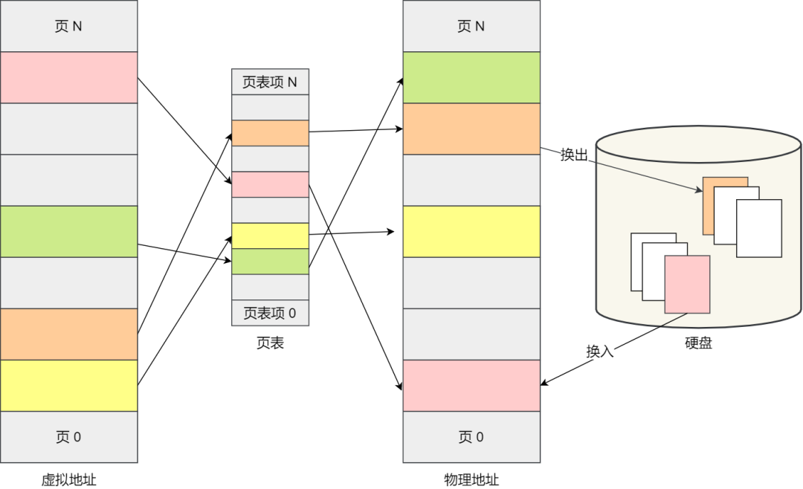
内存换入时，进程根据逻辑地址访问内存，逻辑地址转换为虚拟地址，再根据虚拟地址得出页号查页表得出物理页框号。若页表显示该页号未映射到具体物理页框号或页内容不在内存中，会产生缺页中断，中断处理程序负责将内容从磁盘中导入并更新页表。
内存换出的关键在于选择哪一页，常见的页面置换算法有 FIFO（先进先出）、OPTIMAL（最优算法）、LRU（最近最少使用）等。
中断是什么？
CPU停下当前的工作任务，去处理其他事情，处理完后回来继续执行刚才的任务，这一过程便是中断。
中断分为外部中断和内部中断：
-
外部中断分为可屏蔽中断和不可屏蔽中断：
-
可屏蔽中断：通过INTR线向CPU请求的中断，主要来自外部设备如硬盘，打印机，网卡等。此类中断并不会影响系统运行，可随时处理，甚至不处理，所以名为可屏蔽。
-
不可屏蔽中断：通过NMI线向CPU请求的中断，如电源掉电，硬件线路故障等。这里不可屏蔽的意思不是不可以屏蔽，不建议屏蔽，而是问题太大，屏蔽不了，不能屏蔽的意思。注：INTR和NMI都是CPU的引脚
-
内部中断分为陷阱、故障、终止：
-
陷阱：是一种有意的，预先安排的异常事件，一般是在编写程序时故意设下的陷阱指令，而后执行到陷阱指令后，CPU将会调用特定程序进行相应的处理，处理结束后返回到陷阱指令的下一条指令。如系统调用，程序调试功能等。如printf函数，最底层的实现中会有一条int 0x80指令，这就是一条陷阱指令，使用0x80号中断进行系统调用。
-
故障：故障是在引起故障的指令被执行，但还没有执行结束时，CPU检测到的一类的意外事件。出错时交由故障处理程序处理，如果能处理修正这个错误，就将控制返回到引起故障的指令即CPU重新执这条指令。如果不能处理就报错**。常见的故障为缺页，当CPU引用的虚拟地址对应的物理页不存在时就会发生故障。缺页异常是能够修正的，有着专门的缺页处理程序，它会将缺失的物理页从磁盘中重新调进主存。而后再次执行引起故障的指令时便能够顺利执行了。
-
终止：执行指令的过程中发生了致命错误，不可修复，程序无法继续运行，只能终止，通常会是一些硬件的错误。终止处理程序不会将控制返回给原程序，而是直接终止原程序
物理内存不够，为什么程序可以很大？
应用程序通过 malloc 函数申请内存的时候，实际上申请的是虚拟内存，此时并不会分配物理内存。
当应用程序读写了这块虚拟内存，CPU 就会去访问这个虚拟内存， 这时会发现这个虚拟内存没有映射到物理内存， CPU 就会产生缺页中断，进程会从用户态切换到内核态，并将缺页中断交给内核的 Page Fault Handler （缺页中断函数）处理。
缺页中断处理函数会看是否有空闲的物理内存：
- 如果有，就直接分配物理内存，并建立虚拟内存与物理内存之间的映射关系。
- 如果没有空闲的物理内存，那么内核就会开始进行回收内存的工作，如果回收内存工作结束后，空闲的物理内存仍然无法满足此次物理内存的申请，那么内核就会放最后的大招了触发 OOM （Out of Memory）机制。
32 位操作系统和 64 位操作系统的虚拟地址空间大小是不同的，在 Linux 操作系统中，虚拟地址空间的内部又被分为内核空间和用户空间两部分，如下所示：
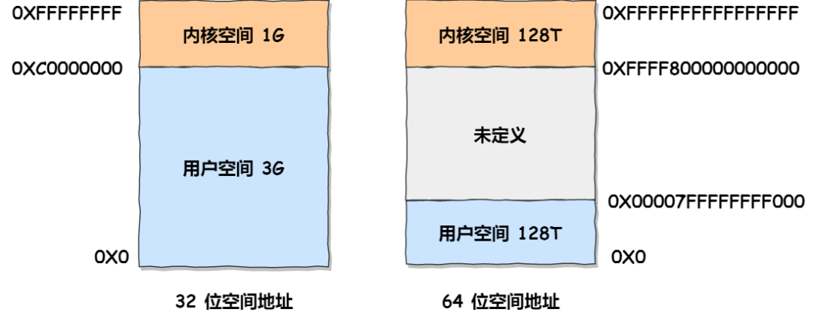
通过这里可以看出：
- 32 位系统的内核空间占用 1G，位于最高处，剩下的 3G 是用户空间；因为进程最大只能申请 3 GB 大小的虚拟内存，所以直接申请 8G 内存，会申请失败。
- 64 位系统的内核空间和用户空间都是 128T，分别占据整个内存空间的最高和最低处，剩下的中间部分是未定义的。因为进程最大只能申请 128 TB 大小的虚拟内存，即使物理内存只有 4GB，申请 8G 内存也是没问题，因为申请的内存是虚拟内存，等这块虚拟内存被访问了，因为物理空间不够，就会发生 OOM。
缺页中断是什么，操作系统会干什么 ？
当 CPU 访问的页面不在物理内存时，便会产生一个缺页中断，请求操作系统将所缺页调入到物理内存。那它与一般中断的主要区别在于：
- 缺页中断在指令执行「期间」产生和处理中断信号，而一般中断在一条指令执行「完成」后检查和处理中断信号。
- 缺页中断返回到该指令的开始重新执行「该指令」，而一般中断返回回到该指令的「下一个指令」执行。
我们来看一下缺页中断的处理流程，如下图：
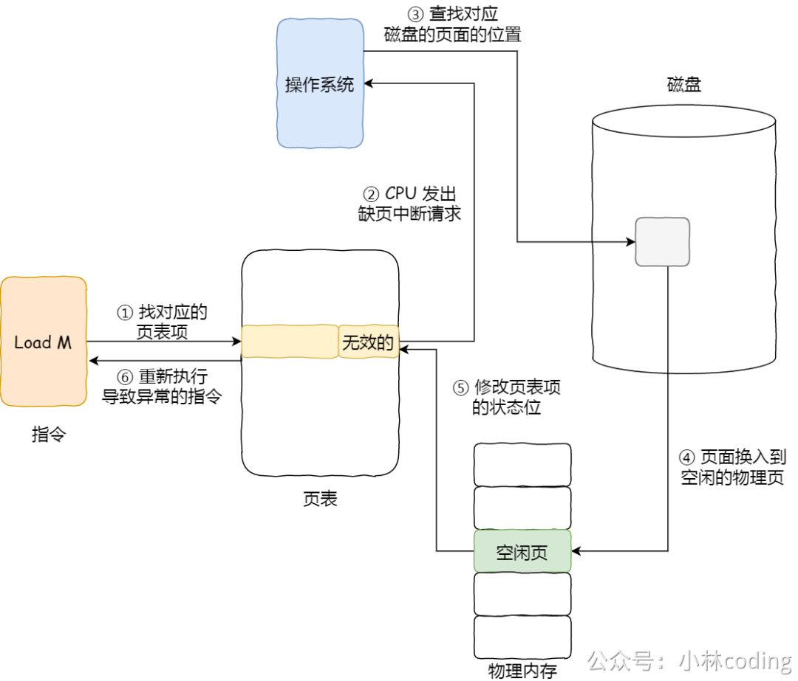
- 在 CPU 里访问一条 Load M 指令，然后 CPU 会去找 M 所对应的页表项。
- 如果该页表项的状态位是「有效的」，那 CPU 就可以直接去访问物理内存了，如果状态位是「无效的」，则 CPU 则会发送缺页中断请求。
- 操作系统收到了缺页中断，则会执行缺页中断处理函数，先会查找该页面在磁盘中的页面的位置。
- 找到磁盘中对应的页面后，需要把该页面换入到物理内存中，但是在换入前，需要在物理内存中找空闲页，如果找到空闲页，就把页面换入到物理内存中。
- 页面从磁盘换入到物理内存完成后，则把页表项中的状态位修改为「有效的」。
- 最后，CPU 重新执行导致缺页异常的指令。
上面所说的过程，第 4 步是能在物理内存找到空闲页的情况，那如果找不到呢？
找不到空闲页的话，就说明此时内存已满了，这时候，就需要「页面置换算法」选择一个物理页，如果该物理页有被修改过（脏页），则把它换出到磁盘，然后把该被置换出去的页表项的状态改成「无效的」，最后把正在访问的页面装入到这个物理页中。
这里提一下，页表项通常有如下图的字段：
那其中：
- 状态位：用于表示该页是否有效，也就是说是否在物理内存中，供程序访问时参考。
- 访问字段：用于记录该页在一段时间被访问的次数，供页面置换算法选择出页面时参考。
- 修改位：表示该页在调入内存后是否有被修改过，由于内存中的每一页都在磁盘上保留一份副本，因此，如果没有修改，在置换该页时就不需要将该页写回到磁盘上，以减少系统的开销；如果已经被修改，则将该页重写到磁盘上，以保证磁盘中所保留的始终是最新的副本。
- 硬盘地址：用于指出该页在硬盘上的地址，通常是物理块号，供调入该页时使用。
这里我整理了虚拟内存的管理整个流程，你可以从下面这张图看到：
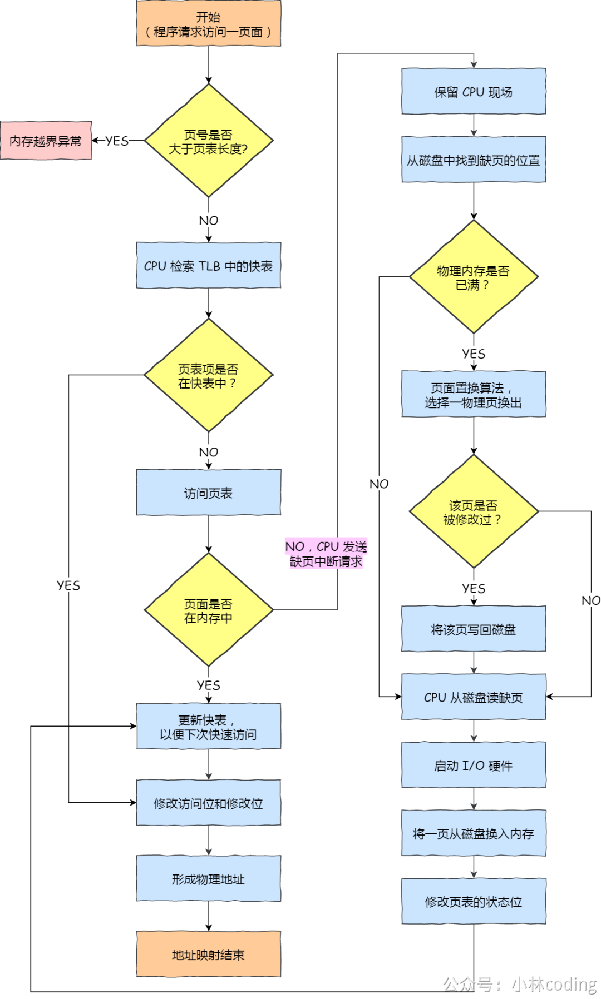
所以，页面置换算法的功能是，当出现缺页异常，需调入新页面而内存已满时，选择被置换的物理页面，也就是说选择一个物理页面换出到磁盘，然后把需要访问的页面换入到物理页。
缓存回收机制了解哪些？
- LRU：最近最少使用算法，当缓存满时，会回收那些在最近一段时间内最少被访问的缓存项。这是一种广泛使用的回收策略，能有效利用缓存空间。
- LFU：最近最少使用频率算法，回收使用频率最低的缓存项。与LRU不同的是，LFU是根据访问次数来决定哪些数据被回收。
栈内存和堆内存有什么区别？
- 分配方式：堆是动态分配内存，由程序员手动申请和释放内存，通常用于存储动态数据结构和对象。栈是静态分配内存，由编译器自动分配和释放内存，用于存储函数的局部变量和函数调用信息。
- 内存管理：堆需要程序员手动管理内存的分配和释放，如果管理不当可能会导致内存泄漏或内存溢出。栈由编译器自动管理内存，遵循后进先出的原则，变量的生命周期由其作用域决定，函数调用时分配内存，函数返回时释放内存。
- 大小和速度：堆通常比栈大，内存空间较大，动态分配和释放内存需要时间开销。栈大小有限，通常比较小，内存分配和释放速度较快，因为是编译器自动管理。
零拷贝是什么？
传统 IO 的工作方式，从硬盘读取数据，然后再通过网卡向外发送，我们需要进行 4 上下文切换，和 4 次数据拷贝，其中 2 次数据拷贝发生在内存里的缓冲区和对应的硬件设备之间，这个是由 DMA 完成，另外 2 次则发生在内核态和用户态之间，这个数据搬移工作是由 CPU 完成的。
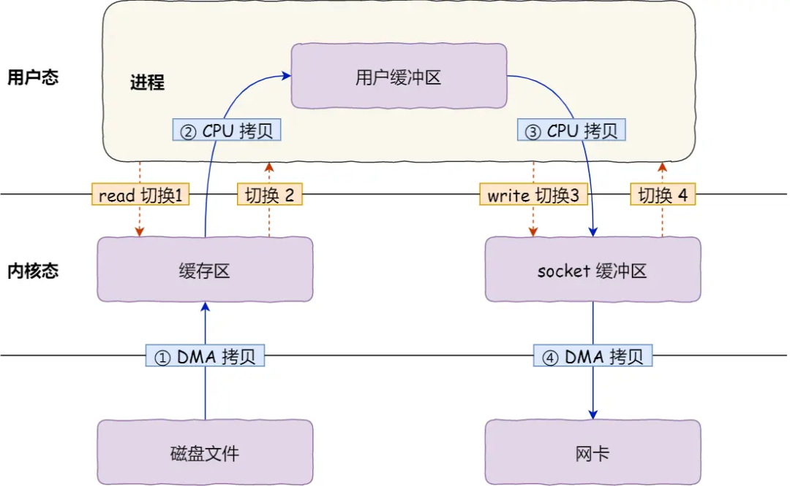
为了提高文件传输的性能，于是就出现了零拷贝技术，它通过一次系统调用（sendfile 方法）合并了磁盘读取与网络发送两个操作，降低了上下文切换次数。另外，拷贝数据都是发生在内核中的，天然就降低了数据拷贝的次数。
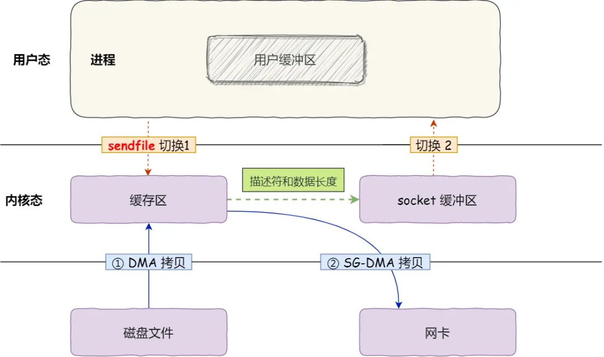
零拷贝技术的文件传输方式相比传统文件传输的方式，减少了 2 次上下文切换和数据拷贝次数，只需要 2 次上下文切换和数据拷贝次数，就可以完成文件的传输，而且 2 次的数据拷贝过程，都不需要通过 CPU，2 次都是由 DMA 来搬运。
总体来看，零拷贝技术可以把文件传输的性能提高至少一倍以上。
Copy On Write技术介绍一下
在创建子进程的过程中，操作系统会把父进程的「页表」复制一份给子进程，这个页表记录着虚拟地址和物理地址映射关系，而不会复制物理内存，也就是说，两者的虚拟空间不同，但其对应的物理空间是同一个。
这样一来，子进程就共享了父进程的物理内存数据了，这样能够节约物理内存资源，页表对应的页表项的属性会标记该物理内存的权限为只读。
当父进程或者子进程在向共享内存发起写操作时，CPU 就会触发写保护中断，这个「写保护中断」是由于违反权限导致的，然后操作系统会在「写保护中断处理函数」里进行物理内存的复制，并重新设置其内存映射关系，将父子进程的内存读写权限设置为可读写，最后才会对内存进行写操作，这个过程被称为「**写时复制(Copy On Write)**」。
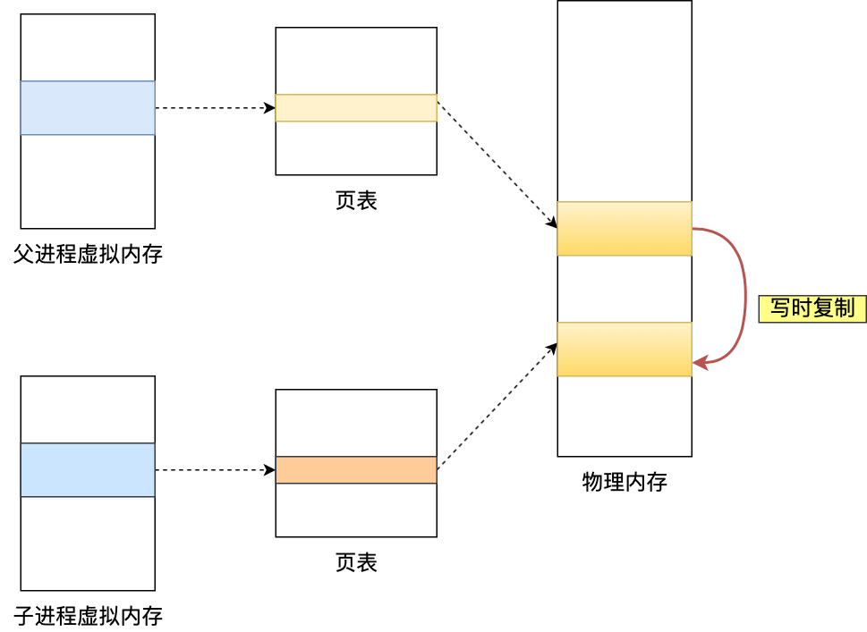
写时复制顾名思义，在发生写操作的时候，操作系统才会去复制物理内存，这样是为了防止 fork 创建子进程时，由于物理内存数据的复制时间过长而导致父进程长时间阻塞的问题。
【Linux】Linux里的锁的机制？
互斥锁、信号量、条件变量、readwrite lock，自旋锁 （忘记自旋锁了，面试官提示：就你刚才说的AQS里的，无锁；哦CAS，自旋锁）
2. 操作系统的进程调度算法有哪些
先来先服务调度算法
最简单的一个调度算法，就是非抢占式的先来先服务算法了。
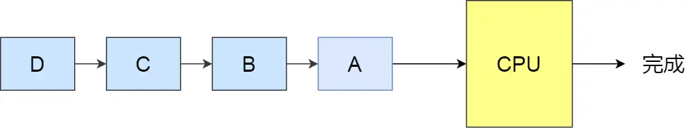
这似乎很公平，但是当一个长作业先运行了，那么后面的短作业等待的时间就会很长，不利于短作业。 FCFS 对长作业有利，适用于 CPU 繁忙型作业的系统，而不适用于 I/O 繁忙型作业的系统。
最短作业优先调度算法
最短作业优先调度算法同样也是顾名思义，它会优先选择运行时间最短的进程来运行，这有助于提高系统的吞吐量。
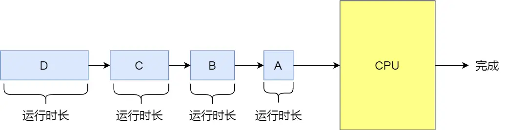
这显然对长作业不利，很容易造成一种极端现象。
比如，一个长作业在就绪队列等待运行，而这个就绪队列有非常多的短作业，那么就会使得长作业不断的往后推，周转时间变长，致使长作业长期不会被运行。
高响应比优先调度算法
前面的「先来先服务调度算法」和「最短作业优先调度算法」都没有很好的权衡短作业和长作业。
那么，高响应比优先调度算法主要是权衡了短作业和长作业。
每次进行进程调度时，先计算「响应比优先级」，然后把「响应比优先级」最高的进程投入运行，「响应比优先级」的计算公式：
从上面的公式，可以发现：
- 如果两个进程的「等待时间」相同时，「要求的服务时间」越短，「响应比」就越高，这样短作业的进程容易被选中运行；
- 如果两个进程「要求的服务时间」相同时，「等待时间」越长，「响应比」就越高，这就兼顾到了长作业进程，因为进程的响应比可以随时间等待的增加而提高，当其等待时间足够长时，其响应比便可以升到很高，从而获得运行的机会；
时间片轮转调度算法
最古老、最简单、最公平且使用最广的算法就是时间片轮转调度算法。
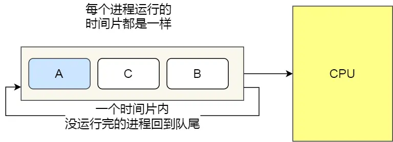
- 如果时间片用完，进程还在运行，那么将会把此进程从 CPU 释放出来，并把 CPU 分配另外一个进程；
- 如果该进程在时间片结束前阻塞或结束，则 CPU 立即进行切换；
另外，时间片的长度就是一个很关键的点：
- 如果时间片设得太短会导致过多的进程上下文切换，降低了 CPU 效率；
- 如果设得太长又可能引起对短作业进程的响应时间变长。将
通常时间片设为 20ms~50ms 通常是一个比较合理的折中值。
最高优先级调度算法
前面的「时间片轮转算法」做了个假设，即让所有的进程同等重要，也不偏袒谁，大家的运行时间都一样。
但是，对于多用户计算机系统就有不同的看法了，它们希望调度是有优先级的，即希望调度程序能从就绪队列中选择最高优先级的进程进行运行，这称为最高优先级调度算法。 进程的优先级可以分为，静态优先级或动态优先级：
- 静态优先级：创建进程时候，就已经确定了优先级了，然后整个运行时间优先级都不会变化；
- 动态优先级：根据进程的动态变化调整优先级，比如如果进程运行时间增加，则降低其优先级，如果进程等待时间（就绪队列的等待时间）增加，则升高其优先级，也就是随着时间的推移增加等待进程的优先级。
该算法也有两种处理优先级高的方法，非抢占式和抢占式：
- 非抢占式：当就绪队列中出现优先级高的进程，运行完当前进程，再选择优先级高的进程。
- 抢占式：当就绪队列中出现优先级高的进程，当前进程挂起，调度优先级高的进程运行。
但是依然有缺点，可能会导致低优先级的进程永远不会运行。
多级反馈队列调度算法
多级反馈队列调度算法是「时间片轮转算法」和「最高优先级算法」的综合和发展。
顾名思义：
- 「多级」表示有多个队列，每个队列优先级从高到低，同时优先级越高时间片越短。
- 「反馈」表示如果有新的进程加入优先级高的队列时，立刻停止当前正在运行的进程，转而去运行优先级高的队列；
来看看，它是如何工作的：
- 设置了多个队列，赋予每个队列不同的优先级，每个队列优先级从高到低，同时优先级越高时间片越短；
- 新的进程会被放入到第一级队列的末尾，按先来先服务的原则排队等待被调度，如果在第一级队列规定的时间片没运行完成，则将其转入到第二级队列的末尾，以此类推，直至完成；
- 当较高优先级的队列为空，才调度较低优先级的队列中的进程运行。如果进程运行时，有新进程进入较高优先级的队列，则停止当前运行的进程并将其移入到原队列末尾，接着让较高优先级的进程运行；
可以发现，对于短作业可能可以在第一级队列很快被处理完。
对于长作业，如果在第一级队列处理不完，可以移入下次队列等待被执行，虽然等待的时间变长了，但是运行时间也会更长了，所以该算法很好的兼顾了长短作业，同时有较好的响应时间。
多路IO复用是单线程的还是多线程的？
IO多路复用是一种IO得处理方式，指的是复用一个线程，处理多个socket中的事件。能够资源复用，防止创建过多线程导致的上下文切换的开销。
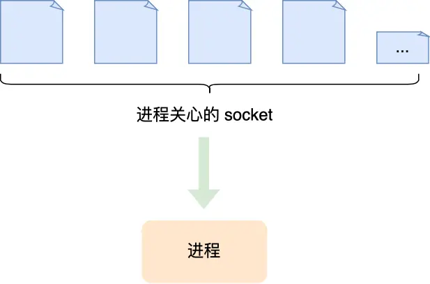
io 多路复用可以只用单线程来处理多个客户端的I/O事件，但是并不是说 io 多路复用只能用单线程，实际上也可以用多线程的模型来提供网络的吞吐量，比如多 Reactor 多线程的网络模型。
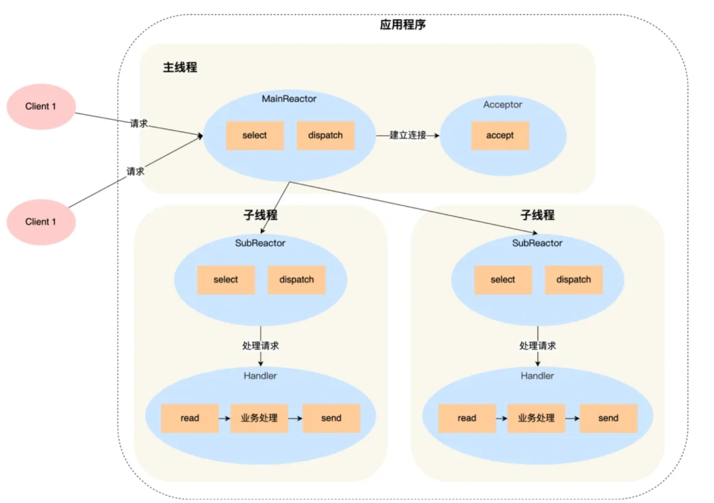
多 Reactor 多线程的方案优势：
- 主线程和子线程分工明确，主线程只负责接收新连接，子线程负责完成后续的业务处理。
- 主线程和子线程的交互很简单，主线程只需要把新连接传给子线程，子线程无须返回数据，直接就可以在子线程将处理结果发送给客户端。
零拷贝是什么意思？哪里用到了？
传统 IO 的工作方式，从硬盘读取数据，然后再通过网卡向外发送，我们需要进行 4 上下文切换，和 4 次数据拷贝，其中 2 次数据拷贝发生在内存里的缓冲区和对应的硬件设备之间，这个是由 DMA 完成，另外 2 次则发生在内核态和用户态之间，这个数据搬移工作是由 CPU 完成的。为了提高文件传输的性能，于是就出现了零拷贝技术，它通过一次系统调用（sendfile 方法）合并了磁盘读取与网络发送两个操作，降低了上下文切换次数。另外，拷贝数据都是发生在内核中的，天然就降低了数据拷贝的次数。零拷贝技术的文件传输方式相比传统文件传输的方式，减少了 2 次上下文切换和数据拷贝次数，只需要 2 次上下文切换和数据拷贝次数，就可以完成文件的传输，而且 2 次的数据拷贝过程，都不需要通过 CPU，2 次都是由 DMA 来搬运。
总体来看，零拷贝技术可以把文件传输的性能提高至少一倍以上。
kafka 高性能之一的原因是用到零拷贝的技术，追溯 Kafka 文件传输的代码，你会发现，最终它调用了 Java NIO 库里的 transferTo 方法：
@Overridepublic
long transferFrom(FileChannel fileChannel, long position, long count) throws IOException {
return fileChannel.transferTo(position, count, socketChannel);
}
如果 Linux 系统支持 sendfile() 系统调用，那么 transferTo() 实际上最后就会使用到 sendfile() 系统调用函数。
Nginx 也支持零拷贝的技术，在内核中实现的 TLS 叫 kTLS， 可显着减少用户空间和内核之间复制操作的需要，从而提高性能。将 kTLS 和 **sendfile()** 结合意味着数据在传递到网络堆栈进行传输之前直接在内核空间中加密。这样就无需将数据复制到用户空间以由 TLS 库加密，然后再复制回内核空间进行传输。kTLS 还支持将 TLS 处理卸载到硬件，包括将 TLS 对称加密处理卸载到网络设备。
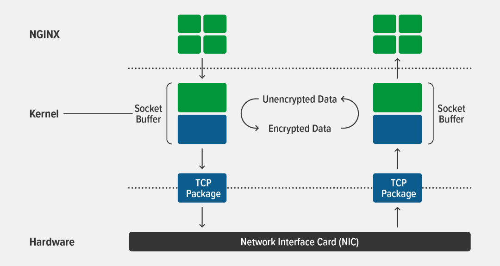
nginx是如何保证高并发的
nginx 是多 Reactor 多进程方案，不过方案与标准的多 Reactor 多进程有些差异。
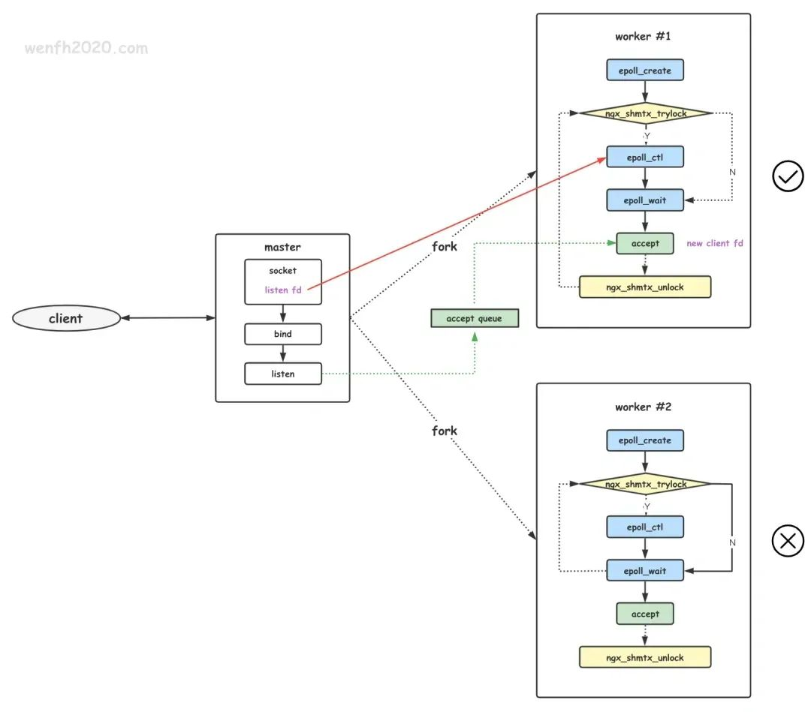
具体差异表现在主进程中仅仅用来初始化 socket，并没有创建 mainReactor 来 accept 连接，而是由子进程的 Reactor 来 accept 连接，通过锁来控制一次只有一个子进程进行 accept（防止出现惊群现象），子进程 accept 新连接后就放到自己的 Reactor 进行处理，不会再分配给其他子进程。
并发、并行、同步、异步的概念
并发与并行
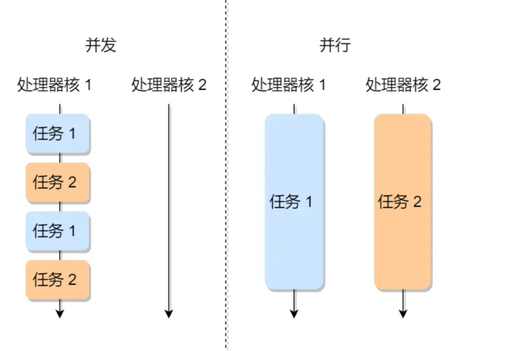
- 并发：并发是指在同一时间段内，多个任务或进程可以在一个单一的处理器上交替地进行执行。即使只有一个处理器，也可以通过快速切换任务来实现看起来像是同时执行。
- 并行：并行是指在同一时刻，有多个任务或进程同时在多个处理器或核心上执行。并行真正利用了多核或多处理器系统的硬件能力。
同步与异步
同步和异步最大的区别就在于：同步需要等待，异步不需要等待。
同步与异步是指访问数据的机制：
- 同步一般指主动请求并等待IO操作完成的方式，比如阻塞IO/非阻塞IO/IO多路复用都属于同步I/O。
- 异步则指主动请求数据后便可以继续处理其它任务，随后等待IO操作完毕的通知，只有异步I/O才是真正的异步。
先来看看阻塞 I/O，当用户程序执行 read ，线程会被阻塞，一直等到内核数据准备好，并把数据从内核缓冲区拷贝到应用程序的缓冲区中，当拷贝过程完成，read 才会返回。
注意，阻塞等待的是「内核数据准备好」和「数据从内核态拷贝到用户态」这两个过程。过程如下图：
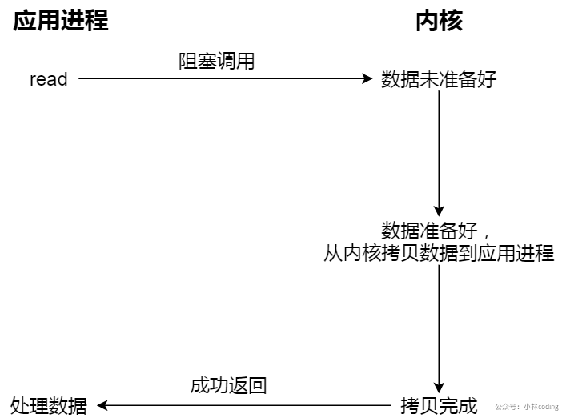
知道了阻塞 I/O ，来看看非阻塞 I/O，非阻塞的 read 请求在数据未准备好的情况下立即返回，可以继续往下执行，此时应用程序不断轮询内核，直到数据准备好，内核将数据拷贝到应用程序缓冲区，read 调用才可以获取到结果。过程如下图：
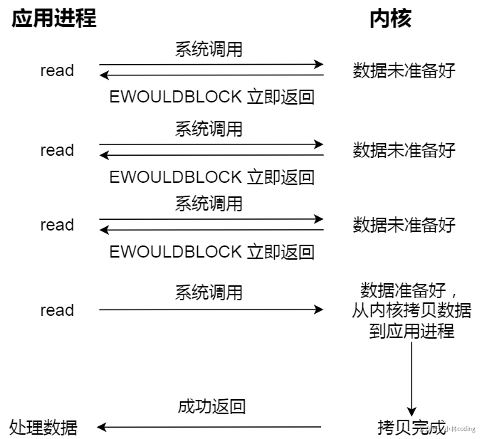
注意，这里最后一次 read 调用，获取数据的过程，是一个同步的过程，是需要等待的过程。这里的同步指的是内核态的数据拷贝到用户程序的缓存区这个过程。
举个例子，访问管道或 socket 时，如果设置了 O_NONBLOCK 标志，那么就表示使用的是非阻塞 I/O 的方式访问，而不做任何设置的话，默认是阻塞 I/O。
应用程序每次轮询内核的 I/O 是否准备好，感觉有点傻乎乎，因为轮询的过程中，应用程序啥也做不了，只是在循环。
为了解决这种傻乎乎轮询方式，于是 I/O 多路复用技术就出来了，如 select、poll，它是通过 I/O 事件分发，当内核数据准备好时，再以事件通知应用程序进行操作。
这个做法大大改善了应用进程对 CPU 的利用率，在没有被通知的情况下，应用进程可以使用 CPU 做其他的事情。
下图是使用 select I/O 多路复用过程。注意，read 获取数据的过程（数据从内核态拷贝到用户态的过程），也是一个同步的过程，需要等待：
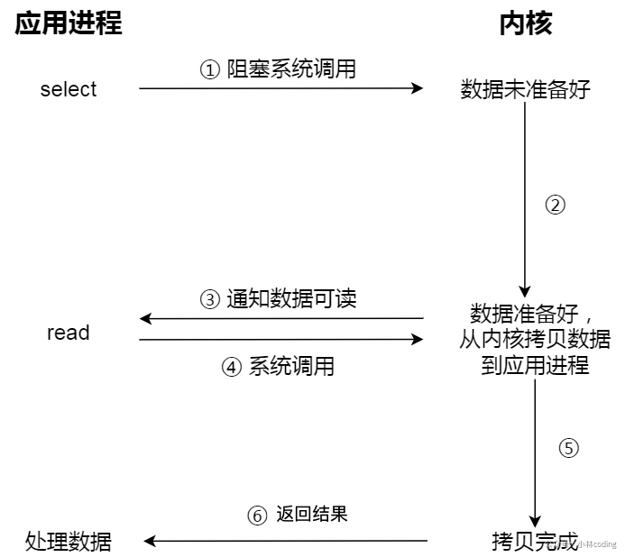
实际上，无论是阻塞 I/O、非阻塞 I/O，还是基于非阻塞 I/O 的多路复用都是同步调用。因为它们在 read 调用时，内核将数据从内核空间拷贝到应用程序空间，过程都是需要等待的，也就是说这个过程是同步的，如果内核实现的拷贝效率不高，read 调用就会在这个同步过程中等待比较长的时间。
而真正的异步 I/O 是「内核数据准备好」和「数据从内核态拷贝到用户态」这两个过程都不用等待。
当我们发起 aio_read 之后，就立即返回，内核自动将数据从内核空间拷贝到应用程序空间，这个拷贝过程同样是异步的，内核自动完成的，和前面的同步操作不一样，应用程序并不需要主动发起拷贝动作。过程如下图：
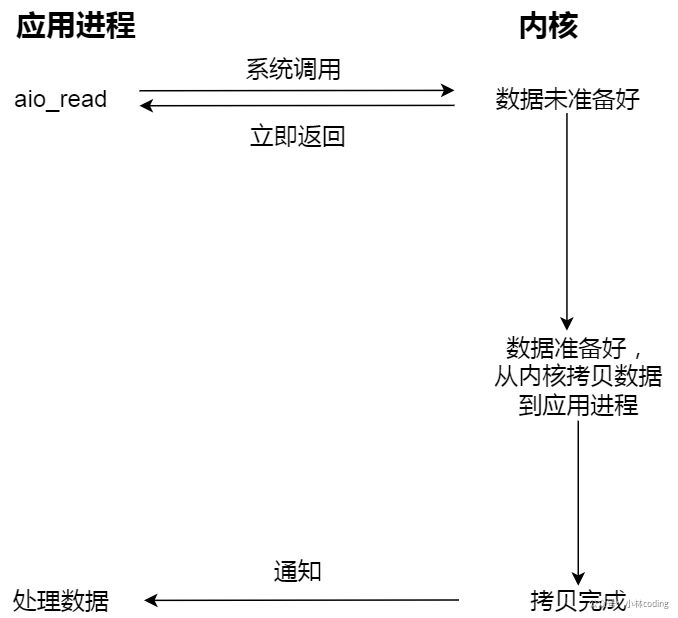
下面这张图，总结了以上几种 I/O 模型：
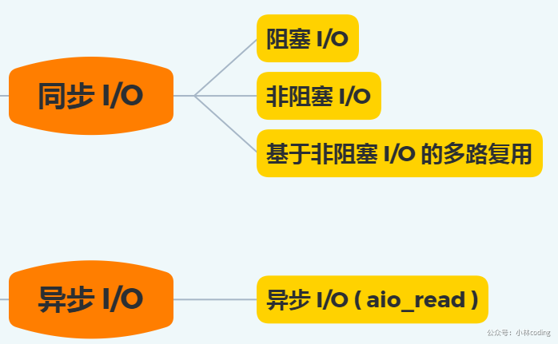
在前面我们知道了，I/O 是分为两个过程的：
- 数据准备的过程
- 数据从内核空间拷贝到用户进程缓冲区的过程
阻塞 I/O 会阻塞在「过程 1 」和「过程 2」，而非阻塞 I/O 和基于非阻塞 I/O 的多路复用只会阻塞在「过程 2」，所以这三个都可以认为是同步 I/O。
异步 I/O 则不同，「过程 1 」和「过程 2 」都不会阻塞。
浮点数是怎么存储的
现在绝大多数计算机使用的浮点数，一般采用的是 IEEE 制定的国际标准，这种标准形式如下图：
这三个重要部分的意义如下：
-
符号位：表示数字是正数还是负数，为 0 表示正数，为 1 表示负数；
-
指数位：指定了小数点在数据中的位置，指数可以是负数，也可以是正数，指数位的长度越长则数值的表达范围就越大；
-
尾数位：小数点右侧的数字，也就是小数部分，比如二进制 1.0011 x 2^(-2)，尾数部分就是 0011，而且尾数的长度决定了这个数的精度，因此如果要表示精度更高的小数，则就要提高尾数位的长度；
用 32 位来表示的浮点数，则称为单精度浮点数，也就是我们编程语言中的 float 变量，而用 64 位来表示的浮点数，称为双精度浮点数，也就是 double 变量，它们的结构如下：
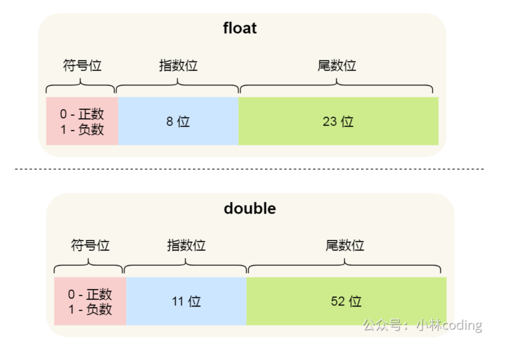
可以看到：
-
double 的尾数部分是 52 位，float 的尾数部分是 23 位，由于同时都带有一个固定隐含位（这个后面会说），所以 double 有 53 个二进制有效位，float 有 24 个二进制有效位，所以所以它们的精度在十进制中分别是 log10(2^53) 约等于 15.95 和 log10(2^24) 约等于 7.22 位，因此 double 的有效数字是 15~16 位，float 的有效数字是 7~8 位，这些有效位是包含整数部分和小数部分；
-
double 的指数部分是 11 位，而 float 的指数位是 8 位，意味着 double 相比 float 能表示更大的数值范围；
那二进制小数，是如何转换成二进制浮点数的呢？
我们就以 10.625 作为例子，看看这个数字在 float 里是如何存储的。
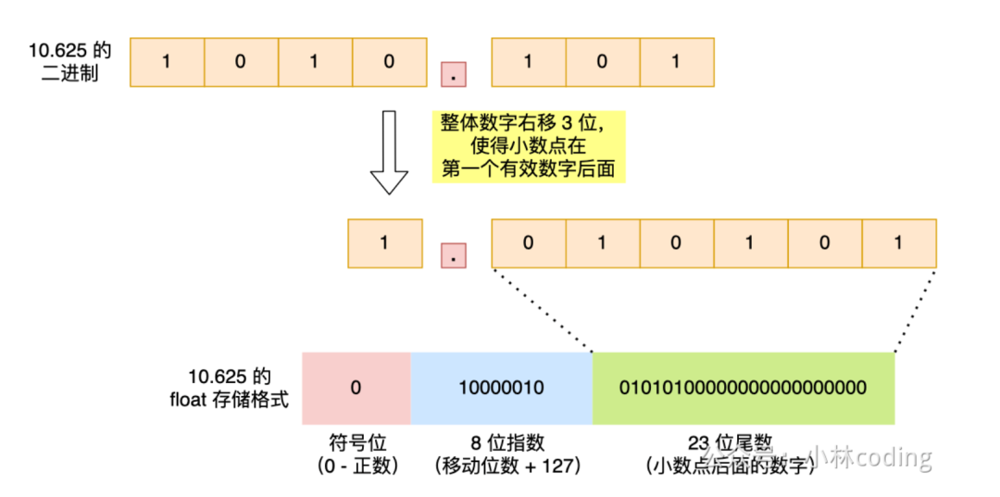
首先，我们计算出 10.625 的二进制小数为 1010.101。
然后把小数点，移动到第一个有效数字后面，即将 1010.101 右移 3 位成 1.010101，右移 3 位就代表 +3，左移 3 位就是 -3。
float 中的「指数位」就跟这里移动的位数有关系，把移动的位数再加上「偏移量」，float 的话偏移量是 127，相加后就是指数位的值了，即指数位这 8 位存的是 10000010（十进制 130），因此你可以认为「指数位」相当于指明了小数点在数据中的位置。
1.010101 这个数的小数点右侧的数字就是 float 里的「尾数位」，由于尾数位是 23 位，则后面要补充 0，所以最终尾数位存储的数字是 01010100000000000000000。
在算指数的时候，你可能会有疑问为什么要加上偏移量呢？
前面也提到，指数可能是正数，也可能是负数，即指数是有符号的整数，而有符号整数的计算是比无符号整数麻烦的，所以为了减少不必要的麻烦，在实际存储指数的时候，需要把指数转换成无符号整数。
float 的指数部分是 8 位，IEEE 标准规定单精度浮点的指数取值范围是 -126 ~ +127，于是为了把指数转换成无符号整数，就要加个偏移量，比如 float 的指数偏移量是 127，这样指数就不会出现负数了。
比如，指数如果是 8，则实际存储的指数是 8 + 127（偏移量）= 135，即把 135 转换为二进制之后再存储，而当我们需要计算实际的十进制数的时候，再把指数减去「偏移量」即可。
细心的朋友肯定发现，移动后的小数点左侧的有效位（即 1）消失了，它并没有存储到 float 里。
这是因为 IEEE 标准规定，二进制浮点数的小数点左侧只能有 1 位，并且还只能是 1，既然这一位永远都是 1，那就可以不用存起来了。
于是就让 23 位尾数只存储小数部分，然后在计算时会自动把这个 1 加上，这样就可以节约 1 位的空间，尾数就能多存一位小数，相应的精度就更高了一点。
那么，对于我们在从 float 的二进制浮点数转换成十进制时，要考虑到这个隐含的 1，转换公式如下：
举个例子，我们把下图这个 float 的数据转换成十进制，过程如下：
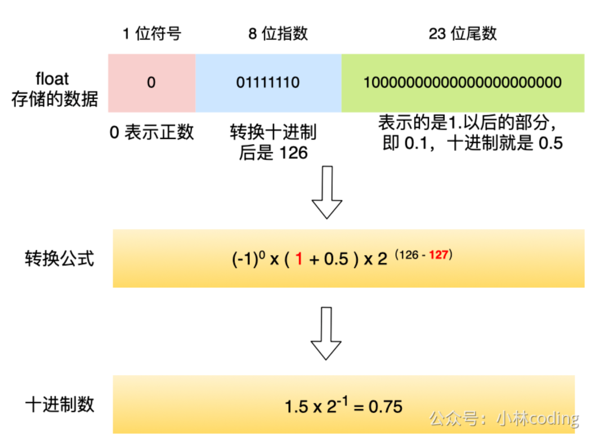
内核和用户态切换发生什么 ？
-
先会保存用户态的上下文信息。CPU 会将当前用户态进程使用的通用寄存器、程序计数器（PC）、栈指针（SP）、标志寄存器等内容保存起来。这些寄存器中存储着用户态程序当前的执行状态和相关数据，比如正在执行的指令位置、函数调用的参数和局部变量等，以便内核态处理完任务后能恢复到正确的用户态执行位置。将用户态栈中的相关信息进行保存，包括栈上的函数调用帧、局部变量等，因为从用户态切换到内核态后，需要使用内核栈来进行内核代码的执行，所以要先把用户栈的状态保存下来。
-
然后进行模式与权限的切换。通过修改 CPU 的特定标志位或寄存器，将处理器的运行模式从用户态切换到内核态，使 CPU 能够执行特权指令，访问所有的内存空间和硬件资源。内核会检查此次切换的合法性和权限，比如检查系统调用的参数是否正确、进程是否具有相应的权限来执行此操作等，以确保系统的安全性和稳定性。
-
加载内核态上下文并执行内核态代码。根据进程的描述符或任务控制块（TCB）中保存的内核栈信息，将栈指针设置为指向内核栈的地址，开始使用内核栈来进行内核代码的执行。将程序计数器（PC）设置为相应的内核处理程序的入口地址，开始执行内核代码，以处理系统调用、中断或异常等事件。
13. 中断和异常的区别？
中断是由外部事件触发的，而异常是由程序内部错误触发的。
-
中断是指来自外部设备或其他程序的异步事件，它会打断当前正在执行的程序，引起操作系统的注意。中断可以是硬件中断（如定时器中断、键盘输入中断）或软件中断（如系统调用）。当中断事件发生时，操作系统会中断当前程序的执行，保存当前上下文，并转而处理中断事件。处理完中断事件后，操作系统会恢复被中断的程序的执行。
-
异常是指在程序的执行过程中发生的一些意外或非法的事件，如除零错误、访问非法内存等。异常通常是由程序内部的错误引起的，它会导致程序无法正常继续执行。当异常事件发生时，操作系统会中断当前程序的执行，保存当前上下文，并转而处理异常事件。处理完异常事件后，操作系统可能会终止异常程序的执行或采取其他措施进行处理。
进程调度算法
先来先服务调度算法
最简单的一个调度算法，就是非抢占式的先来先服务（_First Come First Severd, FCFS_）算法了。
顾名思义，先来后到，每次从就绪队列选择最先进入队列的进程，然后一直运行，直到进程退出或被阻塞，才会继续从队列中选择第一个进程接着运行。
这似乎很公平，但是当一个长作业先运行了，那么后面的短作业等待的时间就会很长，不利于短作业。
FCFS 对长作业有利，适用于 CPU 繁忙型作业的系统，而不适用于 I/O 繁忙型作业的系统。
最短作业优先调度算法
最短作业优先（Shortest Job First, SJF_）调度算法同样也是顾名思义，它会优先选择运行时间最短的进程来运行，这有助于提高系统的吞吐量。
这显然对长作业不利，很容易造成一种极端现象。
比如，一个长作业在就绪队列等待运行，而这个就绪队列有非常多的短作业，那么就会使得长作业不断的往后推，周转时间变长，致使长作业长期不会被运行。
高响应比优先调度算法
前面的「先来先服务调度算法」和「最短作业优先调度算法」都没有很好的权衡短作业和长作业。
那么，高响应比优先 （Highest Response Ratio Next, HRRN）调度算法主要是权衡了短作业和长作业。
每次进行进程调度时，先计算「响应比优先级」，然后把「响应比优先级」最高的进程投入运行，「响应比优先级」的计算公式：
从上面的公式，可以发现：
- 如果两个进程的「等待时间」相同时，「要求的服务时间」越短，「响应比」就越高，这样短作业的进程容易被选中运行；
- 如果两个进程「要求的服务时间」相同时，「等待时间」越长，「响应比」就越高，这就兼顾到了长作业进程，因为进程的响应比可以随时间等待的增加而提高，当其等待时间足够长时，其响应比便可以升到很高，从而获得运行的机会；
时间片轮转调度算法
最古老、最简单、最公平且使用最广的算法就是时间片轮转（_Round Robin, RR_）调度算法。每个进程被分配一个时间段，称为时间片（_Quantum_），即允许该进程在该时间段中运行。
- 如果时间片用完，进程还在运行，那么将会把此进程从 CPU 释放出来，并把 CPU 分配另外一个进程；
- 如果该进程在时间片结束前阻塞或结束，则 CPU 立即进行切换；
另外，时间片的长度就是一个很关键的点：
- 如果时间片设得太短会导致过多的进程上下文切换，降低了 CPU 效率；
- 如果设得太长又可能引起对短作业进程的响应时间变长。将
通常时间片设为 20ms~50ms 通常是一个比较合理的折中值。
最高优先级调度算法
前面的「时间片轮转算法」做了个假设，即让所有的进程同等重要，也不偏袒谁，大家的运行时间都一样。
但是，对于多用户计算机系统就有不同的看法了，它们希望调度是有优先级的，即希望调度程序能从就绪队列中选择最高优先级的进程进行运行，这称为最高优先级（_Highest Priority First，HPF_）调度算法。
进程的优先级可以分为，静态优先级或动态优先级：
- 静态优先级：创建进程时候，就已经确定了优先级了，然后整个运行时间优先级都不会变化；
- 动态优先级：根据进程的动态变化调整优先级，比如如果进程运行时间增加，则降低其优先级，如果进程等待时间（就绪队列的等待时间）增加，则升高其优先级，也就是随着时间的推移增加等待进程的优先级。
该算法也有两种处理优先级高的方法，非抢占式和抢占式：
- 非抢占式：当就绪队列中出现优先级高的进程，运行完当前进程，再选择优先级高的进程。
- 抢占式：当就绪队列中出现优先级高的进程，当前进程挂起，调度优先级高的进程运行。
但是依然有缺点，可能会导致低优先级的进程永远不会运行。
多级反馈队列调度算法
多级反馈队列（_Multilevel Feedback Queue_）调度算法是「时间片轮转算法」和「最高优先级算法」的综合和发展。
顾名思义：
- 「多级」表示有多个队列，每个队列优先级从高到低，同时优先级越高时间片越短。
- 「反馈」表示如果有新的进程加入优先级高的队列时，立刻停止当前正在运行的进程，转而去运行优先级高的队列；
来看看，它是如何工作的：
- 设置了多个队列，赋予每个队列不同的优先级，每个队列优先级从高到低，同时优先级越高时间片越短；
- 新的进程会被放入到第一级队列的末尾，按先来先服务的原则排队等待被调度，如果在第一级队列规定的时间片没运行完成，则将其转入到第二级队列的末尾，以此类推，直至完成；
- 当较高优先级的队列为空，才调度较低优先级的队列中的进程运行。如果进程运行时，有新进程进入较高优先级的队列，则停止当前运行的进程并将其移入到原队列末尾，接着让较高优先级的进程运行；
可以发现，对于短作业可能可以在第一级队列很快被处理完。对于长作业，如果在第一级队列处理不完，可以移入下次队列等待被执行，虽然等待的时间变长了，但是运行时间也会更长了，所以该算法很好的兼顾了长短作业，同时有较好的响应时间。
自旋锁是什么？应用在哪些场景？
自旋锁加锁失败后，线程会忙等待，直到它拿到锁。
自旋锁是通过 CPU 提供的 CAS 函数（Compare And Swap），在「用户态」完成加锁和解锁操作，不会主动产生线程上下文切换，所以相比互斥锁来说，会快一些，开销也小一些。
一般加锁的过程，包含两个步骤：
- 第一步，查看锁的状态，如果锁是空闲的，则执行第二步；
- 第二步，将锁设置为当前线程持有；
CAS 函数就把这两个步骤合并成一条硬件级指令，形成原子指令，这样就保证了这两个步骤是不可分割的，要么一次性执行完两个步骤，要么两个步骤都不执行。
比如，设锁为变量 lock，整数 0 表示锁是空闲状态，整数 pid 表示线程 ID，那么 CAS(lock, 0, pid) 就表示自旋锁的加锁操作，CAS(lock, pid, 0) 则表示解锁操作。
使用自旋锁的时候，当发生多线程竞争锁的情况，加锁失败的线程会「忙等待」，直到它拿到锁。这里的「忙等待」可以用 while 循环等待实现，不过最好是使用 CPU 提供的 PAUSE 指令来实现「忙等待」，因为可以减少循环等待时的耗电量。
自旋锁是最比较简单的一种锁，一直自旋，利用 CPU 周期，直到锁可用。需要注意，在单核 CPU 上，需要抢占式的调度器（即不断通过时钟中断一个线程，运行其他线程）。否则，自旋锁在单 CPU 上无法使用，因为一个自旋的线程永远不会放弃 CPU。
自旋锁开销少，在多核系统下一般不会主动产生线程切换，适合异步、协程等在用户态切换请求的编程方式，但如果被锁住的代码执行时间过长，自旋的线程会长时间占用 CPU 资源，所以自旋的时间和被锁住的代码执行的时间是成「正比」的关系，我们需要清楚的知道这一点。
自旋锁与互斥锁使用层面比较相似，但实现层面上完全不同：当加锁失败时，互斥锁用「线程切换」来应对，自旋锁则用「忙等待」来应对。
如果你能确定被锁住的代码执行时间很短，就不应该用互斥锁，而应该选用自旋锁，否则使用互斥锁。
虚拟内存是个什么东西？
答：为了使得程序每次都是从地址0开始，而不用去查找实际地址，所以设置一个虚拟内存，使得程序可以都从0开始，如果用到了，再由虚拟内存和物理内存进行一一映射。
那么你在Linux环境下有调用过系统接口去创建过线程什么的吗？
答：可以用 fork 创建进行，用 phtread 创建线程。
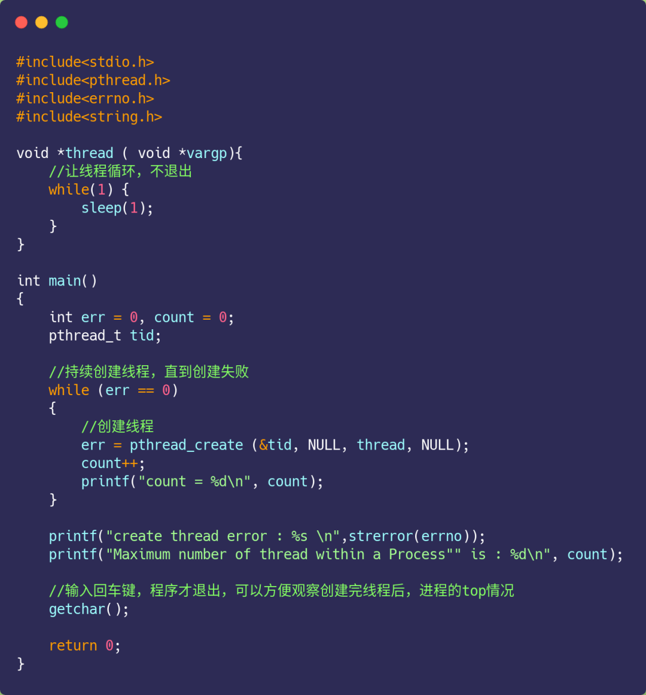
13. os的内存管理有分页和分段了解吗？
回答：
- 分段是逻辑方面的，比如函数会放在一个段，提高复用性
- 还能多想一点吗 虚拟内存是分页还是分段
- 分页，记得一个页面置换
14. 页面置换有哪些算法？
回答：纯靠上课印象了 （LRU、LFU、时钟）
小林补充
页面置换算法的功能是，当出现缺页异常，需调入新页面而内存已满时，选择被置换的物理页面，也就是说选择一个物理页面换出到磁盘，然后把需要访问的页面换入到物理页。
那其算法目标则是，尽可能减少页面的换入换出的次数，常见的页面置换算法有如下几种：
- 最佳页面置换算法（OPT）
- 先进先出置换算法（FIFO）
- 最近最久未使用的置换算法（LRU）
- 时钟页面置换算法（Lock）
- 最不常用置换算法（LFU）
最佳页面置换算法
最佳页面置换算法基本思路是，置换在「未来」最长时间不访问的页面。
所以，该算法实现需要计算内存中每个逻辑页面的「下一次」访问时间，然后比较，选择未来最长时间不访问的页面。
我们举个例子，假设一开始有 3 个空闲的物理页，然后有请求的页面序列，那它的置换过程如下图：
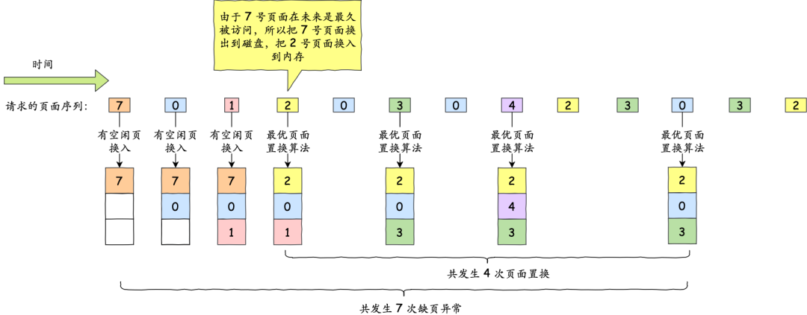
在这个请求的页面序列中，缺页共发生了 7 次（空闲页换入 3 次 + 最优页面置换 4 次），页面置换共发生了 4 次。
这很理想，但是实际系统中无法实现，因为程序访问页面时是动态的，我们是无法预知每个页面在「下一次」访问前的等待时间。
所以，最佳页面置换算法作用是为了衡量你的算法的效率，你的算法效率越接近该算法的效率，那么说明你的算法是高效的。
先进先出置换算法
既然我们无法预知页面在下一次访问前所需的等待时间，那我们可以选择在内存驻留时间很长的页面进行中置换，这个就是「先进先出置换」算法的思想。
还是以前面的请求的页面序列作为例子，假设使用先进先出置换算法，则过程如下图：
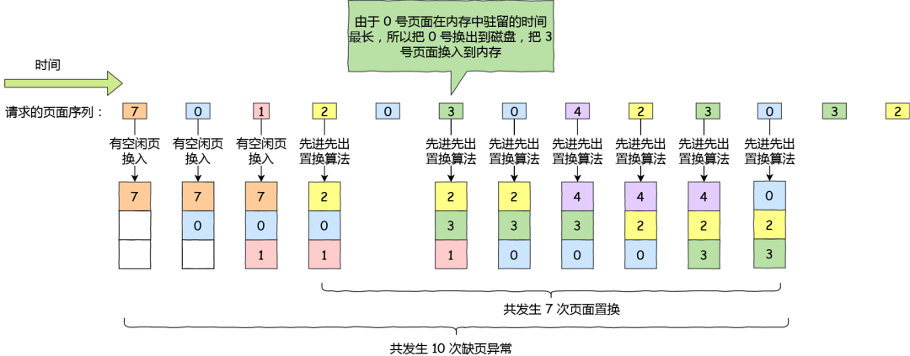
在这个请求的页面序列中，缺页共发生了 10 次，页面置换共发生了 7 次，跟最佳页面置换算法比较起来，性能明显差了很多。
最近最久未使用的置换算法
最近最久未使用（LRU）的置换算法的基本思路是，发生缺页时，选择最长时间没有被访问的页面进行置换，也就是说，该算法假设已经很久没有使用的页面很有可能在未来较长的一段时间内仍然不会被使用。
这种算法近似最优置换算法，最优置换算法是通过「未来」的使用情况来推测要淘汰的页面，而 LRU 则是通过「历史」的使用情况来推测要淘汰的页面。
还是以前面的请求的页面序列作为例子，假设使用最近最久未使用的置换算法，则过程如下图：
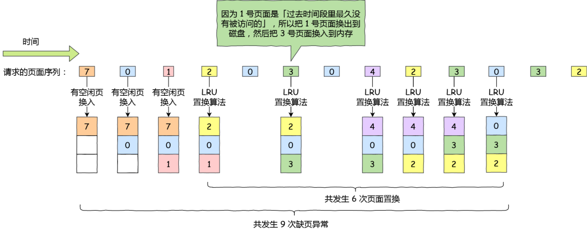
在这个请求的页面序列中，缺页共发生了 9 次，页面置换共发生了 6 次，跟先进先出置换算法比较起来，性能提高了一些。
虽然 LRU 在理论上是可以实现的，但代价很高。为了完全实现 LRU，需要在内存中维护一个所有页面的链表，最近最多使用的页面在表头，最近最少使用的页面在表尾。
困难的是，在每次访问内存时都必须要更新「整个链表」。在链表中找到一个页面，删除它，然后把它移动到表头是一个非常费时的操作。
所以，LRU 虽然看上去不错，但是由于开销比较大，实际应用中比较少使用。
时钟页面置换算法
那有没有一种即能优化置换的次数，也能方便实现的算法呢？
时钟页面置换算法就可以两者兼得，它跟 LRU 近似，又是对 FIFO 的一种改进。
该算法的思路是，把所有的页面都保存在一个类似钟面的「环形链表」中，一个表针指向最老的页面。
当发生缺页中断时，算法首先检查表针指向的页面：
- 如果它的访问位位是 0 就淘汰该页面，并把新的页面插入这个位置，然后把表针前移一个位置；
- 如果访问位是 1 就清除访问位，并把表针前移一个位置，重复这个过程直到找到了一个访问位为 0 的页面为止；
我画了一副时钟页面置换算法的工作流程图，你可以在下方看到：
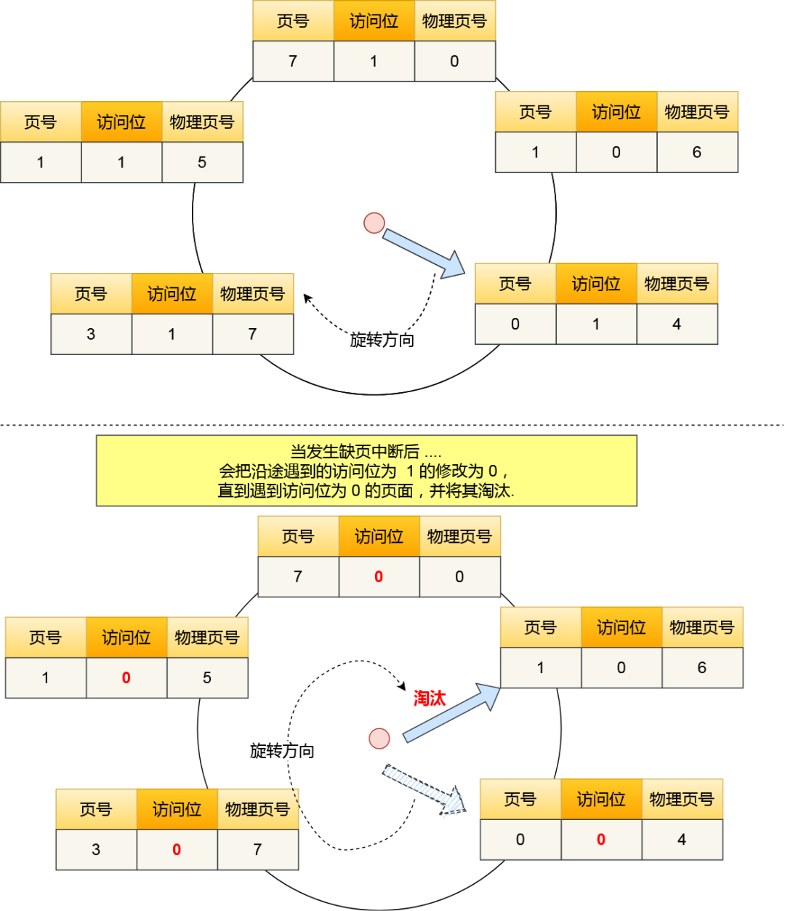
了解了这个算法的工作方式，就明白为什么它被称为时钟（Clock）算法了。
最不常用算法
最不常用（LFU）算法，这名字听起来很调皮，但是它的意思不是指这个算法不常用，而是当发生缺页中断时，选择「访问次数」最少的那个页面，并将其淘汰。
它的实现方式是，对每个页面设置一个「访问计数器」，每当一个页面被访问时，该页面的访问计数器就累加 1。在发生缺页中断时，淘汰计数器值最小的那个页面。
看起来很简单，每个页面加一个计数器就可以实现了，但是在操作系统中实现的时候，我们需要考虑效率和硬件成本的。
要增加一个计数器来实现，这个硬件成本是比较高的，另外如果要对这个计数器查找哪个页面访问次数最小，查找链表本身，如果链表长度很大，是非常耗时的，效率不高。
但还有个问题，LFU 算法只考虑了频率问题，没考虑时间的问题，比如有些页面在过去时间里访问的频率很高，但是现在已经没有访问了，而当前频繁访问的页面由于没有这些页面访问的次数高，在发生缺页中断时，就会可能会误伤当前刚开始频繁访问，但访问次数还不高的页面。
那这个问题的解决的办法还是有的，可以定期减少访问的次数，比如当发生时间中断时，把过去时间访问的页面的访问次数除以 2，也就说，随着时间的流失，以前的高访问次数的页面会慢慢减少，相当于加大了被置换的概率。
操作系统的内存管理机制是怎样的？
内存管理是负责为进程分配和回收内存资源，确保进程之间相互隔离，并且有效地利用有限的物理内存。内存管理机制通常涉及以下几个方面：
- 虚拟内存：操作系统为每个进程创建一个虚拟地址空间，这个空间可能比物理内存大得多。进程在自己的虚拟地址空间内工作，而操作系统负责将虚拟地址映射到物理内存地址上。这样做的好处是，每个进程可以拥有一个独立的、连续的地址空间，即使物理内存是碎片化的。
- 内存分段（Segmentation）：程序的虚拟地址空间被划分为多个段，如代码段、数据段、栈段和堆段。每个段有自己的起始地址和长度，这种机制便于保护代码和数据，防止非法访问。
- 内存分页（Paging）：分页将虚拟地址空间和物理内存划分为固定大小的页面。虚拟页面通过页表映射到物理页面，这样可以解决内存碎片问题，并且允许多个进程共享相同的物理内存区域。
- 页表和TLB（Translation Lookaside Buffer）：页表是一个数据结构，用于存储虚拟页面到物理页面的映射。为了加速地址转换，处理器使用一个高速缓存（TLB）来存储最近使用的页表项，减少每次地址转换时访问内存的时间。
假设两个线程并发读写同一个整型变量，初始值为零，每个线程加 50 次，结果可能是什么？
在没有任何同步机制的情况下，两个线程并发对同一个整型变量进行 50 次加 1 操作，最终结果可能是 100，也可能小于 100，最坏的结果是 50，也就是最终的结果可能是在 [50, 100] 。
小于 100 情况的分析，由于对整型变量的 num++ 操作不是原子操作，它实际上包含了三个步骤：读取变量的值、将值加 1、将新值写回变量。在多线程环境下，可能会出现线程安全问题。例如，线程 1 和线程 2 同时读取了变量的当前值，然后各自将其加 1，最后都将相同的新值写回变量，这就导致了一次加 1 操作的丢失。这种情况会多次发生，最终结果就会小于 100。
追问：如何保证2 个线程累加之后达到 100？
第一种方式：原子变量的方法。使用 AtomicInteger 替代普通 int，其 incrementAndGet() 方法保证原子性，代码如下：
import java.util.concurrent.atomic.AtomicInteger;
public class AtomicIntegerAddition {
private static AtomicInteger num = new AtomicInteger(0);
public static void main(String[] args) throws InterruptedException {
Thread thread1 = new Thread(() -> {
for (int i = 0; i < 50; i++) {
num.incrementAndGet();
}
});
Thread thread2 = new Thread(() -> {
for (int i = 0; i < 50; i++) {
num.incrementAndGet();
}
});
thread1.start();
thread2.start();
thread1.join();
thread2.join();
System.out.println("最终结果: " + num.get());
}
}
第二种方式：通过 synchronized 关键字或 ReentrantLock 确保操作的互斥性，代码如下：
public class SynchronizedAddition {
private static int num = 0;
private static final Object lock = new Object();
public static void main(String[] args) throws InterruptedException {
Thread thread1 = new Thread(() -> {
for (int i = 0; i < 50; i++) {
synchronized (lock) {
num++;
}
}
});
Thread thread2 = new Thread(() -> {
for (int i = 0; i < 50; i++) {
synchronized (lock) {
num++;
}
}
});
thread1.start();
thread2.start();
thread1.join();
thread2.join();
System.out.println("最终结果: " + num);
}
}
什么是孤儿进程？什么是僵尸进程？
- 孤儿进程是指父进程在子进程结束之前就已经退出，导致子进程失去了父进程的管理和控制，成为了 “孤儿”。此时，这些子进程会被系统的 init 进程（在 Linux 系统中，进程 ID 为 1）所收养，init 进程会负责回收它们的资源等工作。
- 僵尸进程是指一个进程已经执行完了它的主要任务，进入了终止状态，但由于某些原因，它的父进程没有调用相应的系统函数（如 wait () 或 waitpid ()）来收集它的退出状态信息，导致该进程虽然已经停止运行，但在系统进程表中仍然保留着一个记录，占据着一定的系统资源。
单核CPU如何执行多个程序？
操作系统会为每个程序分配一个时间片，这个时间片是一个很短的时间间隔，例如几十毫秒。
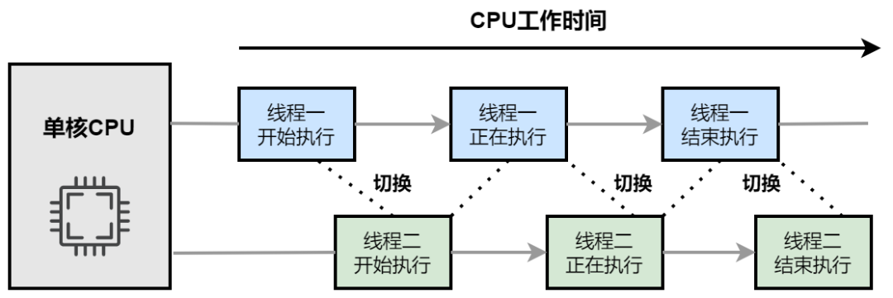
单核 CPU 会轮流执行每个程序，在一个时间片内执行一个程序，当这个时间片用完后，就切换到下一个程序。这种方式给用户一种多个程序在同时运行的假象，因为切换速度非常快，用户难以察觉程序之间的切换。
CPU的流水线设计有了解吗？
一条指令的执行需要经过取指令，翻译指令，执行指令三个基本流程。CPU内部的电路也分为不同的单元：取指单元、译码单元、执行单元等，指令的执行也是按照流水线的工序一步一步执行的。
如果采用流水线技术，则每个时钟周期内只有一个单元在工作，其余两个单元在“观望”
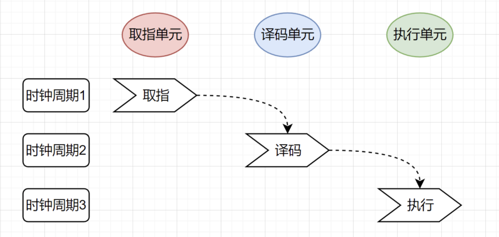
流水线设计将这些操作分成多个独立的阶段，每个阶段由专门的硬件单元负责，使不同指令的不同阶段可以并行执行，流水线的本质就是拿空间换时间。将每条指令的步骤分解到不同的电路单元，从而使得多个指令并行执行。
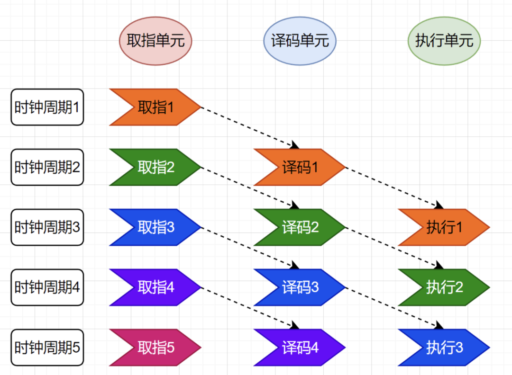
这就好像我们的后端程序员不需要等待功能上线，就会从产品经理手中拿到下一个需求，开始开发 API。这样的协作模式，就是我们所说的 指令流水线 。这里面每一个独立的步骤，我们就称之为 流水线阶段 或者流水线级。
如果我们把一个指令拆分成“取指令 - 指令译码 - 执行指令”这样三个部分，那这就是一个三级的流水线。如果我们进一步把“执行指令”拆分成“ALU 计算（指令执行）- 内存访问 - 数据写回”，那么它就会变成一个五级的流水线。
例如，在一个简单的 5 级流水线中，当一条指令在执行阶段时，下一条指令可以在译码阶段，再下一条指令可以在取指阶段。
尽管流水线无法减少单条指令执行时的 “延时” 这一性能指标，不过，借助于同时对多条指令的不同阶段展开执行，我们能够有效地提升 CPU 的 “吞吐率”。从外部视角来看，CPU 仿佛具备了 “一心多用” 的能力，在同一时刻，可以同时对 5 条不同指令的不同阶段进行处理。在 CPU 内部，其运行机制就好似一条生产线，不同分工的组件持续处理着从上游传递过来的内容，而无需像传统模式那样，等到一件商品完全生产完毕之后，才开始下一件商品的生产流程。
CPU绑定的操作有了解吗？
在单核 CPU，虽然只能执行一个线程，但是操作系统给每个线程分配了一个时间片，时间片用完了，就调度下一个线程，于是各个线程就按时间片交替地占用 CPU，从宏观上看起来各个线程同时在执行。
而现代 CPU 都是多核心的，线程可能在不同 CPU 核心来回切换执行，这对 CPU Cache 不是有利的，虽然 L3 Cache 是多核心之间共享的，但是 L1 和 L2 Cache 都是每个核心独有的，如果一个线程在不同核心来回切换，各个核心的缓存命中率就会受到影响，相反如果线程都在同一个核心上执行，那么其数据的 L1 和 L2 Cache 的缓存命中率可以得到有效提高，缓存命中率高就意味着 CPU 可以减少访问 内存的频率。
当有多个同时执行「计算密集型」的线程，为了防止因为切换到不同的核心，而导致缓存命中率下降的问题，我们可以把线程绑定在某一个 CPU 核心上，这样性能可以得到非常可观的提升。
在 Linux 上提供了 sched_setaffinity 方法，来实现将线程绑定到某个 CPU 核心这一功能。
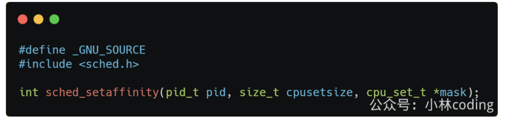
虚拟地址是怎么转化到物理地址的？
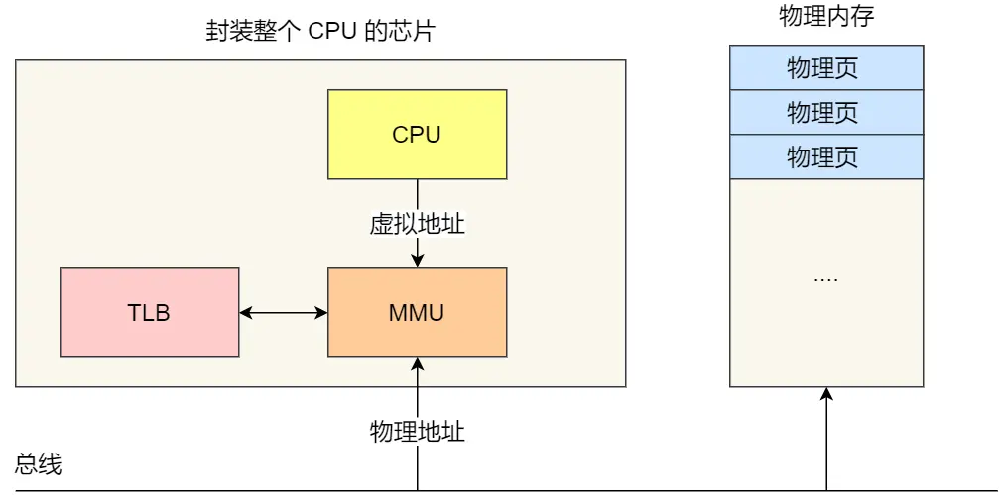
虚拟地址到物理地址的转换是通过操作系统中的内存管理单元（MMU，Memory Management Unit）来完成的。下面是一般的虚拟地址到物理地址转换过程：
- 程序发出内存访问请求时，使用虚拟地址进行访问。
- 虚拟地址被传递给MMU进行处理。
- MMU中的地址映射表（页表）被用来将虚拟地址转换为物理地址。页表是一种数据结构，用于存储虚拟地址和物理地址之间的映射关系。
- MMU根据页表中的映射关系，将虚拟地址转换为对应的物理地址。
- 转换后的物理地址被传递给内存系统，用于实际的内存访问操作。
页表是怎么构成的？
页表是一种数据结构，用于存储虚拟地址和物理地址之间的映射关系。多级页表将页表分为多个层级，每个层级的页表项存储下一级页表的物理地址。通过多级索引，可以逐级查找，最终找到对应的物理页。
对于 64 位的系统，主要有四级目录，分别是：
- 全局页目录项 PGD
- 上层页目录项 PUD
- 中间页目录项 PMD
- 页表项 PTE
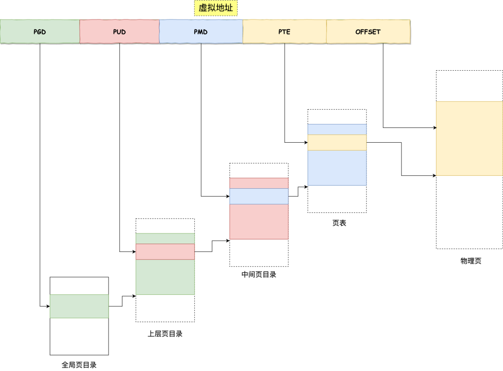
共享内存是怎么实现的？
共享内存的机制，就是拿出一块虚拟地址空间来，映射到相同的物理内存中。这样这个进程写入的东西，另外一个进程马上就能看到了，都不需要拷贝来拷贝去，传来传去，大大提高了进程间通信的速度。
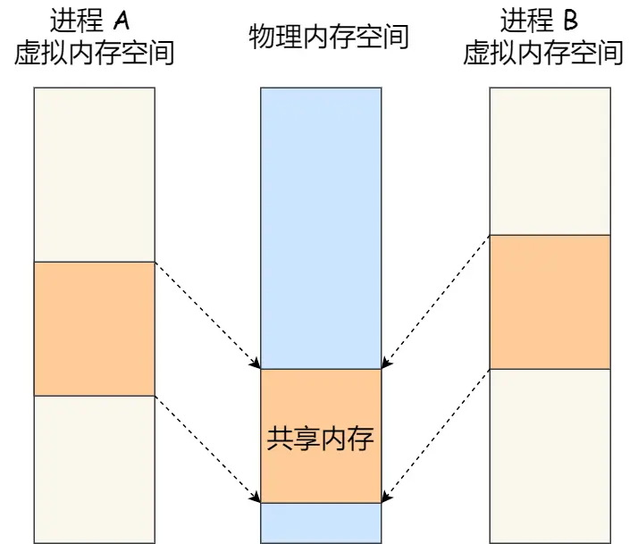
操作系统原子操作怎么实现的？
操作系统中的原子性操作是通过硬件和软件的支持来实现的。在多核处理器上，原子性操作需要保证在多个核心之间的并发执行中的正确性和一致性。
硬件层面上，现代处理器提供了一些特殊的指令或机制来支持原子性操作，例如原子交换（atomic exchange）、原子比较并交换（atomic compare-and-swap）等。这些指令能够在执行期间禁止中断或其他核心的干扰，确保操作的原子性。
软件层面上，操作系统提供了一些原子性操作的接口或函数，例如原子操作函数（atomic operation），它们使用了硬件提供的原子性指令来实现原子性操作。这些函数通常是在内核态下执行，可以保证在多个进程或线程之间的原子性。
操作系统还可以使用锁机制来实现原子性操作。例如，互斥锁（mutex）可以用来保护共享资源的访问，只有持有锁的进程或线程可以访问共享资源，其他进程或线程需要等待锁的释放。通过锁的机制，可以保证对共享资源的原子性操作。
为什么并发执行线程要加锁？
并发执行线程需要加锁主要是为了保护共享数据，防止出现"竞态条件"。
"竞态条件"是指当多个线程同时访问和操作同一块数据时，最终结果依赖于线程的执行顺序，这可能导致数据的不一致性。
通过加锁，我们可以确保在任何时刻只有一个线程能够访问共享数据，从而避免"竞态条件"，确保数据的一致性和完整性。
虚拟内存是什么？有什么作用？
如果没有虚拟内存，程序读写的地址是物理地址的话，可能会出现物理地址冲突的问题，比如，第一个程序在 2000 的位置写入一个新的值，将会擦掉第二个程序存放在相同位置上的所有内容。
为了解决这个问题，就引出了虚拟内存，操作系统为每个进程分配独立的一套「虚拟地址」，人人都有，大家自己玩自己的地址就行，互不干涉。但是有个前提每个进程都不能访问物理地址，至于虚拟地址最终怎么落到物理内存里，对进程来说是透明的，操作系统已经把这些都安排的明明白白了。
操作系统会提供一种机制，将不同进程的虚拟地址和不同内存的物理地址映射起来。
如果程序要访问虚拟地址的时候，由操作系统转换成不同的物理地址，这样不同的进程运行的时候，写入的是不同的物理地址，这样就不会冲突了。
最后，说下虚拟内存有什么作用？
- 第一，虚拟内存可以使得进程对运行内存超过物理内存大小，因为程序运行符合局部性原理，CPU 访问内存会有很明显的重复访问的倾向性，对于那些没有被经常使用到的内存，我们可以把它换出到物理内存之外，比如硬盘上的 swap 区域。
- 第二，由于每个进程都有自己的页表，所以每个进程的虚拟内存空间就是相互独立的。进程也没有办法访问其他进程的页表，所以这些页表是私有的，这就解决了多进程之间地址冲突的问题。
软连接和硬连接有什么区别？
软连接实际上是一个指向目标文件的路径的符号链接，类似于Windows系统中的快捷方式，创建软连接不会占用目标文件的inode节点，只是简单地指向目标文件的路径。删除原始文件后，软连接仍然存在，但指向的目标文件失效，称为"悬空链接"。软链接可以跨文件系统创建软连接。
硬连接是指多个文件实际上指向同一个inode节点，即多个文件共享同一块数据块。创建硬连接会增加目标文件的链接计数，删除任何一个硬连接并不会影响其他硬连接指向的文件数据。只能在同一文件系统内创建硬连接。
零拷贝
读者回答：记混了，回答了DMA，说主要是为了减少拷贝操作，举了使用零拷贝的项目，比如nginx。
小林补充：
sendfile 系统调用实现了零拷贝技术，零拷贝技术的文件传输方式相比传统文件传输的方式，减少了 2 次上下文切换和数据拷贝次数，只需要 2 次上下文切换和数据拷贝次数，就可以完成文件的传输，而且 2 次的数据拷贝过程，都不需要通过 CPU，2 次都是由 DMA 来搬运，使用零拷贝的项目有nginx、kafka。
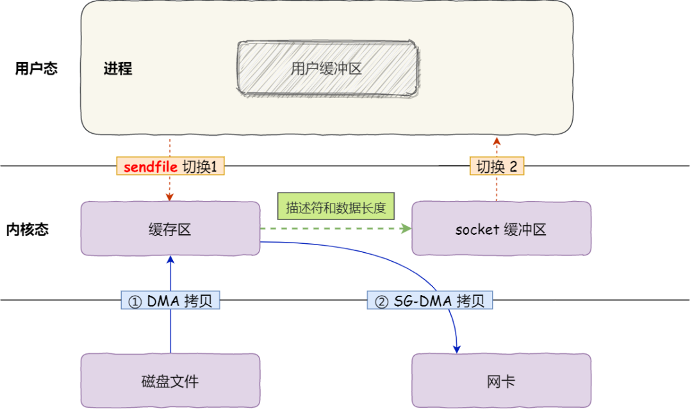
6. 介绍一下操作系统的虚拟内存？
操作系统设计了虚拟内存，每个进程都有自己的独立的虚拟内存，我们所写的程序不会直接与物理内打交道。
有了虚拟内存之后，它带来了这些好处：
- 第一，虚拟内存可以使得进程对运行内存超过物理内存大小，因为程序运行符合局部性原理，CPU 访问内存会有很明显的重复访问的倾向性，对于那些没有被经常使用到的内存，我们可以把它换出到物理内存之外，比如硬盘上的 swap 区域。
- 第二，由于每个进程都有自己的页表，所以每个进程的虚拟内存空间就是相互独立的。进程也没有办法访问其他进程的页表，所以这些页表是私有的，这就解决了多进程之间地址冲突的问题。
- 第三，页表里的页表项中除了物理地址之外，还有一些标记属性的比特，比如控制一个页的读写权限，标记该页是否存在等。在内存访问方面，操作系统提供了更好的安全性。
Linux 是通过对内存分页的方式来管理内存，分页是把整个虚拟和物理内存空间切成一段段固定尺寸的大小。这样一个连续并且尺寸固定的内存空间，我们叫页（Page）。在 Linux 下，每一页的大小为 4KB。
虚拟地址与物理地址之间通过页表来映射，如下图：
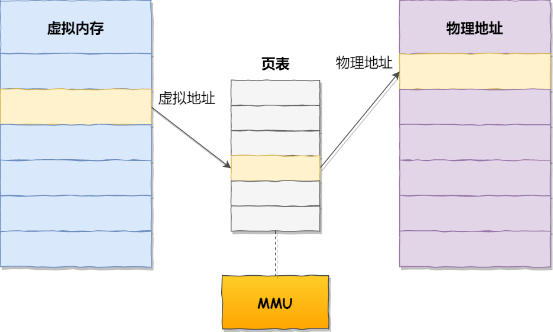
页表是存储在内存里的，内存管理单元 （MMU）就做将虚拟内存地址转换成物理地址的工作。
而当进程访问的虚拟地址在页表中查不到时，系统会产生一个缺页异常，进入系统内核空间分配物理内存、更新进程页表，最后再返回用户空间，恢复进程的运行。
7. 32位cpu 虚拟内存理论多少？
32 位 CPU 的虚拟内存理论上为 4GB。
这是因为 32 位 CPU 的地址总线是 32 位，它所能表示的地址空间大小为2^32个不同的地址。而每个地址对应 1 字节（Byte）的内存空间，所以2^32Byte 换算后就是 4GB.
多线程的优势，为什么要有多线程？
使用多线程的理由之一是和进程相比，它是一种非常花销小，切换快，更"节俭"的多任务操作方式。在Linux系统下，启动一个新的进程必须分配给它独立的地址空间，建立众多的数据表来维护它的代码段、堆栈段和数据段，这是一种"昂贵"的多任务工作方式。而运行于一个进程中的多个线程，它们彼此之间使用相同的地址空间，共享大部分数据，启动一个线程所花费的空间远远小于启动一个进程所花费的空间，而且，线程间彼此切换所需的时间也远远小于进程间切换所需要的时间。
使用多线程的理由之二是线程间方便的通信机制。对不同进程来说，它们具有独立的数据空间，要进行数据的传递只能通过通信的方式进行，这种方式不仅费时，而且很不方便。线程则不然，由于同一进程下的线程之间共享数据空间，所以一个线程的数据可以直接为其它线程所用，这不仅快捷，而且方便。当然，数据的共享也带来其他一些问题，有的变量不能同时被两个线程所修改，有的子程序中声明为static的数据更有可能给多线程程序带来灾难性的打击，这些正是编写多线程程序时最需要注意的地方。
除了以上所说的优点外，不和进程比较，多线程程序作为一种多任务、并发的工作方式，当然有以下的优点：
- 提高应用程序响应。这对图形界面的程序尤其有意义，当一个操作耗时很长时，整个系统都会等待这个操作，此时程序不会响应键盘、鼠标、菜单的操作，而使用多线程技术，将耗时长的操作置于一个新的线程，可以避免这种尴尬的情况。
- 使多CPU系统更加有效。操作系统会保证当线程数不大于CPU数目时，不同的线程运行于不同的CPU上。
- 改善程序结构。一个既长又复杂的进程可以考虑分为多个线程，成为几个独立或半独立的运行部分，这样的程序会利于理解和修改。
ARM有了解嘛？
了解不过，大概知道是一个处理器，嵌入式领域用的多。
二进制怎么转16机制？
可以采用分组转换法。
分组转换法基于二进制和十六进制之间的位权关系。因为2^4=16，这意味着 4 位二进制数能够表示的状态数刚好与十六进制的一位所能表示的状态数相同。所以可以将二进制数按每 4 位一组进行划分，每一组都能唯一地对应一个十六进制数字。
下面我给出了二进制的数，我们将它转换为十六进制，例如：0101101，我们将这个数按4个一组来划分，变成 0010 1101（这里本来是010 1101前面不够4位我们就凑一个0），可以得到 0010 =2、 1101=D 所以转换成十六进制就是2D。
byte类型的-1怎么表示？
byte类型是有符号的 8 位整数，取值范围是-128到127。-1在byte类型中的二进制表示是补码形式，正数的补码与原码相同，负数的补码是在反码的基础上加 1，这是因为计算机中采用补码来进行减法运算，可以将减法转换为加法，方便硬件实现，计算过程如下：
-
先写出
1的原码：00000001。 -
然后得到
-1的原码：10000001。 -
接着求
-1的反码：11111110。 -
最后求
-1的补码：11111111。
所以，在 Java 的byte类型中，-1用二进制补码表示为11111111。当进行运算或存储时，计算机使用这个补码来处理-1相关的操作。例如，在进行加法运算时，-1 + 1的计算过程如下：
-
- 1的补码是11111111，1的补码是00000001。 -
相加得到：
11111111 + 00000001 = 100000000（9 位，超出byte范围）。 -
由于
byte类型是 8 位，会发生截断，得到00000000，也就是0，这符合数学运算结果。
虚拟内存是什么？如果没有虚拟内存，我们现在写的程序会有什么问题？
虚拟内存是操作系统提供给每个运行中程序的一种地址空间，每个程序在运行时认为自己拥有的内存空间就是虚拟内存，其大小可以远远大于物理内存的大小。虚拟内存通过将程序的地址空间划分成若干个固定大小的页或段，并将这些页或者段映射到物理内存中的不同位置，从而使得程序在运行时可以更高效地利用物理内存。

如果操作系统不支持虚拟内存，程序的运行将受到物理内存的直接限制，可能引发以下核心问题：
- 物理内存不足：现代程序（如大型游戏、虚拟机、数据库）通常需要数 GB 的内存。若物理内存较小（如早期计算机的 MB 级内存），程序无法加载全部数据和代码，导致无法启动或频繁崩溃。
- 内存碎片化：物理内存被多个程序分割为不连续的块，即使总容量足够，也可能因无法找到连续的大内存块而无法加载新程序。例如，物理内存剩余 1GB 但被拆分为多个小碎片，此时需要 800MB 连续内存的程序将无法运行。
- 地址越界访问：没有虚拟内存的地址映射机制，程序直接操作物理内存，可能误读或修改其他程序的内存数据，导致程序崩溃或数据泄露。例如，一个程序的指针错误可能覆盖系统内核或其他程序的关键数据。
- 恶意攻击风险：程序可直接访问任意物理内存地址，恶意软件易通过内存篡改破坏系统或窃取信息。
设计并发的时候，多进程和多线程两种完成并发，如何选择这两种方式？
多进程和多线程的区别：
- 多进程需通过 IPC（进程间通信）机制（如管道、Socket、共享内存）传递数据，通信复杂度高但安全性强。多线程可直接访问共享变量，通信简单但需处理线程安全（如加锁、原子操作），易引发竞态条件。
- 多进程的进程间完全隔离，一个进程崩溃不影响其他进程，而多线程的线程间共享资源，一个线程崩溃可能导致整个进程崩溃。
- 多进程的进程创建 / 切换开销大（需分配内存、复制页表等），多线程的线程创建 / 切换开销小（仅需保存寄存器状态）。
如何选择？
- 当任务 IO 密集、需频繁共享数据，或追求轻量级并发时，可以优先选择多线程。
- 当任务 CPU 密集、需强隔离性，或跨平台 / 语言集成时，可以优先选择多进程。
堆内存和栈内存有什么区别
读者答：go里面的堆分配的主要是一些比较大的对象，栈里面的话可能就是分配一些临时的对象，或者是比较小的数据变量。然后如果分配的就是比如说如果申请了一个channel，或者是一个非常大的对象的话，那么它就会从默认的从栈上的空间分配到堆上，因为堆上的这空堆上的空间进行分配之后，它能保留的时间会更长一些，这大概就是栈和堆之间的一个区别。
小林补充：
-
管理方式不同：栈内存由系统自动分配和释放，而堆内存则需要程序员手动分配和释放。
-
分配方式不同：栈内存是一种连续的内存空间，系统会自动为每个线程分配一定大小的栈空间，函数的参数和局部变量都会在栈上分配内存。而堆内存是不连续的内存空间，程序员需要通过动态分配内存来获得堆内存空间。
-
大小限制不同：栈内存的大小是固定的，并且比堆内存小得多。程序运行时，每个线程的栈空间通常只有几MB到几十MB，而堆内存的大小则取决于系统的剩余内存大小和程序员的动态分配。
-
访问速度不同：栈内存的访问速度比堆内存快得多，因为栈内存是连续的，访问局部变量和函数参数时可以直接读取栈指针的偏移量。而堆内存是不连续的，访问速度较慢。
局部变量是放在堆还是放在栈里面？
读者答：局部变量的话，因为它只在一个函数里面进行相关的生命周期的存在，所以应该是在栈上面的。
协程的的通讯有哪些方式？
读者答：不清楚，go 使用时，可能会配合 channel 来进行使用，起一个死循环，监听不同的信号量进行处理。还是说是指那个 GMP 的模型？
小林补充：
-
共享内存：协程通过共享内存来交换数据，这种方式简单直接，但需要考虑同步和互斥问题，否则会出现数据竞争等问题。
-
消息传递：协程通过消息队列等方式来传递数据，这种方式可以避免数据竞争等问题，但需要考虑消息的发送和接收顺序等问题。
-
信号量：协程通过信号量等方式来实现同步和互斥，这种方式需要考虑好信号量的数量和使用顺序，否则会出现死锁等问题。
常规的多线程开发需要注意哪一些问题？
读者答：场景考虑，你这个线程是不可以就是无限制的创建的吗？而且创建线程是需要开销的，所以一般是会使用线程池这样的方式，先预先创建好一些已经分配好的线程资源，然后有需要用的话就先进行相关的使用，然后这个线程池也负责了一些GC 的处理。
线程池里面大概要开多少的线程数量，这个线程数量的话就会跟你的任务相关。CPU 密集型根据CPU 的核数或者和任务执行的有关的时间来进行这个线程数量的考虑。
读写共享变量会遇到什么问题？
读者答：并发访问
3. 读写锁和互斥锁的区别，使用场景？
读写锁和互斥锁的区别如下：
- 互斥锁：是一种排他锁，同一时刻只允许一个线程或进程访问共享资源。无论是读操作还是写操作，只要有一个线程获取了互斥锁，其他线程就必须等待该线程释放锁后才能继续访问。
- 读写锁：将对共享资源的访问分为读操作和写操作，允许多个线程同时进行读操作，但在进行写操作时，会排斥其他的读操作和写操作。也就是说，多个线程可以同时持有读锁，但写锁是排他的，当有线程持有写锁时，其他线程不能获取读锁或写锁。
互斥锁的使用场景是写操作比较频繁的场景，当对共享资源的写操作比较频繁时，使用互斥锁可以保证数据的一致性。例如，在多线程环境下对一个计数器进行递增或递减操作，由于每次操作都会修改计数器的值，使用互斥锁可以避免多个线程同时修改导致的数据不一致问题。
读写锁的使用场景是读多写少的场景，当对共享资源的读操作远远多于写操作时，使用读写锁可以显著提高并发性能。例如，在一个缓存系统中，多个线程可以同时读取缓存中的数据，而只有在缓存数据需要更新时才需要获取写锁。这样可以减少线程的阻塞时间，提高系统的吞吐量。
12. 线程在执行时如何使用共享变量？
线程在执行时使用共享变量需要注意线程安全问题，可以通过「同步机制、原子类和线程安全的数据结构」来保证数据的一致性和正确性。
为了避免竞态条件，可使用同步机制来保证同一时刻只有一个线程能够访问和修改共享变量。常见的同步机制有以下几种：
-
synchronized关键字能够修饰方法或者代码块，确保同一时刻只有一个线程可以执行被修饰的方法或代码块。 -
除了
synchronized关键字，还能使用java.util.concurrent.locks.Lock接口及其实现类（如ReentrantLock）来实现同步。
也可以使用原子类，Java 的 java.util.concurrent.atomic 包提供了一系列原子类，如 AtomicInteger、AtomicLong 等，这些类使用 CAS（Compare - And - Swap）算法来保证对共享变量的操作是原子的。
当然，Java 提供了一些线程安全的数据结构，如 ConcurrentHashMap、CopyOnWriteArrayList 等，这些数据结构在多线程环境下可以安全地使用。
同一进程内线程不共享的内存知道吗？
每个线程的栈是独立的，不共享。
有了解哪些linux的系统调用？
- 创建子进程的fork 系统调用，创建子进程的时候，会复制父进程的页表，这时候父子进程的内存是共享的，当父或者子进程发生写时操作之后，会触发写时复制的过程，这时候会复制内存，两者的内存就会独立存在了。
- 网络编程相关的系统调用，比如 socket、bind、listen、accpet，以及 io 多路复用的接口（select、poll、epoll）
- 文件操作的系统调用，比如 open、read、write、close 等
共享内存怎么实现的？
共享内存的机制，就是拿出一块虚拟地址空间来，映射到相同的物理内存中。这样这个进程写入的东西，另外一个进程马上就能看到了，都不需要拷贝来拷贝去，传来传去，大大提高了进程间通信的速度。
除了互斥锁你还知道什么锁？分别应用于什么场景？
还有读写锁、自旋锁、条件变量、信号量。
-
读写锁：读写锁允许多个线程同时读取共享资源，但只允许一个线程进行写操作。适用于读操作频繁、写操作较少的场景，可以提高并发性能。
-
自旋锁：自旋锁是一种忙等待锁，线程在获取锁时不会进入阻塞状态，而是循环忙等待直到获取到锁。适用于临界区很小且锁的持有时间很短的场景，避免线程频繁切换带来的开销。
-
条件变量：条件变量用于线程间的同步和通信。它通常与互斥锁一起使用，线程可以通过条件变量等待某个条件满足，当条件满足时，其他线程可以通过条件变量发送信号通知等待线程。
-
信号量：信号量是一种计数器，用于控制对共享资源的访问。它可以用来限制同时访问资源的线程数量，或者用于线程间的同步。
程序的内存布局是怎么样的？
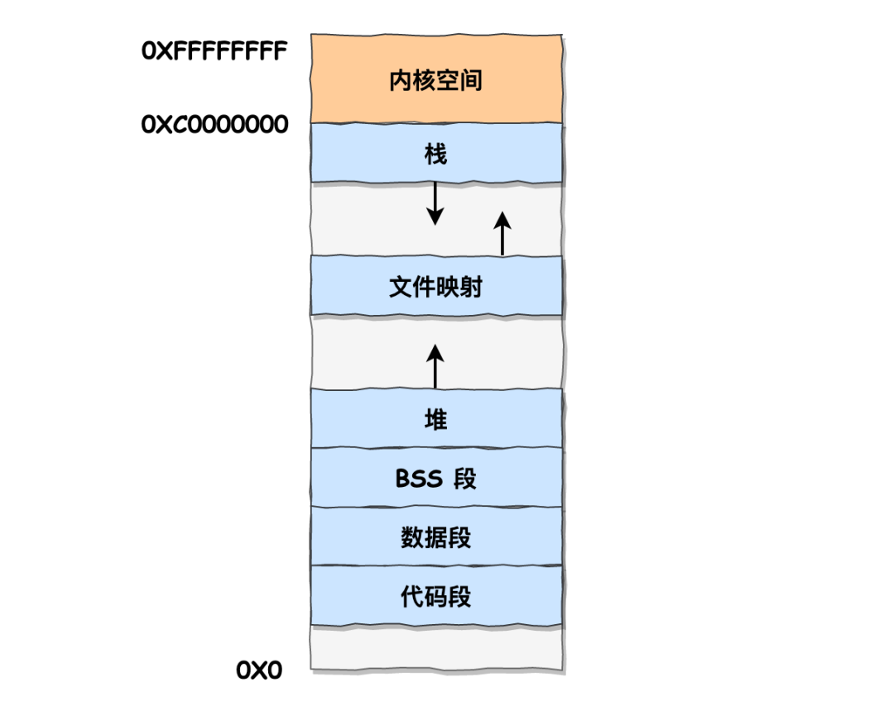
通过这张图你可以看到，用户空间内存，从低到高分别是 6 种不同的内存段：
- 代码段，包括二进制可执行代码；
- 数据段，包括已初始化的静态常量和全局变量；
- BSS 段，包括未初始化的静态变量和全局变量；
- 堆段，包括动态分配的内存，从低地址开始向上增长；
- 文件映射段，包括动态库、共享内存等；
-
栈段，包括局部变量和函数调用的上下文等。栈的大小是固定的，一般是
8 MB。当然系统也提供了参数，以便我们自定义大小；
上图中的内存布局可以看到，代码段下面还有一段内存空间的（灰色部分），这一块区域是「保留区」，之所以要有保留区这是因为在大多数的系统里，我们认为比较小数值的地址不是一个合法地址，例如，我们通常在 C 的代码里会将无效的指针赋值为 NULL。因此，这里会出现一段不可访问的内存保留区，防止程序因为出现 bug，导致读或写了一些小内存地址的数据，而使得程序跑飞。
在这 7 个内存段中，堆和文件映射段的内存是动态分配的。比如说，使用 C 标准库的 malloc() 或者 mmap() ，就可以分别在堆和文件映射段动态分配内存。
初始化和未初始化的静态变量分别放在哪？
- 初始化的静态变量放在数据段里。
- 未初始化的静态变量放在BSS段里。
虚拟地址是怎么转化到物理地址的？
虚拟地址转化为物理地址是通过内存管理单元（Memory Management Unit，MMU）来完成的。MMU是计算机系统中的硬件组件，负责虚拟地址和物理地址之间的转换。
在虚拟地址转换的过程中，通常会使用页表（Page Table）来进行映射。页表是一种数据结构，它将虚拟地址空间划分为固定大小的页（Page），对应于物理内存中的页框（Page Frame）。每个页表项（Page Table Entry）记录了虚拟页和物理页的对应关系。
当程序访问一个虚拟地址时，MMU会将虚拟地址分解为页号和页内偏移量。然后，MMU会查找页表，根据页号找到对应的页表项。页表项中包含了物理页的地址或页框号。最后，MMU将物理页的地址与页内偏移量组合，得到对应的物理地址。
虚拟地址转化为物理地址的过程中，还可能涉及到多级页表、TLB（Translation Lookaside Buffer）缓存等机制，以提高地址转换的效率。
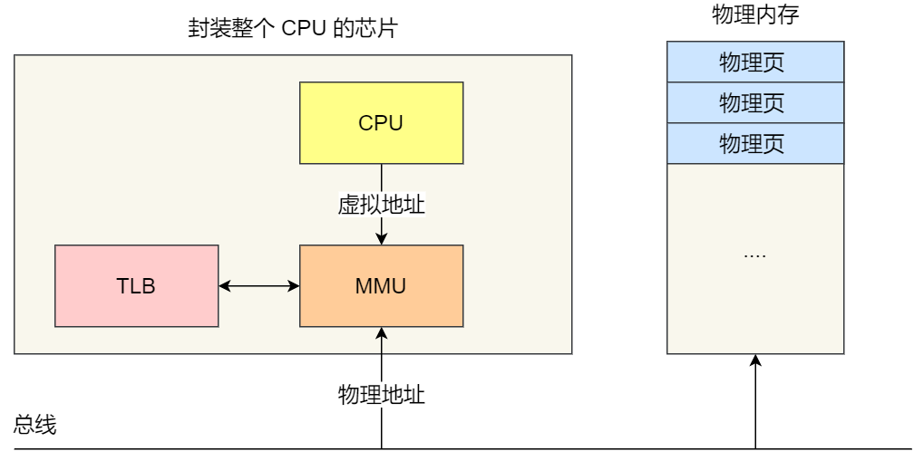
linux指令简单说几个
-
ls：列出目录内容。
-
grep：在文件中搜索指定模式。
-
chmod：修改文件权限。
-
top：显示系统当前资源占用情况。
-
ps：显示当前进程信息。
-
netstate：查看进程端口号
用户态和内核态有什么区别？
用户态（User Mode）和内核态（Kernel Mode）是操作系统中的两种特权级别，它们有以下几个区别：
-
访问权限：在用户态下，应用程序只能访问受限的资源和执行受限的操作，例如用户空间的内存、文件和设备。而在内核态下，操作系统具有完全的访问权限，可以访问系统的所有资源和执行所有操作。
-
CPU指令集：在用户态下，CPU只能执行非特权指令，例如算术运算、逻辑运算等。而在内核态下，CPU可以执行特权指令，例如访问设备、修改系统状态等。
-
中断和异常处理：在用户态下，当发生中断或异常时，操作系统会进行中断处理，将控制权转移到内核态下的中断处理程序中。而在内核态下，操作系统可以直接处理中断和异常，并进行相应的处理操作。
-
内存保护：在用户态下，应用程序只能访问自己的内存空间，无法访问其他应用程序的内存空间和操作系统的内存空间。而在内核态下，操作系统可以访问所有的内存空间，包括应用程序的内存空间。
-
安全性：由于用户态的应用程序受到限制，操作系统可以对其进行隔离和保护，防止恶意代码对系统造成损害。而内核态下的操作系统具有更高的权限，需要对其进行严格的安全管理，以防止非法访问和恶意操作。
进程调度算法说一下
01 先来先服务调度算法
最简单的一个调度算法，就是非抢占式的先来先服务（*First Come First Serve, FCFS*）算法了。
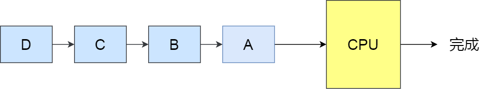
顾名思义，先来后到，每次从就绪队列选择最先进入队列的进程，然后一直运行，直到进程退出或被阻塞，才会继续从队列中选择第一个进程接着运行。
这似乎很公平，但是当一个长作业先运行了，那么后面的短作业等待的时间就会很长，不利于短作业。
FCFS 对长作业有利，适用于 CPU 繁忙型作业的系统，而不适用于 I/O 繁忙型作业的系统。
02 最短作业优先调度算法
最短作业优先（*Shortest Job First, SJF*）调度算法同样也是顾名思义，它会优先选择运行时间最短的进程来运行，这有助于提高系统的吞吐量。

这显然对长作业不利，很容易造成一种极端现象。
比如，一个长作业在就绪队列等待运行，而这个就绪队列有非常多的短作业，那么就会使得长作业不断的往后推，周转时间变长，致使长作业长期不会被运行。
03 高响应比优先调度算法
前面的「先来先服务调度算法」和「最短作业优先调度算法」都没有很好的权衡短作业和长作业。
那么，高响应比优先 （*Highest Response Ratio Next, HRRN*）调度算法主要是权衡了短作业和长作业。
每次进行进程调度时，先计算「响应比优先级」，然后把「响应比优先级」最高的进程投入运行，「响应比优先级」的计算公式：
从上面的公式，可以发现：
- 如果两个进程的「等待时间」相同时，「要求的服务时间」越短，「响应比」就越高，这样短作业的进程容易被选中运行；
- 如果两个进程「要求的服务时间」相同时，「等待时间」越长，「响应比」就越高，这就兼顾到了长作业进程，因为进程的响应比可以随时间等待的增加而提高，当其等待时间足够长时，其响应比便可以升到很高，从而获得运行的机会；
04 时间片轮转调度算法
最古老、最简单、最公平且使用最广的算法就是时间片轮转（*Round Robin, RR*）调度算法。
每个进程被分配一个时间段，称为时间片（*Quantum*），即允许该进程在该时间段中运行。
- 如果时间片用完，进程还在运行，那么将会把此进程从 CPU 释放出来，并把 CPU 分配给另外一个进程；
- 如果该进程在时间片结束前阻塞或结束，则 CPU 立即进行切换；
另外，时间片的长度就是一个很关键的点：
- 如果时间片设得太短会导致过多的进程上下文切换，降低了 CPU 效率；
- 如果设得太长又可能引起对短作业进程的响应时间变长。将
一般来说，时间片设为 20ms~50ms 通常是一个比较合理的折中值。
05 最高优先级调度算法
前面的「时间片轮转算法」做了个假设，即让所有的进程同等重要，也不偏袒谁，大家的运行时间都一样。
但是，对于多用户计算机系统就有不同的看法了，它们希望调度是有优先级的，即希望调度程序能从就绪队列中选择最高优先级的进程进行运行，这称为最高优先级（*Highest Priority First，HPF*）调度算法。
进程的优先级可以分为，静态优先级和动态优先级：
- 静态优先级：创建进程时候，就已经确定了优先级了，然后整个运行时间优先级都不会变化；
- 动态优先级：根据进程的动态变化调整优先级，比如如果进程运行时间增加，则降低其优先级，如果进程等待时间（就绪队列的等待时间）增加，则升高其优先级，也就是随着时间的推移增加等待进程的优先级。
该算法也有两种处理优先级高的方法，非抢占式和抢占式：
- 非抢占式：当就绪队列中出现优先级高的进程，运行完当前进程，再选择优先级高的进程。
- 抢占式：当就绪队列中出现优先级高的进程，当前进程挂起，调度优先级高的进程运行。
但是依然有缺点，可能会导致低优先级的进程永远不会运行。
06 多级反馈队列调度算法
多级反馈队列（*Multilevel Feedback Queue*）调度算法是「时间片轮转算法」和「最高优先级算法」的综合和发展。
顾名思义：
- 「多级」表示有多个队列，每个队列优先级从高到低，同时优先级越高时间片越短。
- 「反馈」表示如果有新的进程加入优先级高的队列时，立刻停止当前正在运行的进程，转而去运行优先级高的队列；
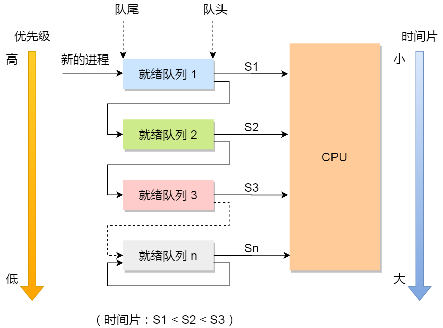
来看看，它是如何工作的：
- 设置了多个队列，赋予每个队列不同的优先级，每个队列优先级从高到低，同时优先级越高时间片越短；
- 新的进程会被放入到第一级队列的末尾，按先来先服务的原则排队等待被调度，如果在第一级队列规定的时间片没运行完成，则将其转入到第二级队列的末尾，以此类推，直至完成；
- 当较高优先级的队列为空，才调度较低优先级的队列中的进程运行。如果进程运行时，有新进程进入较高优先级的队列，则停止当前运行的进程并将其移入到原队列末尾，接着让较高优先级的进程运行；
可以发现，对于短作业可能可以在第一级队列很快被处理完。对于长作业，如果在第一级队列处理不完，可以移入下次队列等待被执行，虽然等待的时间变长了，但是运行时间也变更长了，所以该算法很好的兼顾了长短作业，同时有较好的响应时间。
为什么操作系统要设计虚拟内存？
如果没有虚拟内存，程序直接操作物理内存的话。
在这种情况下，要想在内存中同时运行两个程序是不可能的。如果第一个程序在 2000 的位置写入一个新的值，将会擦掉第二个程序存放在相同位置上的所有内容，所以同时运行两个程序是根本行不通的，这两个程序会立刻崩溃。
这里关键的问题是这两个程序都引用了绝对物理地址，而这正是我们最需要避免的。
我们可以把进程所使用的地址「隔离」开来，即让操作系统为每个进程分配独立的一套「虚拟地址」，人人都有，大家自己玩自己的地址就行，互不干涉。但是有个前提每个进程都不能访问物理地址，至于虚拟地址最终怎么落到物理内存里，对进程来说是透明的，操作系统已经把这些都安排的明明白白了。
操作系统会提供一种机制，将不同进程的虚拟地址和不同内存的物理地址映射起来。如果程序要访问虚拟地址的时候，由操作系统转换成不同的物理地址，这样不同的进程运行的时候，写入的是不同的物理地址，这样就不会冲突了。
进程的地址空间里面有什么？
通过这张图你可以看到，用户空间内存，从低到高分别是 6 种不同的内存段：
- 代码段，包括二进制可执行代码；
- 数据段，包括已初始化的静态常量和全局变量；
- BSS 段，包括未初始化的静态变量和全局变量；
- 堆段，包括动态分配的内存，从低地址开始向上增长；
- 文件映射段，包括动态库、共享内存等；
-
栈段，包括局部变量和函数调用的上下文等。栈的大小是固定的，一般是
8 MB。当然系统也提供了参数，以便我们自定义大小；
上图中的内存布局可以看到，代码段下面还有一段内存空间的（灰色部分），这一块区域是「保留区」，之所以要有保留区这是因为在大多数的系统里，我们认为比较小数值的地址不是一个合法地址，例如，我们通常在 C 的代码里会将无效的指针赋值为 NULL。因此，这里会出现一段不可访问的内存保留区，防止程序因为出现 bug，导致读或写了一些小内存地址的数据，而使得程序跑飞。
在这 7 个内存段中，堆和文件映射段的内存是动态分配的。比如说，使用 C 标准库的 malloc() 或者 mmap() ，就可以分别在堆和文件映射段动态分配内存。
fork 的时候，父子进程共用了什么？
在创建子进程的过程中，操作系统会把父进程的「页表」复制一份给子进程，这个页表记录着虚拟地址和物理地址映射关系，而不会复制物理内存，也就是说，两者的虚拟空间不同，但其对应的物理空间是同一个。
这样一来，子进程就共享了父进程的物理内存数据了，这样能够节约物理内存资源，页表对应的页表项的属性会标记该物理内存的权限为只读。
当父进程或者子进程在向共享内存发起写操作时，CPU 就会触发写保护中断，这个「写保护中断」是由于违反权限导致的，然后操作系统会在「写保护中断处理函数」里进行物理内存的复制，并重新设置其内存映射关系，将父子进程的内存读写权限设置为可读写，最后才会对内存进行写操作，这个过程被称为「**写时复制(Copy On Write)**」。
写时复制顾名思义，在发生写操作的时候，操作系统才会去复制物理内存，这样是为了防止 fork 创建子进程时，由于物理内存数据的复制时间过长而导致父进程长时间阻塞的问题。
为什么进程崩溃不会对其他进程产生很大影响
主要是因为：
-
进程隔离性：每个进程都有自己独立的内存空间，当一个进程崩溃时，其内存空间会被操作系统回收，不会影响其他进程的内存空间。这种进程间的隔离性保证了一个进程崩溃不会直接影响其他进程的执行。
-
进程独立性：每个进程都是独立运行的，它们之间不会共享资源，如文件、网络连接等。因此，一个进程的崩溃通常不会对其他进程的资源产生影响。
11. 同步和阻塞这两个概念介绍一下？
同步指的是任务执行的顺序性。在同步模式下，任务必须按预定的顺序依次执行，前一个任务完成后，才能执行下一个任务。
比如，同步函数调用过程，函数A调用函数B，必须等待函数B执行完毕并返回结果后，函数A才能继续执行。又或者同步I/O场景下，程序发起一个读取文件的操作，必须等待文件内容完全读入内存后才能继续执行后续代码。
同步不一定是阻塞的（例如非阻塞轮询），但通常同步操作会表现为阻塞行为。
阻阻塞指的是调用方的状态。当调用一个操作时，如果当前线程/进程必须等待该操作完成才能继续执行，则称为阻塞。
比如，阻塞I/O场景下：线程调用read()读取网络数据时，如果数据未就绪，线程会被挂起（进入睡眠状态），直到数据到达。又或者，线程尝试获取一个已被占用的锁时，会被阻塞直到锁释放。
阻塞一定是同步的（因为必须等待操作完成），但同步不一定阻塞（见非阻塞轮询）。
有了解过Socket网络套接字吗？
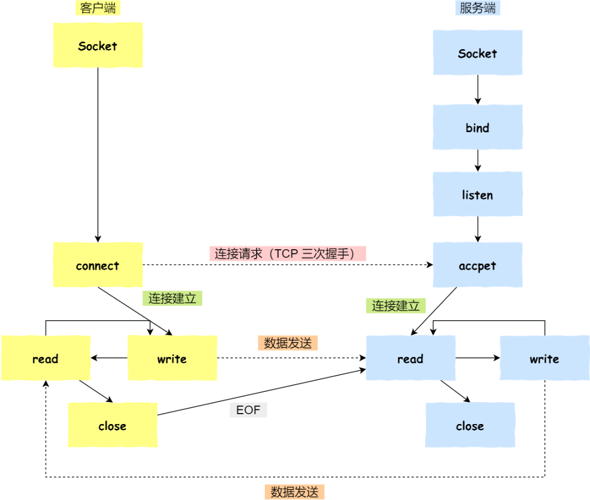
-
服务端和客户端初始化
socket，得到文件描述符； -
服务端调用
bind，将 socket 绑定在指定的 IP 地址和端口; -
服务端调用
listen，进行监听； -
服务端调用
accept，等待客户端连接； -
客户端调用
connect，向服务端的地址和端口发起连接请求； -
服务端
accept返回用于传输的socket的文件描述符； -
客户端调用
write写入数据；服务端调用read读取数据； -
客户端断开连接时，会调用
close，那么服务端read读取数据的时候，就会读取到了EOF，待处理完数据后，服务端调用close，表示连接关闭。
这里需要注意的是，服务端调用 accept 时，连接成功了会返回一个已完成连接的 socket，后续用来传输数据。
所以，监听的 socket 和真正用来传送数据的 socket，是「两个」 socket，一个叫作监听 socket，一个叫作已完成连接 socket。
成功连接建立之后，双方开始通过 read 和 write 函数来读写数据，就像往一个文件流里面写东西一样。
linux的内存是如何组织的？
操作系统设计了虚拟内存，每个进程都有自己的独立的虚拟内存，我们所写的程序不会直接与物理内打交道。
有了虚拟内存之后，它带来了这些好处：
- 第一，虚拟内存可以使得进程对运行内存超过物理内存大小，因为程序运行符合局部性原理，CPU 访问内存会有很明显的重复访问的倾向性，对于那些没有被经常使用到的内存，我们可以把它换出到物理内存之外，比如硬盘上的 swap 区域。
- 第二，由于每个进程都有自己的页表，所以每个进程的虚拟内存空间就是相互独立的。进程也没有办法访问其他进程的页表，所以这些页表是私有的，这就解决了多进程之间地址冲突的问题。
- 第三，页表里的页表项中除了物理地址之外，还有一些标记属性的比特，比如控制一个页的读写权限，标记该页是否存在等。在内存访问方面，操作系统提供了更好的安全性。
Linux 是通过对内存分页的方式来管理内存，分页是把整个虚拟和物理内存空间切成一段段固定尺寸的大小。这样一个连续并且尺寸固定的内存空间，我们叫页（Page）。在 Linux 下，每一页的大小为 4KB。
虚拟地址与物理地址之间通过页表来映射，如下图：
页表是存储在内存里的，内存管理单元 （MMU）就做将虚拟内存地址转换成物理地址的工作。
而当进程访问的虚拟地址在页表中查不到时，系统会产生一个缺页异常，进入系统内核空间分配物理内存、更新进程页表，最后再返回用户空间，恢复进程的运行。
你说到缺页中断，能介绍一下缺页中断么？
缺页中断是指在虚拟内存管理中，当程序试图访问的页面（Page）不在物理内存中，而在磁盘等外存上时，操作系统会产生一个中断，将该页面从外存调入物理内存，以满足程序的访问需求。这种中断就被称为缺页中断。
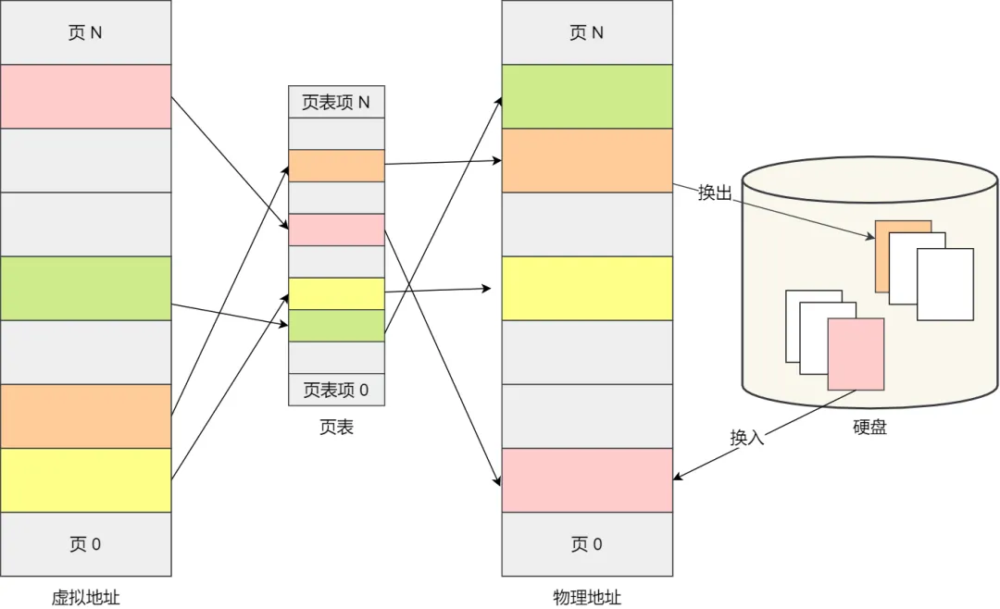
对于缺页中断这种情况，linux操作系统是如何减少页面的换入换出的呢，有哪些方式？
-
按需加载机制：仅在进程实际访问内存时才分配物理页框，而非预先分配所有所需内存。例如，
mmap和malloc仅建立虚拟地址映射，物理页的分配延迟到首次访问时触发缺页中断，这样可以减少不必要的物理内存占用，避免过早的页面换入换出。 -
写时复制：在进程
fork时，父子进程共享只读页面；当任一进程尝试写入时，触发缺页中断并复制新物理页，避免不必要的内存复制。 -
内存预取：文件映射（如
mmap）时，内核在缺页处理中预加载相邻文件内容到内存，减少后续缺页次数。 - 内存分配策略：优先使用空闲页框，避免频繁触发页面回收。例如，通过伙伴系统和 Slab 分配器高效管理内存碎片。
服务器处理并发请求有哪几种方式？
- 单线程web服务器方式：web服务器一次处理一个请求，结束后读取并处理下一个请求，性能比较低，一次只能处理一个请求。
- 多进程/多线程web服务器：web服务器生成多个进程或线程并行处理多个用户请求，进程或线程可以按需或事先生成。有的web服务器应用程序为每个用户请求生成一个单独的进程或线程来进行响应，不过，一旦并发请求数量达到成千上万时，多个同时运行的进程或线程将会消耗大量的系统资源。（即每个进程只能响应一个请求，并且一个进程对应一个线程）
- I/O多路复用web服务器：web服务器可以I/O多路复用，达到只用一个线程就能监听和处理多个客户端的 i/o 事件。
- 多路复用多线程web服务器：将多进程和多路复用的功能结合起来形成的web服务器架构，其避免了让一个进程服务于过多的用户请求，并能充分利用多CPU主机所提供的计算能力。（这种架构可以理解为有多个进程，并且一个进程又生成多个线程，每个线程处理一个请求）
redis，nginx，netty 是依赖什么做的这么高性能？
主要是依赖Reactor 模式实现了高性能网络模式，这个是在i/o多路复用接口基础上实现的了网络模型。Reactor 翻译过来的意思是「反应堆」，这里的反应指的是「对事件反应」，也就是来了一个事件，Reactor 就有相对应的反应/响应。
Reactor 模式主要由 Reactor 和处理资源池这两个核心部分组成，它俩负责的事情如下：
- Reactor 负责监听和分发事件，事件类型包含连接事件、读写事件；
- 处理资源池负责处理事件，如 read -> 业务逻辑 -> send；
Reactor 模式是灵活多变的，可以应对不同的业务场景，灵活在于：
- Reactor 的数量可以只有一个，也可以有多个；
- 处理资源池可以是单个进程 / 线程，也可以是多个进程 /线程；
Redis 6.0 之前使用的 Reactor 模型就是单 Reactor 单进程模式。单 Reactor 单进程的方案因为全部工作都在同一个进程内完成，所以实现起来比较简单，不需要考虑进程间通信，也不用担心多进程竞争。
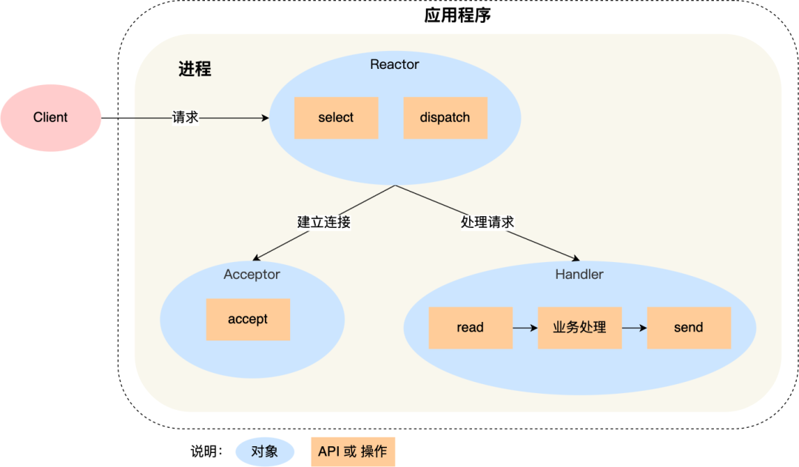
但是，这种方案存在 2 个缺点：
- 第一个缺点，因为只有一个进程，无法充分利用 多核 CPU 的性能；
- 第二个缺点，Handler 对象在业务处理时，整个进程是无法处理其他连接的事件的，如果业务处理耗时比较长，那么就造成响应的延迟；
所以，单 Reactor 单进程的方案不适用计算机密集型的场景，只适用于业务处理非常快速的场景。
Redis 是由 C 语言实现的，在 Redis 6.0 版本之前采用的正是「单 Reactor 单进程」的方案，因为 Redis 业务处理主要是在内存中完成，操作的速度是很快的，性能瓶颈不在 CPU 上，所以 Redis 对于命令的处理是单进程的方案。
Netty 是采用了多 Reactor 多线程方案，如下图：
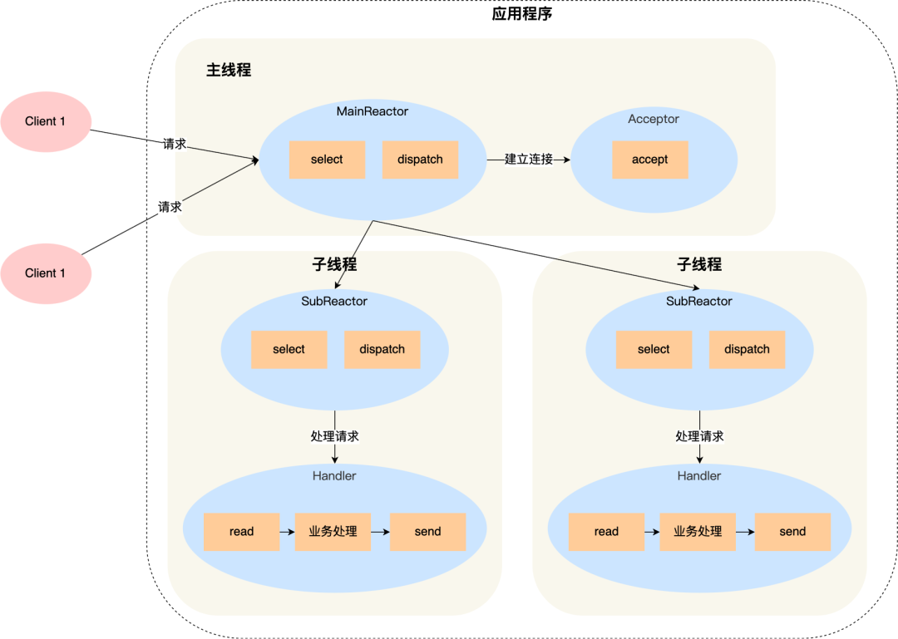
多 Reactor 多线程的方案优势：
- 主线程和子线程分工明确，主线程只负责接收新连接，子线程负责完成后续的业务处理。
- 主线程和子线程的交互很简单，主线程只需要把新连接传给子线程，子线程无须返回数据，直接就可以在子线程将处理结果发送给客户端。
Netty 是多 Reactor 多进程方案，不过方案与标准的多 Reactor 多进程有些差异。
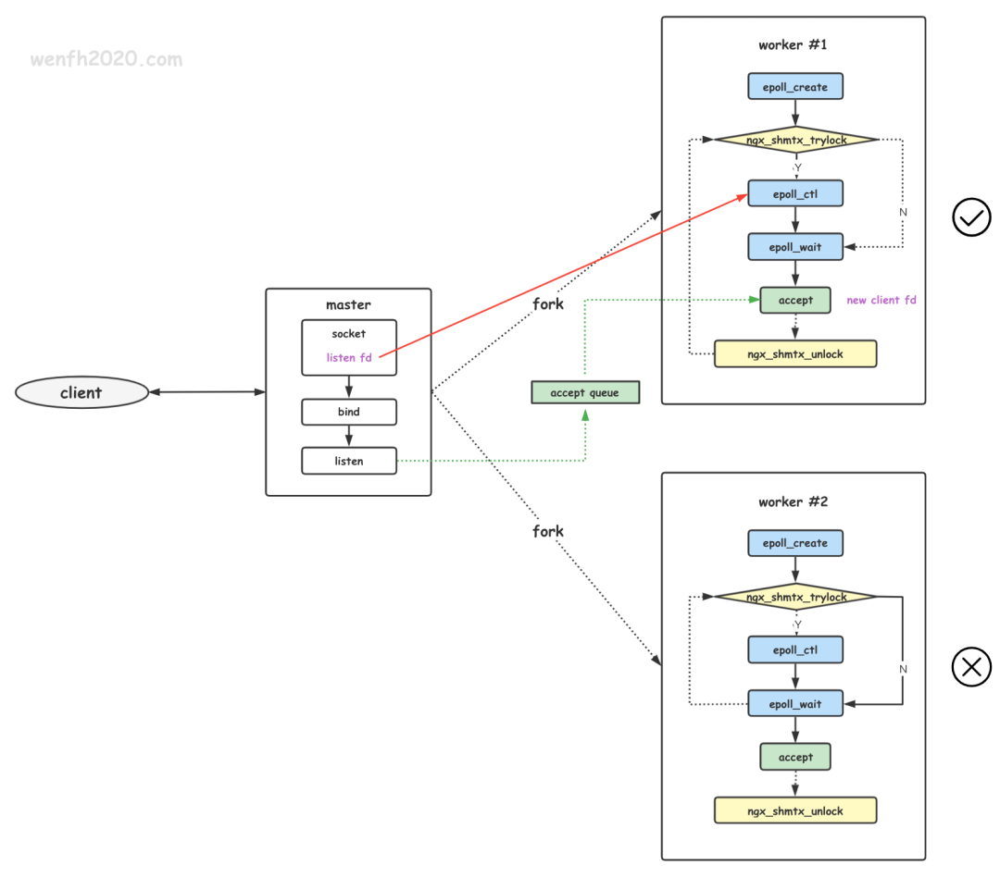
具体差异表现在主进程中仅仅用来初始化 socket，并没有创建 mainReactor 来 accept 连接，而是由子进程的 Reactor 来 accept 连接，通过锁来控制一次只有一个子进程进行 accept（防止出现惊群现象），子进程 accept 新连接后就放到自己的 Reactor 进行处理，不会再分配给其他子进程。
服务器处理并发请求有哪几种方式？
- 单线程web服务器方式：web服务器一次处理一个请求，结束后读取并处理下一个请求，性能比较低，一次只能处理一个请求。
- 多进程/多线程web服务器：web服务器生成多个进程或线程并行处理多个用户请求，进程或线程可以按需或事先生成。有的web服务器应用程序为每个用户请求生成一个单独的进程或线程来进行响应，不过，一旦并发请求数量达到成千上万时，多个同时运行的进程或线程将会消耗大量的系统资源。（即每个进程只能响应一个请求，并且一个进程对应一个线程）
- I/O多路复用web服务器：web服务器可以I/O多路复用，达到只用一个线程就能监听和处理多个客户端的 i/o 事件。
- 多路复用多线程web服务器：将多进程和多路复用的功能结合起来形成的web服务器架构，其避免了让一个进程服务于过多的用户请求，并能充分利用多CPU主机所提供的计算能力。（这种架构可以理解为有多个进程，并且一个进程又生成多个线程，每个线程处理一个请求）
redis，nginx，netty 是依赖什么做的这么高性能？
主要是依赖Reactor 模式实现了高性能网络模式，这个是在i/o多路复用接口基础上实现的了网络模型。Reactor 翻译过来的意思是「反应堆」，这里的反应指的是「对事件反应」，也就是来了一个事件，Reactor 就有相对应的反应/响应。
Reactor 模式主要由 Reactor 和处理资源池这两个核心部分组成，它俩负责的事情如下：
- Reactor 负责监听和分发事件，事件类型包含连接事件、读写事件；
- 处理资源池负责处理事件，如 read -> 业务逻辑 -> send；
Reactor 模式是灵活多变的，可以应对不同的业务场景，灵活在于：
- Reactor 的数量可以只有一个，也可以有多个；
- 处理资源池可以是单个进程 / 线程，也可以是多个进程 /线程；
Redis 6.0 之前使用的 Reactor 模型就是单 Reactor 单进程模式。单 Reactor 单进程的方案因为全部工作都在同一个进程内完成，所以实现起来比较简单，不需要考虑进程间通信，也不用担心多进程竞争。
但是，这种方案存在 2 个缺点：
- 第一个缺点，因为只有一个进程，无法充分利用 多核 CPU 的性能；
- 第二个缺点，Handler 对象在业务处理时，整个进程是无法处理其他连接的事件的，如果业务处理耗时比较长，那么就造成响应的延迟；
所以，单 Reactor 单进程的方案不适用计算机密集型的场景，只适用于业务处理非常快速的场景。Redis 是由 C 语言实现的，在 Redis 6.0 版本之前采用的正是「单 Reactor 单进程」的方案，因为 Redis 业务处理主要是在内存中完成，操作的速度是很快的，性能瓶颈不在 CPU 上，所以 Redis 对于命令的处理是单进程的方案。Netty 是采用了多 Reactor 多线程方案，如下图：
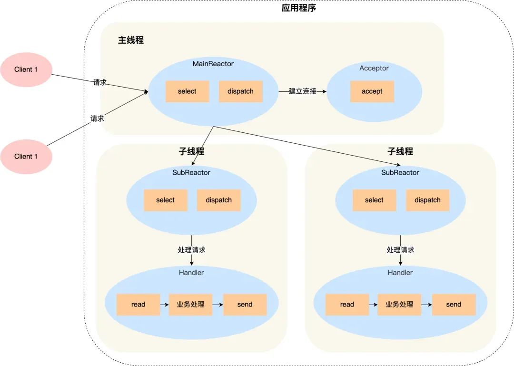
多 Reactor 多线程的方案优势：
- 主线程和子线程分工明确，主线程只负责接收新连接，子线程负责完成后续的业务处理。
- 主线程和子线程的交互很简单，主线程只需要把新连接传给子线程，子线程无须返回数据，直接就可以在子线程将处理结果发送给客户端。
Netty 是多 Reactor 多进程方案，不过方案与标准的多 Reactor 多进程有些差异。具体差异表现在主进程中仅仅用来初始化 socket，并没有创建 mainReactor 来 accept 连接，而是由子进程的 Reactor 来 accept 连接，通过锁来控制一次只有一个子进程进行 accept（防止出现惊群现象），子进程 accept 新连接后就放到自己的 Reactor 进行处理，不会再分配给其他子进程。
什么是上下文？
任务是交给 CPU 运行的，那么在每个任务运行前，CPU 需要知道任务从哪里加载，又从哪里开始运行所以，操作系统需要事先帮 CPU 设置好 CPU 寄存器和程序计数器。
CPU 寄存器和程序计数是 CPU 在运行任何任务前，所必须依赖的环境，这些环境就叫做 CPU 上下文。
CPU 上下文切换就是先把前一个任务的 CPU 上下文（CPU 寄存器和程序计数器）保存起来，然后加载新任务的上下文到这些寄存器和程序计数器，最后再跳转到程序计数器所指的新位置，运行新任务。
系统内核会存储保持下来的上下文信息，当此任务再次被分配给 CPU 运行时，CPU 会重新加载这些上下文，这样就能保证任务原来的状态不受影响，让任务看起来还是连续运行。
上面说到所谓的「任务」，主要包含进程、线程和中断。所以，可以根据任务的不同，把 CPU 上下文切换分成：进程上下文切换、线程上下文切换
进程是由内核管理和调度的，所以进程的切换只能发生在内核态。所以，进程的上下文切换不仅包含了虚拟内存、栈、全局变量等用户空间的资源，还包括了内核堆栈、寄存器等内核空间的资源。
通常，会把交换的信息保存在进程的 PCB，当要运行另外一个进程的时候，我们需要从这个进程的 PCB 取出上下文，然后恢复到 CPU 中，这使得这个进程可以继续执行，如下图所示：
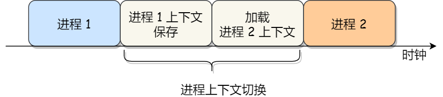
线程共享进程的虚拟内存资源，但是线程也有自己的私有数据，比如栈和寄存器等，这些在上下文切换时也是需要保存的。
线程上下文切换时，虚拟内存这些资源就保持不动，只需要切换线程的私有数据、寄存器等不共享的数据。
什么是中断？
CPU停下当前的工作任务，去处理其他事情，处理完后回来继续执行刚才的任务，这一过程便是中断。
中断分为外部中断和内部中断：
- 外部中断分为可屏蔽中断和不可屏蔽中断：
- 可屏蔽中断：通过INTR线向CPU请求的中断，主要来自外部设备如硬盘，打印机，网卡等。此类中断并不会影响系统运行，可随时处理，甚至不处理，所以名为可屏蔽。
- 不可屏蔽中断：通过NMI线向CPU请求的中断，如电源掉电，硬件线路故障等。这里不可屏蔽的意思不是不可以屏蔽，不建议屏蔽，而是问题太大，屏蔽不了，不能屏蔽的意思。注：INTR和NMI都是CPU的引脚
- 内部中断分为陷阱、故障、终止：
- 陷阱：是一种有意的，预先安排的异常事件，一般是在编写程序时故意设下的陷阱指令，而后执行到陷阱指令后，CPU将会调用特定程序进行相应的处理，处理结束后返回到陷阱指令的下一条指令。如系统调用，程序调试功能等。如printf函数，最底层的实现中会有一条int 0x80指令，这就是一条陷阱指令，使用0x80号中断进行系统调用。
- 故障：故障是在引起故障的指令被执行，但还没有执行结束时，CPU检测到的一类的意外事件。出错时交由故障处理程序处理，如果能处理修正这个错误，就将控制返回到引起故障的指令即CPU重新执这条指令。如果不能处理就报错。常见的故障为缺页，当CPU引用的虚拟地址对应的物理页不存在时就会发生故障。缺页异常是能够修正的，有着专门的缺页处理程序，它会将缺失的物理页从磁盘中重新调进主存。而后再次执行引起故障的指令时便能够顺利执行了。
- 终止：执行指令的过程中发生了致命错误，不可修复，程序无法继续运行，只能终止，通常会是一些硬件的错误。终止处理程序不会将控制返回给原程序，而是直接终止原程序
内核态和用户态区别？内核态的底层操作有什么？为什么要分两个不同的态？
内核态和用户态是操作系统中的两种运行模式。它们的主要区别在于权限和可执行的操作：
- 内核态（Kernel Mode）：在内核态下，CPU可以执行所有的指令和访问所有的硬件资源。这种模式下的操作具有更高的权限，主要用于操作系统内核的运行。
- 用户态（User Mode）：在用户态下，CPU只能执行部分指令集，无法直接访问硬件资源。这种模式下的操作权限较低，主要用于运行用户程序。
内核态的底层操作主要包括：内存管理、进程管理、设备驱动程序控制、系统调用等。这些操作涉及到操作系统的核心功能，需要较高的权限来执行。
分为内核态和用户态的原因主要有以下几点：
- 安全性：通过对权限的划分，用户程序无法直接访问硬件资源，从而避免了恶意程序对系统资源的破坏。
- 稳定性：用户态程序出现问题时，不会影响到整个系统，避免了程序故障导致系统崩溃的风险。
- 隔离性：内核态和用户态的划分使得操作系统内核与用户程序之间有了明确的边界，有利于系统的模块化和维护。
内核态和用户态的划分有助于保证操作系统的安全性、稳定性和易维护性。
为什么协程切换的开销比线程切换小？
- 用户态切换：协程的切换是在用户态进行的，不需要操作系统的介入。相比之下，线程的切换需要操作系统进行调度和上下文切换，需要从用户态切换到内核态，这涉及到CPU寄存器的保存和恢复等操作，开销较大。
- 协作式调度：协程的调度是协作式的，由协程自身主动让出执行权，而不是被操作系统强制切换。这种调度方式避免了不必要的上下文切换，减少了切换开销。
多线程是不是越多越好，太多会有什么问题？
多线程不一定越多越好，过多的线程可能会导致一些问题。
- 切换开销：线程的创建和切换会消耗系统资源，包括内存和CPU。如果创建太多线程，会占用大量的系统资源，导致系统负载过高，某个线程崩溃后，可能会导致进程崩溃。
- 死锁的问题：过多的线程可能会导致竞争条件和死锁。竞争条件指的是多个线程同时访问和修改共享资源，如果没有合适的同步机制，可能会导致数据不一致或错误的结果。而死锁则是指多个线程相互等待对方释放资源，导致程序无法继续执行。
知道fork吗？
知道的，fork是创建子进程的系统调用方法。
#include <unistd.h>
int main() {
pid_t child_pid;
child_pid = fork();
if (child_pid == 0) {
// 子进程逻辑
} else if (child_pid > 0) {
// 父进程逻辑
} else {
// fork失败的处理逻辑
}
return 0;
}
多个进程的资源是共享的还是隔离的？
多个进程的资源是隔离的。每个进程有自己独立的内存空间，不能直接访问其他进程的内存。进程也有自己的文件描述符表、网络连接等资源，这些资源也是独立的，不会被其他进程访问或影响。
一个进程的所有内存资源对于线程都是共享的吗？
在同一个进程中的多个线程共享相同的内存空间，包括代码段、数据段、堆和共享库等。这意味着线程可以直接访问进程的全局变量、静态变量和动态分配的内存等资源。
不过，线程也有自己的栈空间。每个线程在栈上分配自己的局部变量和函数调用信息，这些是线程私有的。栈空间在每个线程之间是隔离的，不会被其他线程访问。这意味着每个线程拥有自己的栈帧和栈指针。
一个进程fork出一个子进程，那么他们占用的内存是之前的2倍吗？
不是的。
fork 的时候，创建的子进程是复父进程的虚拟内存，并不是物理内存，这时候父子的虚拟内存指向的是同一个物理内存空间，这样能够节约物理内存资源，页表对应的页表项的属性会标记该物理内存的权限为只读。
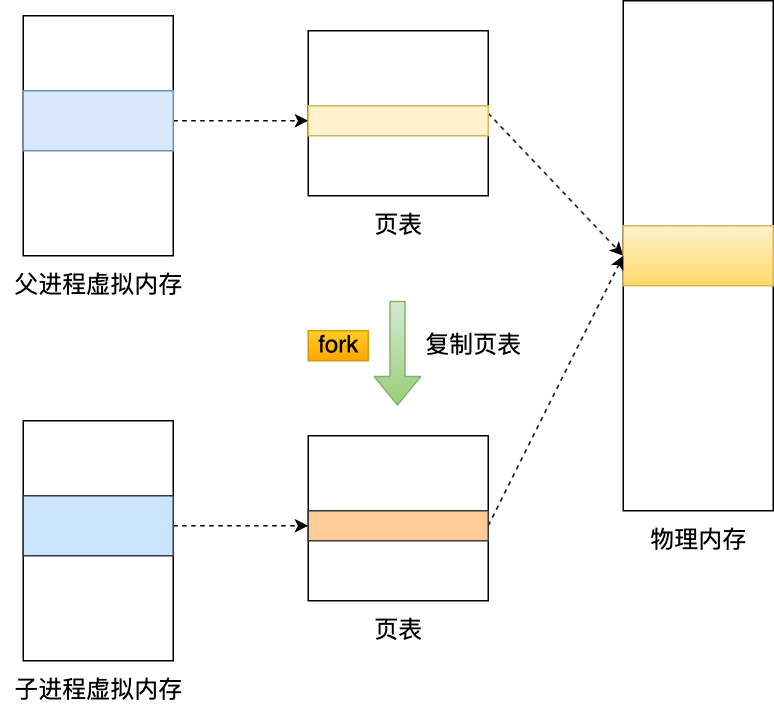
不过，当父进程或者子进程在向这个内存发起写操作时，CPU 就会触发写保护中断，这个写保护中断是由于违反权限导致的，然后操作系统会在「写保护中断处理函数」里进行物理内存的复制，并重新设置其内存映射关系，将父子进程的内存读写权限设置为可读写，最后才会对内存进行写操作，这个过程被称为「写时复制」。
写时复制顾名思义，在发生写操作的时候，操作系统才会去复制物理内存。
内核态和用户态区别？内核态的底层操作有什么？为什么要分两个不同的态？
内核态和用户态是操作系统中的两种运行模式。它们的主要区别在于权限和可执行的操作：
-
内核态（Kernel Mode）：在内核态下，CPU可以执行所有的指令和访问所有的硬件资源。这种模式下的操作具有更高的权限，主要用于操作系统内核的运行。
-
用户态（User Mode）：在用户态下，CPU只能执行部分指令集，无法直接访问硬件资源。这种模式下的操作权限较低，主要用于运行用户程序。
内核态的底层操作主要包括：内存管理、进程管理、设备驱动程序控制、系统调用等。这些操作涉及到操作系统的核心功能，需要较高的权限来执行。
分为内核态和用户态的原因主要有以下几点：
-
安全性：通过对权限的划分，用户程序无法直接访问硬件资源，从而避免了恶意程序对系统资源的破坏。
-
稳定性：用户态程序出现问题时，不会影响到整个系统，避免了程序故障导致系统崩溃的风险。
-
隔离性：内核态和用户态的划分使得操作系统内核与用户程序之间有了明确的边界，有利于系统的模块化和维护。
内核态和用户态的划分有助于保证操作系统的安全性、稳定性和易维护性。
介绍一下操作系统内存管理
操作系统设计了虚拟内存，每个进程都有自己的独立的虚拟内存，我们所写的程序不会直接与物理内打交道。
有了虚拟内存之后，它带来了这些好处：
- 第一，虚拟内存可以使得进程对运行内存超过物理内存大小，因为程序运行符合局部性原理，CPU 访问内存会有很明显的重复访问的倾向性，对于那些没有被经常使用到的内存，我们可以把它换出到物理内存之外，比如硬盘上的 swap 区域。
- 第二，由于每个进程都有自己的页表，所以每个进程的虚拟内存空间就是相互独立的。进程也没有办法访问其他进程的页表，所以这些页表是私有的，这就解决了多进程之间地址冲突的问题。
- 第三，页表里的页表项中除了物理地址之外，还有一些标记属性的比特，比如控制一个页的读写权限，标记该页是否存在等。在内存访问方面，操作系统提供了更好的安全性。
Linux 是通过对内存分页的方式来管理内存，分页是把整个虚拟和物理内存空间切成一段段固定尺寸的大小。这样一个连续并且尺寸固定的内存空间，我们叫页（_Page_）。在 Linux 下，每一页的大小为 4KB。虚拟地址与物理地址之间通过页表来映射，如下图： 页表是存储在内存里的，内存管理单元 （_MMU_）就做将虚拟内存地址转换成物理地址的工作。
页表是存储在内存里的，内存管理单元 （_MMU_）就做将虚拟内存地址转换成物理地址的工作。
而当进程访问的虚拟地址在页表中查不到时，系统会产生一个缺页异常，进入系统内核空间分配物理内存、更新进程页表，最后再返回用户空间，恢复进程的运行。
介绍copy on write
主进程在执行 fork 的时候，操作系统会把主进程的「页表」复制一份给子进程，这个页表记录着虚拟地址和物理地址映射关系，而不会复制物理内存，也就是说，两者的虚拟空间不同，但其对应的物理空间是同一个。这样一来，子进程就共享了父进程的物理内存数据了，这样能够节约物理内存资源，页表对应的页表项的属性会标记该物理内存的权限为只读。
不过，当父进程或者子进程在向这个内存发起写操作时，CPU 就会触发写保护中断，这个写保护中断是由于违反权限导致的，然后操作系统会在「写保护中断处理函数」里进行物理内存的复制，并重新设置其内存映射关系，将父子进程的内存读写权限设置为可读写，最后才会对内存进行写操作，这个过程被称为「**写时复制(Copy On Write)**」。
写时复制顾名思义，在发生写操作的时候，操作系统才会去复制物理内存，这样是为了防止 fork 创建子进程时，由于物理内存数据的复制时间过长而导致父进程长时间阻塞的问题。
copy on write节省了什么资源
节省了物理内存的资源，因为 fork 的时候，子进程不需要复制父进程的物理内存，避免了不必要的内存复制开销，子进程只需要复制父进程的页表，这时候父子进程的页表指向的都是共享的物理内存。
只有当父子进程任何有一方对这片共享的物理内存发生了修改操作，才会触发写时复制机制，这时候才会复制发生修改操作的物理内存。
线程切换为什么比进程切换快，节省了什么资源？
线程切换比进程切换快是因为线程共享同一进程的地址空间和资源，线程切换时只需切换堆栈和程序计数器等少量信息，而不需要切换地址空间，避免了进程切换时需要切换内存映射表等大量资源的开销，从而节省了时间和系统资源。
内核态和用户态区别？内核态的底层操作有什么？为什么要分两个不同的态？
内核态和用户态是操作系统中的两种运行模式。它们的主要区别在于权限和可执行的操作：
- 内核态（Kernel Mode）：在内核态下，CPU可以执行所有的指令和访问所有的硬件资源。这种模式下的操作具有更高的权限，主要用于操作系统内核的运行。
- 用户态（User Mode）：在用户态下，CPU只能执行部分指令集，无法直接访问硬件资源。这种模式下的操作权限较低，主要用于运行用户程序。
内核态的底层操作主要包括：内存管理、进程管理、设备驱动程序控制、系统调用等。这些操作涉及到操作系统的核心功能，需要较高的权限来执行。
分为内核态和用户态的原因主要有以下几点：
- 安全性：通过对权限的划分，用户程序无法直接访问硬件资源，从而避免了恶意程序对系统资源的破坏。
- 稳定性：用户态程序出现问题时，不会影响到整个系统，避免了程序故障导致系统崩溃的风险。
- 隔离性：内核态和用户态的划分使得操作系统内核与用户程序之间有了明确的边界，有利于系统的模块化和维护。
内核态和用户态的划分有助于保证操作系统的安全性、稳定性和易维护性。
系统创建进程的时候，会给进程分配哪些资源？
会分配虚拟内存空间、文件描述符、信号资源。
线程的资源怎么回收？
linux 线程退出有多种方式，如return，pthread_exit,pthread_cancel等；线程分为可结合的（joinable）和 分离的（detached）两种。
- 如果没有在创建线程时设置线程的属性为PTHREAD_CREATE_DETACHED，则线程默认是可结合的。可结合的线程在线程退出后不会立即释放资源，必须要调用pthread_join来显式的结束线程。
- 分离的线程在线程退出时系统会自动回收资源。
Linux怎么做虚拟内存管理？
用户态和内核态的区别是什么？
内核态和用户态是操作系统中的两种运行模式。它们的主要区别在于权限和可执行的操作：
- 内核态（Kernel Mode）：在内核态下，CPU可以执行所有的指令和访问所有的硬件资源。这种模式下的操作具有更高的权限，主要用于操作系统内核的运行。
- 用户态（User Mode）：在用户态下，CPU只能执行部分指令集，无法直接访问硬件资源。这种模式下的操作权限较低，主要用于运行用户程序。
内核态的底层操作主要包括：内存管理、进程管理、设备驱动程序控制、系统调用等。这些操作涉及到操作系统的核心功能，需要较高的权限来执行。分为内核态和用户态的原因主要有以下几点：
- 安全性：通过对权限的划分，用户程序无法直接访问硬件资源，从而避免了恶意程序对系统资源的破坏。
- 稳定性：用户态程序出现问题时，不会影响到整个系统，避免了程序故障导致系统崩溃的风险。
- 隔离性：内核态和用户态的划分使得操作系统内核与用户程序之间有了明确的边界，有利于系统的模块化和维护。
内核态和用户态的划分有助于保证操作系统的安全性、稳定性和易维护性。
什么时候会从用户态到内核态？
这里细分为3种情况。：
- 发生系统调用时：这是处于用户态的进程主动请求切换到内核态的一种方式。用户态的进程通过系统调用申请使用操作系统提供的系统调用服务例程来处理任务。而系统调用的机制，其核心仍是使用了操作系统为用户特别开发的一个中断机制来实现的，即软中断。
- 产生异常时：当CPU执行运行在用户态下的程序时，发生了某些事先不可知的异常，这时会触发由当前运行的进程切换到处理此异常的内核相关的程序中，也就是转到了内核态，如缺页异常。
- 外设产生中断时：中断当外围设备完成用户请求的操作后，会向CPU发出相应的中断信号，这时CPU会暂停执行下一条即将要执行的指令转而去执行与中断信号对应的处理程序，如果先前执行的指令是用户态下的程序，那么这个转换的过程自然也就发生了由用户态到内核态的切换。比如硬盘读写操作的完成，系统会切换到硬盘读写的中断处理程序中执行后续操作等。
可以看到上述三种由用户态切换到内核态的情况中，只有系统调用是进程主动请求发生切换的，中断和异常都是被动的。
Linux文件系统讲一下？
文件系统的种类众多，而操作系统希望对用户提供一个统一的接口，于是在用户层与文件系统层引入了中间层，这个中间层就称为虚拟文件系统（_Virtual File System，VFS_）。
VFS 定义了一组所有文件系统都支持的数据结构和标准接口，这样程序员不需要了解文件系统的工作原理，只需要了解 VFS 提供的统一接口即可。
在 Linux 文件系统中，用户空间、系统调用、虚拟机文件系统、缓存、文件系统以及存储之间的关系如下图：
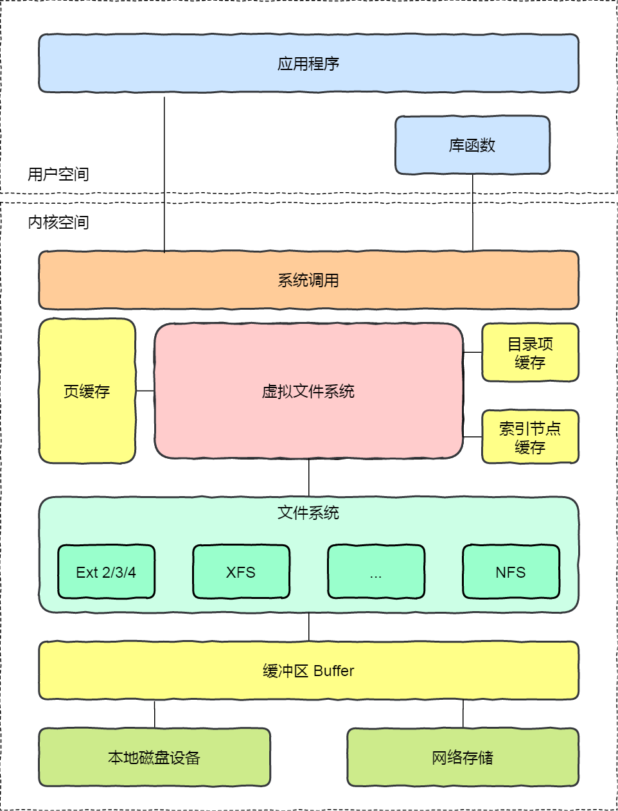
Linux 支持的文件系统也不少，根据存储位置的不同，可以把文件系统分为三类：- _磁盘的文件系统_，它是直接把数据存储在磁盘中，比如 Ext 2/3/4、XFS 等都是这类文件系统。
-
_内存的文件系统_，这类文件系统的数据不是存储在硬盘的，而是占用内存空间，我们经常用到的
/proc和/sys文件系统都属于这一类，读写这类文件，实际上是读写内核中相关的数据数据。 - _网络的文件系统_，用来访问其他计算机主机数据的文件系统，比如 NFS、SMB 等等。
文件系统首先要先挂载到某个目录才可以正常使用，比如 Linux 系统在启动时，会把文件系统挂载到根目录。
软链接和硬链接的区别？
硬链接是多个目录项中的「索引节点」指向一个文件，也就是指向同一个 inode，但是 inode 是不可能跨越文件系统的，每个文件系统都有各自的 inode 数据结构和列表，所以硬链接是不可用于跨文件系统的。由于多个目录项都是指向一个 inode，那么只有删除文件的所有硬链接以及源文件时，系统才会彻底删除该文件。
软链接相当于重新创建一个文件，这个文件有独立的 inode，但是这个文件的内容是另外一个文件的路径，所以访问软链接的时候，实际上相当于访问到了另外一个文件，所以软链接是可以跨文件系统的，甚至目标文件被删除了，链接文件还是在的，只不过指向的文件找不到了而已。
有哪些进程调度算法 ?
01 先来先服务调度算法
最简单的一个调度算法，就是非抢占式的先来先服务（*First Come First Serve, FCFS*）算法了。
顾名思义，先来后到，每次从就绪队列选择最先进入队列的进程，然后一直运行，直到进程退出或被阻塞，才会继续从队列中选择第一个进程接着运行。
这似乎很公平，但是当一个长作业先运行了，那么后面的短作业等待的时间就会很长，不利于短作业。
FCFS 对长作业有利，适用于 CPU 繁忙型作业的系统，而不适用于 I/O 繁忙型作业的系统。
02 最短作业优先调度算法
最短作业优先（*Shortest Job First, SJF*）调度算法同样也是顾名思义，它会优先选择运行时间最短的进程来运行，这有助于提高系统的吞吐量。
这显然对长作业不利，很容易造成一种极端现象。
比如，一个长作业在就绪队列等待运行，而这个就绪队列有非常多的短作业，那么就会使得长作业不断的往后推，周转时间变长，致使长作业长期不会被运行。
03 高响应比优先调度算法
前面的「先来先服务调度算法」和「最短作业优先调度算法」都没有很好的权衡短作业和长作业。
那么，高响应比优先 （*Highest Response Ratio Next, HRRN*）调度算法主要是权衡了短作业和长作业。
每次进行进程调度时，先计算「响应比优先级」，然后把「响应比优先级」最高的进程投入运行，「响应比优先级」的计算公式：
从上面的公式，可以发现：
- 如果两个进程的「等待时间」相同时，「要求的服务时间」越短，「响应比」就越高，这样短作业的进程容易被选中运行；
- 如果两个进程「要求的服务时间」相同时，「等待时间」越长，「响应比」就越高，这就兼顾到了长作业进程，因为进程的响应比可以随时间等待的增加而提高，当其等待时间足够长时，其响应比便可以升到很高，从而获得运行的机会；
04 时间片轮转调度算法
最古老、最简单、最公平且使用最广的算法就是时间片轮转（*Round Robin, RR*）调度算法。
每个进程被分配一个时间段，称为时间片（*Quantum*），即允许该进程在该时间段中运行。
- 如果时间片用完，进程还在运行，那么将会把此进程从 CPU 释放出来，并把 CPU 分配给另外一个进程；
- 如果该进程在时间片结束前阻塞或结束，则 CPU 立即进行切换；
另外，时间片的长度就是一个很关键的点：
- 如果时间片设得太短会导致过多的进程上下文切换，降低了 CPU 效率；
- 如果设得太长又可能引起对短作业进程的响应时间变长。将
一般来说，时间片设为 20ms~50ms 通常是一个比较合理的折中值。
05 最高优先级调度算法
前面的「时间片轮转算法」做了个假设，即让所有的进程同等重要，也不偏袒谁，大家的运行时间都一样。
但是，对于多用户计算机系统就有不同的看法了，它们希望调度是有优先级的，即希望调度程序能从就绪队列中选择最高优先级的进程进行运行，这称为最高优先级（*Highest Priority First，HPF*）调度算法。
进程的优先级可以分为，静态优先级和动态优先级：
- 静态优先级：创建进程时候，就已经确定了优先级了，然后整个运行时间优先级都不会变化；
- 动态优先级：根据进程的动态变化调整优先级，比如如果进程运行时间增加，则降低其优先级，如果进程等待时间（就绪队列的等待时间）增加，则升高其优先级，也就是随着时间的推移增加等待进程的优先级。
该算法也有两种处理优先级高的方法，非抢占式和抢占式：
- 非抢占式：当就绪队列中出现优先级高的进程，运行完当前进程，再选择优先级高的进程。
- 抢占式：当就绪队列中出现优先级高的进程，当前进程挂起，调度优先级高的进程运行。
但是依然有缺点，可能会导致低优先级的进程永远不会运行。
06 多级反馈队列调度算法
多级反馈队列（*Multilevel Feedback Queue*）调度算法是「时间片轮转算法」和「最高优先级算法」的综合和发展。
顾名思义：
- 「多级」表示有多个队列，每个队列优先级从高到低，同时优先级越高时间片越短。
- 「反馈」表示如果有新的进程加入优先级高的队列时，立刻停止当前正在运行的进程，转而去运行优先级高的队列；
来看看，它是如何工作的：
- 设置了多个队列，赋予每个队列不同的优先级，每个队列优先级从高到低，同时优先级越高时间片越短；
- 新的进程会被放入到第一级队列的末尾，按先来先服务的原则排队等待被调度，如果在第一级队列规定的时间片没运行完成，则将其转入到第二级队列的末尾，以此类推，直至完成；
- 当较高优先级的队列为空，才调度较低优先级的队列中的进程运行。如果进程运行时，有新进程进入较高优先级的队列，则停止当前运行的进程并将其移入到原队列末尾，接着让较高优先级的进程运行；
可以发现，对于短作业可能可以在第一级队列很快被处理完。对于长作业，如果在第一级队列处理不完，可以移入下次队列等待被执行，虽然等待的时间变长了，但是运行时间也变更长了，所以该算法很好的兼顾了长短作业，同时有较好的响应时间。
操作系统内存不足的时候会发生什么？
应用程序通过 malloc 函数申请内存的时候，实际上申请的是虚拟内存，此时并不会分配物理内存。
当应用程序读写了这块虚拟内存，CPU 就会去访问这个虚拟内存， 这时会发现这个虚拟内存没有映射到物理内存， CPU 就会产生缺页中断，进程会从用户态切换到内核态，并将缺页中断交给内核的 Page Fault Handler （缺页中断函数）处理。
缺页中断处理函数会看是否有空闲的物理内存，如果有，就直接分配物理内存，并建立虚拟内存与物理内存之间的映射关系。
如果没有空闲的物理内存，那么内核就会开始进行回收内存的工作，回收的方式主要是两种：直接内存回收和后台内存回收。
- 后台内存回收（kswapd）：在物理内存紧张的时候，会唤醒 kswapd 内核线程来回收内存，这个回收内存的过程异步的，不会阻塞进程的执行。
- 直接内存回收（direct reclaim）：如果后台异步回收跟不上进程内存申请的速度，就会开始直接回收，这个回收内存的过程是同步的，会阻塞进程的执行。
如果直接内存回收后，空闲的物理内存仍然无法满足此次物理内存的申请，那么内核就会放最后的大招了 ——触发 OOM （Out of Memory）机制。
OOM Killer 机制会根据算法选择一个占用物理内存较高的进程，然后将其杀死，以便释放内存资源，如果物理内存依然不足，OOM Killer 会继续杀死占用物理内存较高的进程，直到释放足够的内存位置。申请物理内存的过程如下图：
系统内存紧张的时候，就会进行回收内存的工作，那具体哪些内存是可以被回收的呢？主要有两类内存可以被回收，而且它们的回收方式也不同。
- 文件页（File-backed Page）：内核缓存的磁盘数据（Buffer）和内核缓存的文件数据（Cache）都叫作文件页。大部分文件页，都可以直接释放内存，以后有需要时，再从磁盘重新读取就可以了。而那些被应用程序修改过，并且暂时还没写入磁盘的数据（也就是脏页），就得先写入磁盘，然后才能进行内存释放。所以，回收干净页的方式是直接释放内存，回收脏页的方式是先写回磁盘后再释放内存。
- 匿名页（Anonymous Page）：这部分内存没有实际载体，不像文件缓存有硬盘文件这样一个载体，比如堆、栈数据等。这部分内存很可能还要再次被访问，所以不能直接释放内存，它们回收的方式是通过 Linux 的 Swap 机制，Swap 会把不常访问的内存先写到磁盘中，然后释放这些内存，给其他更需要的进程使用。再次访问这些内存时，重新从磁盘读入内存就可以了。
文件页和匿名页的回收都是基于 LRU 算法，也就是优先回收不常访问的内存。LRU 回收算法，实际上维护着 active 和 inactive 两个双向链表，其中：
- active_list 活跃内存页链表，这里存放的是最近被访问过（活跃）的内存页；
- inactive_list 不活跃内存页链表，这里存放的是很少被访问（非活跃）的内存页；
越接近链表尾部，就表示内存页越不常访问。这样，在回收内存时，系统就可以根据活跃程度，优先回收不活跃的内存。
是否看过内存替换的源码？有哪些方式？
传统的 LRU 算法存在 2 个问题：
- 「预读失效」导致缓存命中率下降
- 「缓存污染」导致缓存命中率下降
要解决这两个问题，可以使用 LFU 算法，根据页面被访问的频率来确定哪些页面是最不经常使用的，然后将这些页面替换出去。
也可以改造 LRU 算法，来避免这两个问题。Linux就是通过改造传统 LRU 算法来避免的，实现了 lru-k 算法，k 是 2。
为了避免「预读失效」造成的影响，Linux 对传统的 LRU 链表做了改进：
- Linux 操作系统实现两个了 LRU 链表：活跃 LRU 链表（active list）和非活跃 LRU 链表（inactive list）。
但是如果还是使用「只要数据被访问一次，就将数据加入到活跃 LRU 链表头部」这种方式的话，那么还存在缓存污染的问题。为了避免「缓存污染」造成的影响，Linux 操作系统提高了升级为热点数据的门槛：
- Linux 操作系统：在内存页被访问第二次的时候，才将页从 inactive list 升级到 active list 里。
操作系统在进程调度的时候会做哪些事情？
- 根据特定的调度算法选择下一个要执行的进程，以确定运行哪个进程。常见的调度算法包括先来先服务（FCFS）、短作业优先（SJF）、时间片轮转（Round Robin）、优先级调度等。
- 选好进程之后，就会进行进程切换，在切换进程时，操作系统保存当前进程的状态（寄存器内容、程序计数器等）到进程控制块中，并恢复下一个进程的状态，实现进程之间的切换。
进程上下文有哪些？
各个进程之间是共享 CPU 资源的，在不同的时候进程之间需要切换，让不同的进程可以在 CPU 执行，那么这个一个进程切换到另一个进程运行，称为进程的上下文切换。
在详细说进程上下文切换前，我们先来看看 CPU 上下文切换
大多数操作系统都是多任务，通常支持大于 CPU 数量的任务同时运行。实际上，这些任务并不是同时运行的，只是因为系统在很短的时间内，让各个任务分别在 CPU 运行，于是就造成同时运行的错觉。
任务是交给 CPU 运行的，那么在每个任务运行前，CPU 需要知道任务从哪里加载，又从哪里开始运行。
所以，操作系统需要事先帮 CPU 设置好 CPU 寄存器和程序计数器。
CPU 寄存器是 CPU 内部一个容量小，但是速度极快的内存（缓存）。我举个例子，寄存器像是你的口袋，内存像你的书包，硬盘则是你家里的柜子，如果你的东西存放到口袋，那肯定是比你从书包或家里柜子取出来要快的多。
再来，程序计数器则是用来存储 CPU 正在执行的指令位置、或者即将执行的下一条指令位置。
所以说，CPU 寄存器和程序计数是 CPU 在运行任何任务前，所必须依赖的环境，这些环境就叫做 CPU 上下文。
既然知道了什么是 CPU 上下文，那理解 CPU 上下文切换就不难了。
CPU 上下文切换就是先把前一个任务的 CPU 上下文（CPU 寄存器和程序计数器）保存起来，然后加载新任务的上下文到这些寄存器和程序计数器，最后再跳转到程序计数器所指的新位置，运行新任务。
系统内核会存储保持下来的上下文信息，当此任务再次被分配给 CPU 运行时，CPU 会重新加载这些上下文，这样就能保证任务原来的状态不受影响，让任务看起来还是连续运行。
上面说到所谓的「任务」，主要包含进程、线程和中断。所以，可以根据任务的不同，把 CPU 上下文切换分成：进程上下文切换、线程上下文切换和中断上下文切换。
进程的上下文切换到底是切换什么呢？
进程是由内核管理和调度的，所以进程的切换只能发生在内核态。
所以，进程的上下文切换不仅包含了虚拟内存、栈、全局变量等用户空间的资源，还包括了内核堆栈、寄存器等内核空间的资源。
通常，会把交换的信息保存在进程的 PCB，当要运行另外一个进程的时候，我们需要从这个进程的 PCB 取出上下文，然后恢复到 CPU 中，这使得这个进程可以继续执行，如下图所示：大家需要注意，进程的上下文开销是很关键的，我们希望它的开销越小越好，这样可以使得进程可以把更多时间花费在执行程序上，而不是耗费在上下文切换。
malloc 1KB和1MB 有什么区别？
malloc() 源码里默认定义了一个阈值：
- 如果用户分配的内存小于 128 KB，则通过 brk() 申请内存；
- 如果用户分配的内存大于 128 KB，则通过 mmap() 申请内存；
注意，不同的 glibc 版本定义的阈值也是不同的。
介绍一下brk，mmap
实际上，malloc() 并不是系统调用，而是 C 库里的函数，用于动态分配内存。malloc 申请内存的时候，会有两种方式向操作系统申请堆内存。
- 方式一：通过 brk() 系统调用从堆分配内存
- 方式二：通过 mmap() 系统调用在文件映射区域分配内存；
方式一实现的方式很简单，就是通过 brk() 函数将「堆顶」指针向高地址移动，获得新的内存空间。如下图：方式二通过 mmap() 系统调用中「私有匿名映射」的方式，在文件映射区分配一块内存，也就是从文件映射区“偷”了一块内存。如下图：
分页内存管理说一下
分页是把整个虚拟和物理内存空间切成一段段固定尺寸的大小。这样一个连续并且尺寸固定的内存空间，我们叫页（_Page_）。在 Linux 下，每一页的大小为 4KB。虚拟地址与物理地址之间通过页表来映射，如下图： 页表是存储在内存里的，内存管理单元 （_MMU_）就做将虚拟内存地址转换成物理地址的工作。而当进程访问的虚拟地址在页表中查不到时，系统会产生一个缺页异常，进入系统内核空间分配物理内存、更新进程页表，最后再返回用户空间，恢复进程的运行。在分页机制下，虚拟地址分为两部分，页号和页内偏移。页号作为页表的索引，页表包含物理页每页所在物理内存的基地址，这个基地址与页内偏移的组合就形成了物理内存地址，见下图。总结一下，对于一个内存地址转换，其实就是这样三个步骤：
页表是存储在内存里的，内存管理单元 （_MMU_）就做将虚拟内存地址转换成物理地址的工作。而当进程访问的虚拟地址在页表中查不到时，系统会产生一个缺页异常，进入系统内核空间分配物理内存、更新进程页表，最后再返回用户空间，恢复进程的运行。在分页机制下，虚拟地址分为两部分，页号和页内偏移。页号作为页表的索引，页表包含物理页每页所在物理内存的基地址，这个基地址与页内偏移的组合就形成了物理内存地址，见下图。总结一下，对于一个内存地址转换，其实就是这样三个步骤：
- 把虚拟内存地址，切分成页号和偏移量；
- 根据页号，从页表里面，查询对应的物理页号；
- 直接拿物理页号，加上前面的偏移量，就得到了物理内存地址。
下面举个例子，虚拟内存中的页通过页表映射为了物理内存中的页，如下图：
操作系统-pageCache是什么
读者答：缓存一些比较常访问的文件到缓存中，这样子的话它就能减少两次从内核空间拷贝的过程，就是来减少查询这个内容的时间。
小林补充：
为了提升对文件的读写效率，Linux 内核会以页大小（4KB）为单位，将文件划分为多数据块。当用户对文件中的某个数据块进行读写操作时，内核首先会申请一个内存页（称为 页缓存）与文件中的数据块进行绑定。如下图所示：
如上图所示，当用户对文件进行读写时，实际上是对文件的 页缓存 进行读写。所以对文件进行读写操作时，会分以下两种情况进行处理：
- 当从文件中读取数据时，如果要读取的数据所在的页缓存已经存在，那么就直接把页缓存的数据拷贝给用户即可。否则，内核首先会申请一个空闲的内存页（页缓存），然后从文件中读取数据到页缓存，并且把页缓存的数据拷贝给用户。
- 当向文件中写入数据时，如果要写入的数据所在的页缓存已经存在，那么直接把新数据写入到页缓存即可。否则，内核首先会申请一个空闲的内存页（页缓存），然后从文件中读取数据到页缓存，并且把新数据写入到页缓存中。对于被修改的页缓存，内核会定时把这些页缓存刷新到文件中。
IO 和缓冲 IO 有什么区别？
缓冲与非缓冲 I/O
文件操作的标准库是可以实现数据的缓存，那么根据「是否利用标准库缓冲」，可以把文件 I/O 分为缓冲 I/O 和非缓冲 I/O：
- 缓冲 I/O，利用的是标准库的缓存实现文件的加速访问，而标准库再通过系统调用访问文件。
- 非缓冲 I/O，直接通过系统调用访问文件，不经过标准库缓存。
这里所说的「缓冲」特指标准库内部实现的缓冲。比方说，很多程序遇到换行时才真正输出，而换行前的内容，其实就是被标准库暂时缓存了起来，这样做的目的是，减少系统调用的次数，毕竟系统调用是有 CPU 上下文切换的开销的。
直接与非直接 I/O
我们都知道磁盘 I/O 是非常慢的，所以 Linux 内核为了减少磁盘 I/O 次数，在系统调用后，会把用户数据拷贝到内核中缓存起来，这个内核缓存空间也就是「页缓存」，只有当缓存满足某些条件的时候，才发起磁盘 I/O 的请求。
那么，根据是「否利用操作系统的缓存」，可以把文件 I/O 分为直接 I/O 与非直接 I/O：
- 直接 I/O，不会发生内核缓存和用户程序之间数据复制，而是直接经过文件系统访问磁盘。
- 非直接 I/O，读操作时，数据从内核缓存中拷贝给用户程序，写操作时，数据从用户程序拷贝给内核缓存，再由内核决定什么时候写入数据到磁盘。
如果你在使用文件操作类的系统调用函数时，指定了 O_DIRECT 标志，则表示使用直接 I/O。如果没有设置过，默认使用的是非直接 I/O。
如果用了非直接 I/O 进行写数据操作，内核什么情况下才会把缓存数据写入到磁盘？以下几种场景会触发内核缓存的数据写入磁盘：
-
在调用
write的最后，当发现内核缓存的数据太多的时候，内核会把数据写到磁盘上； -
用户主动调用
sync，内核缓存会刷到磁盘上； - 当内存十分紧张，无法再分配页面时，也会把内核缓存的数据刷到磁盘上；
- 内核缓存的数据的缓存时间超过某个时间时，也会把数据刷到磁盘上；
用户态和内核态的区别？
内核态和用户态是操作系统中的两种运行模式。它们的主要区别在于权限和可执行的操作：
- 内核态（Kernel Mode）：在内核态下，CPU可以执行所有的指令和访问所有的硬件资源。这种模式下的操作具有更高的权限，主要用于操作系统内核的运行。
- 用户态（User Mode）：在用户态下，CPU只能执行部分指令集，无法直接访问硬件资源。这种模式下的操作权限较低，主要用于运行用户程序。
内核态的底层操作主要包括：内存管理、进程管理、设备驱动程序控制、系统调用等。这些操作涉及到操作系统的核心功能，需要较高的权限来执行。分为内核态和用户态的原因主要有以下几点：
- 安全性：通过对权限的划分，用户程序无法直接访问硬件资源，从而避免了恶意程序对系统资源的破坏。
- 稳定性：用户态程序出现问题时，不会影响到整个系统，避免了程序故障导致系统崩溃的风险。
- 隔离性：内核态和用户态的划分使得操作系统内核与用户程序之间有了明确的边界，有利于系统的模块化和维护。
内核态和用户态的划分有助于保证操作系统的安全性、稳定性和易维护性。
你能简单说一下里操作系统保护模式和实模式，区别在哪
读者答：（1）实模式早期的那种处理器的一个工作模式，然后他只能使用一些低端的中断处理方式，很难实现一些复杂的功能。（2）保护模式的话它是相对于那个实模式来说它是一种更高级别的工作模式，它能访问的内存也更多，然后它也支持一些就是什么特权就是权限的一些东西比方说内、内核态和用户态的一些东西，更加灵活和安全吧。
小林补充：
其实问这个问题的目的，是为了引出虚拟内存，所以他后面都往虚拟内存方向问了。
-
实模式将整个物理内存看成分段的区域，程序代码和数据位于不同区域，系统程序和用户程序并没有区别对待，而且每一个指针都是指向实际的物理地址。这样一来，用户程序的一个指针如果指向了系统程序区域或其他用户程序区域，并修改了内容，那么对于这个被修改的系统程序或用户程序，其后果就很可能是灾难性的。再者，随着软件的发展，1M的寻址空间已经远远不能满足实际的需求了。最后，对处理器多任务支持需求也日益紧迫，所有这些都促使新技术的出现。
-
为了克服实模式下的内存非法访问问题，并满足飞速发展的内存寻址和多任务需求，处理器厂商开发出保护模式。在保护模式中，除了内存寻址空间大大提高；提供了硬件对多任务的支持；物理内存地址也不能直接被程序访问，程序内部的地址(虚拟地址)要由操作系统转化为物理地址去访问，程序对此一无所知。至此，进程(程序的运行态)有了严格的边界，任何其他进程根本没有办法访问不属于自己的物理内存区域，甚至在自己的虚拟地址范围内也不是可以任意访问的，因为有一些虚拟区域已经被放进一些公共系统运行库。这些区域也不能随便修改，若修改就会有出现linux中的段错误，或Windows中的非法内存访问对话框。
虚拟内存，它的内存布局大概是什么样子的
读者答：（1）首先这个程序在运行的时候他使用的那个地址是虚拟内存的地址，然后虚拟内存和实际
物理内存它是有的地址上是有一个映射的。（2）然后关于这个虚拟内存的布局的话，可以根据就在我在学 c 语言的时候，我们就知道这个里面有什么比方说代码段、数据段，还有什么堆空间站空间这些东西，应该是在分别对应于不同的内存地址中。
小林补充：
我们看看用户空间分布的情况，以 32 位系统为例，我画了一张图来表示它们的关系：
通过这张图你可以看到，用户空间内存，从低到高分别是 6 种不同的内存段：
- 代码段，包括二进制可执行代码；
- 数据段，包括已初始化的静态常量和全局变量；
- BSS 段，包括未初始化的静态变量和全局变量；
- 堆段，包括动态分配的内存，从低地址开始向上增长；
- 文件映射段，包括动态库、共享内存等，从低地址开始向上增长。
-
栈段，包括局部变量和函数调用的上下文等。栈的大小是固定的，一般是
8 MB。当然系统也提供了参数，以便我们自定义大小；
上图中的内存布局可以看到，代码段下面还有一段内存空间的（灰色部分），这一块区域是「保留区」，之所以要有保留区这是因为在大多数的系统里，我们认为比较小数值的地址不是一个合法地址，例如，我们通常在 C 的代码里会将无效的指针赋值为 NULL。因此，这里会出现一段不可访问的内存保留区，防止程序因为出现 bug，导致读或写了一些小内存地址的数据，而使得程序跑飞。
在这 7 个内存段中，堆和文件映射段的内存是动态分配的。比如说，使用 C 标准库的 malloc() 或者 mmap() ，就可以分别在堆和文件映射段动态分配内存。
怎么申请堆空间
读者答：用 c 语言的话一般是用 malloc 函数去去申请，如果是 C++ 的话一般是用 new 去申请。而栈空间的话程序的临时变量就普通声明的时候他就是用的是栈空间。
malloc 是一个系统调用么
读者答：应该是吧
小林补充：
实际上，malloc() 并不是系统调用，而是 C 库里的函数，用于动态分配内存。
malloc 申请内存的时候，会有两种方式向操作系统申请堆内存。
- 方式一：通过 brk() 系统调用从堆分配内存
- 方式二：通过 mmap() 系统调用在文件映射区域分配内存；
方式一实现的方式很简单，就是通过 brk() 函数将「堆顶」指针向高地址移动，获得新的内存空间。如下图：
方式二通过 mmap() 系统调用中「私有匿名映射」的方式，在文件映射区分配一块内存，也就是从文件映射区“偷”了一块内存。如下图：
栈空间地址增长顺序（从低到高还是从高到低）
没答好，答案反复改了好几次，先说从高到底，又改成从低到高，然后又改成从高到低。
读者答：从高到低，然后站顶个指针他的他在移动的时候他会越变越小，他始终是一个最小的值。
小林补充：
栈空间地址增长顺序是高 --> 底。
go 里面有协程，操作系统里面有进程和线程，简单说一下他们的区别
读者答：（1）从操作系统层面，分线程和进程，在操作系统中没有协程的概念。进程是当前运行的整个程序，有自己的空间和数据资源。线程是进程的一部分，一个进程可以开很多个线程，但是这些线程都共享同一块内存地址（应该是资源当时太紧张说错了）。（2）协程是 go 提出来的概念，是 go 程序运行时维护的一个轻量级的线程，go 有 GMP 模型，M 对应着线程，p 是个调度机器，g 是协程。在程序运行的时候通过 p 把协程调度到 M 线程上去。线程执行完毕后，会让 p 再调度新的协程到线程上执行。
小林补充：
线程和协程区别，要从栈的大小、调度、切换这三个角度来讲。
进程可以理解为一个动态的程序，进程是操作系统资源分配的基本单位，而线程是操作系统调度的基本单位，进程独占一个虚拟内存空间，而进程里的线程共享一个进程虚拟内存空间。线程的粒度更小
协程可以理解为用户态线程，跟线程的区别主要有三个方面
- 大小，协程到校为2k，可以动态扩容，而线程大小为2m,协程更轻量
- 线程切换需要用户态到内核态的切换，而协程的切换不用，只在用户态完成，切换消耗更小
- 线程的调度由操作系统完成，而协程的调度有运行时的调度器完成
单核可以多线程吗？
可以的。
单核创建了多线程，CPU 会从一个进程快速切换至另一个进程，其间每个进程各运行几十或几百个毫秒，虽然单核的 CPU 在某一个瞬间，只能运行一个进程。但在 1 秒钟期间，它可能会运行多个进程，这样就产生并行的错觉，实际上这是并发。
虚拟地址怎么找到对应的内容的？
操作系统内存管理方式主要两种，不同的管理方式，寻址的实现是不同的：
- 内存分段：将进程的虚拟地址空间划分为多个不同大小的段，每个段对应一个逻辑单位，如代码段、数据段、堆段和栈段。每个段的大小可以根据需要进行调整，使得不同段可以按需分配和释放内存。虚拟内存分段的优点是可以更好地管理不同类型的数据，但是由于段的大小不一致，容易产生外部碎片。
- 内存分页：将进程的虚拟地址空间划分为固定大小的页，同时将物理内存也划分为相同大小的页框。通过页表将虚拟地址映射到物理地址，并且可以按需加载和释放页。虚拟内存分页的优点是可以更好地利用物理内存空间，但是可能会产生内部碎片。
分段的寻址方式
分段机制下的虚拟地址由两部分组成，段选择因子和段内偏移量。
段选择因子和段内偏移量：
- 段选择子就保存在段寄存器里面。段选择子里面最重要的是段号，用作段表的索引。段表里面保存的是这个段的基地址、段的界限和特权等级等。
- 虚拟地址中的段内偏移量应该位于 0 和段界限之间，如果段内偏移量是合法的，就将段基地址加上段内偏移量得到物理内存地址。
在上面，知道了虚拟地址是通过段表与物理地址进行映射的，分段机制会把程序的虚拟地址分成 4 个段，每个段在段表中有一个项，在这一项找到段的基地址，再加上偏移量，于是就能找到物理内存中的地址，如下图：
如果要访问段 3 中偏移量 500 的虚拟地址，我们可以计算出物理地址为，段 3 基地址 7000 + 偏移量 500 = 7500。
分段的办法很好，解决了程序本身不需要关心具体的物理内存地址的问题，但它也有一些不足之处：
- 第一个就是内存碎片的问题。
- 第二个就是内存交换的效率低的问题。
分页的寻址方式
虚拟地址与物理地址之间通过页表来映射，如下图：
页表是存储在内存里的，内存管理单元 （MMU）就做将虚拟内存地址转换成物理地址的工作。
而当进程访问的虚拟地址在页表中查不到时，系统会产生一个缺页异常，进入系统内核空间分配物理内存、更新进程页表，最后再返回用户空间，恢复进程的运行。
在分页机制下，虚拟地址分为两部分，页号和页内偏移。页号作为页表的索引，页表包含物理页每页所在物理内存的基地址，这个基地址与页内偏移的组合就形成了物理内存地址，见下图。
总结一下，对于一个内存地址转换，其实就是这样三个步骤：
- 把虚拟内存地址，切分成页号和偏移量；
- 根据页号，从页表里面，查询对应的物理页号；
- 直接拿物理页号，加上前面的偏移量，就得到了物理内存地址。
下面举个例子，虚拟内存中的页通过页表映射为了物理内存中的页，如下图：
32位 4G 执行2G的东西，虚拟内存会有什么变化呢？
应用程序通过 malloc 函数申请内存的时候，实际上申请的是虚拟内存，此时并不会分配物理内存。
当应用程序读写了这块虚拟内存，CPU 就会去访问这个虚拟内存， 这时会发现这个虚拟内存没有映射到物理内存， CPU 就会产生缺页中断，进程会从用户态切换到内核态，并将缺页中断交给内核的 Page Fault Handler （缺页中断函数）处理。
缺页中断处理函数会看是否有空闲的物理内存：
- 如果有，就直接分配物理内存，并建立虚拟内存与物理内存之间的映射关系。
- 如果没有空闲的物理内存，那么内核就会开始进行回收内存的工作，比如会进行 swap 机制。
什么是 Swap 机制？
当系统的物理内存不够用的时候，就需要将物理内存中的一部分空间释放出来，以供当前运行的程序使用。那些被释放的空间可能来自一些很长时间没有什么操作的程序，这些被释放的空间会被临时保存到磁盘，等到那些程序要运行时，再从磁盘中恢复保存的数据到内存中。
另外，当内存使用存在压力的时候，会开始触发内存回收行为，会把这些不常访问的内存先写到磁盘中，然后释放这些内存，给其他更需要的进程使用。再次访问这些内存时，重新从磁盘读入内存就可以了。
这种，将内存数据换出磁盘，又从磁盘中恢复数据到内存的过程，就是 Swap 机制负责的。
Swap 就是把一块磁盘空间或者本地文件，当成内存来使用，它包含换出和换入两个过程：
- 换出（Swap Out） ，是把进程暂时不用的内存数据存储到磁盘中，并释放这些数据占用的内存；
- 换入（Swap In），是在进程再次访问这些内存的时候，把它们从磁盘读到内存中来；
Swap 换入换出的过程如下图：
使用 Swap 机制优点是，应用程序实际可以使用的内存空间将远远超过系统的物理内存。由于硬盘空间的价格远比内存要低，因此这种方式无疑是经济实惠的。当然，频繁地读写硬盘，会显著降低操作系统的运行速率，这也是 Swap 的弊端。
内核态和用户态的区别是什么？
内核态和用户态是操作系统中的两种不同的执行模式。
-
内核态是操作系统运行在特权级别最高的模式下的状态，它具有对系统资源的完全控制权。在内核态下，操作系统可以执行特权指令，访问所有的内存和设备，以及执行关键的系统操作。内核态下运行的代码通常是操作系统内核或驱动程序。
-
用户态是应用程序运行的一种模式，它运行在较低的特权级别下。在用户态下，应用程序只能访问有限的系统资源，不能直接执行特权指令或访问内核级别的数据。用户态下运行的代码通常是应用程序或用户进程。
内核态和用户态的区别在于权限和资源访问的限制。内核态具有更高的权限和更广泛的资源访问能力，而用户态受到限制，只能访问有限的资源。操作系统通过将关键的操作和资源保护在内核态下来确保系统的安全性和稳定性。用户程序通过系统调用的方式向操作系统请求服务或资源，并在用户态下执行，以提供更高的隔离性和安全性。
为什么进程崩溃不会对其他进程产生很大影响
主要是因为：
-
进程隔离性：每个进程都有自己独立的内存空间，当一个进程崩溃时，其内存空间会被操作系统回收，不会影响其他进程的内存空间。这种进程间的隔离性保证了一个进程崩溃不会直接影响其他进程的执行。
-
进程独立性：每个进程都是独立运行的，它们之间不会共享资源，如文件、网络连接等。因此，一个进程的崩溃通常不会对其他进程的资源产生影响。
4. 是否有真正写过一个底层的 Socket 通信？
简单了解过，针对 TCP 应该 Socket 编程过程如下：
-
服务端和客户端初始化
socket，得到文件描述符； -
服务端调用
bind，将绑定在 IP 地址和端口; -
服务端调用
listen，进行监听； -
服务端调用
accept，等待客户端连接； -
客户端调用
connect，向服务器端的地址和端口发起连接请求； -
服务端
accept返回用于传输的socket的文件描述符； -
客户端调用
write写入数据；服务端调用read读取数据； -
客户端断开连接时，会调用
close，那么服务端read读取数据的时候，就会读取到了EOF，待处理完数据后，服务端调用close，表示连接关闭。
这里需要注意的是，服务端调用 accept 时，连接成功了会返回一个已完成连接的 socket，后续用来传输数据。
所以，监听的 socket 和真正用来传送数据的 socket，是「两个」 socket，一个叫作监听 socket，一个叫作已完成连接 socket。
成功连接建立之后，双方开始通过 read 和 write 函数来读写数据，就像往一个文件流里面写东西一样。
多线程是不是越多越好，太多会有什么问题？
多线程不一定越多越好，过多的线程可能会导致一些问题。
- 切换开销：线程的创建和切换会消耗系统资源，包括内存和CPU。如果创建太多线程，会占用大量的系统资源，导致系统负载过高，某个线程崩溃后，可能会导致进程崩溃。
- 死锁的问题：过多的线程可能会导致竞争条件和死锁。竞争条件指的是多个线程同时访问和修改共享资源，如果没有合适的同步机制，可能会导致数据不一致或错误的结果。而死锁则是指多个线程相互等待对方释放资源，导致程序无法继续执行。
进程调度算法有哪些？
01 先来先服务调度算法
最简单的一个调度算法，就是非抢占式的先来先服务（*First Come First Serve, FCFS*）算法了。
 FCFS 调度算法
FCFS 调度算法
顾名思义，先来后到，每次从就绪队列选择最先进入队列的进程，然后一直运行，直到进程退出或被阻塞，才会继续从队列中选择第一个进程接着运行。
这似乎很公平，但是当一个长作业先运行了，那么后面的短作业等待的时间就会很长，不利于短作业。
FCFS 对长作业有利，适用于 CPU 繁忙型作业的系统，而不适用于 I/O 繁忙型作业的系统。
02 最短作业优先调度算法
最短作业优先（*Shortest Job First, SJF*）调度算法同样也是顾名思义，它会优先选择运行时间最短的进程来运行，这有助于提高系统的吞吐量。
SJF 调度算法
这显然对长作业不利，很容易造成一种极端现象。
比如，一个长作业在就绪队列等待运行，而这个就绪队列有非常多的短作业，那么就会使得长作业不断的往后推，周转时间变长，致使长作业长期不会被运行。
03 高响应比优先调度算法
前面的「先来先服务调度算法」和「最短作业优先调度算法」都没有很好的权衡短作业和长作业。
那么，高响应比优先 （*Highest Response Ratio Next, HRRN*）调度算法主要是权衡了短作业和长作业。
每次进行进程调度时，先计算「响应比优先级」，然后把「响应比优先级」最高的进程投入运行，「响应比优先级」的计算公式：

从上面的公式，可以发现：
- 如果两个进程的「等待时间」相同时，「要求的服务时间」越短，「响应比」就越高，这样短作业的进程容易被选中运行；
- 如果两个进程「要求的服务时间」相同时，「等待时间」越长，「响应比」就越高，这就兼顾到了长作业进程，因为进程的响应比可以随时间等待的增加而提高，当其等待时间足够长时，其响应比便可以升到很高，从而获得运行的机会；
04 时间片轮转调度算法
最古老、最简单、最公平且使用最广的算法就是时间片轮转（*Round Robin, RR*）调度算法。
 RR 调度算法
RR 调度算法
每个进程被分配一个时间段，称为时间片（*Quantum*），即允许该进程在该时间段中运行。
- 如果时间片用完，进程还在运行，那么将会把此进程从 CPU 释放出来，并把 CPU 分配给另外一个进程；
- 如果该进程在时间片结束前阻塞或结束，则 CPU 立即进行切换；
另外，时间片的长度就是一个很关键的点：
- 如果时间片设得太短会导致过多的进程上下文切换，降低了 CPU 效率；
- 如果设得太长又可能引起对短作业进程的响应时间变长。将
一般来说，时间片设为 20ms~50ms 通常是一个比较合理的折中值。
05 最高优先级调度算法
前面的「时间片轮转算法」做了个假设，即让所有的进程同等重要，也不偏袒谁，大家的运行时间都一样。
但是，对于多用户计算机系统就有不同的看法了，它们希望调度是有优先级的，即希望调度程序能从就绪队列中选择最高优先级的进程进行运行，这称为最高优先级（*Highest Priority First，HPF*）调度算法。
进程的优先级可以分为，静态优先级和动态优先级：
- 静态优先级：创建进程时候，就已经确定了优先级了，然后整个运行时间优先级都不会变化；
- 动态优先级：根据进程的动态变化调整优先级，比如如果进程运行时间增加，则降低其优先级，如果进程等待时间（就绪队列的等待时间）增加，则升高其优先级，也就是随着时间的推移增加等待进程的优先级。
该算法也有两种处理优先级高的方法，非抢占式和抢占式：
- 非抢占式：当就绪队列中出现优先级高的进程，运行完当前进程，再选择优先级高的进程。
- 抢占式：当就绪队列中出现优先级高的进程，当前进程挂起，调度优先级高的进程运行。
但是依然有缺点，可能会导致低优先级的进程永远不会运行。
06 多级反馈队列调度算法
多级反馈队列（*Multilevel Feedback Queue*）调度算法是「时间片轮转算法」和「最高优先级算法」的综合和发展。
顾名思义：
- 「多级」表示有多个队列，每个队列优先级从高到低，同时优先级越高时间片越短。
- 「反馈」表示如果有新的进程加入优先级高的队列时，立刻停止当前正在运行的进程，转而去运行优先级高的队列；
 多级反馈队列
多级反馈队列
来看看，它是如何工作的：
- 设置了多个队列，赋予每个队列不同的优先级，每个队列优先级从高到低，同时优先级越高时间片越短；
- 新的进程会被放入到第一级队列的末尾，按先来先服务的原则排队等待被调度，如果在第一级队列规定的时间片没运行完成，则将其转入到第二级队列的末尾，以此类推，直至完成；
- 当较高优先级的队列为空，才调度较低优先级的队列中的进程运行。如果进程运行时，有新进程进入较高优先级的队列，则停止当前运行的进程并将其移入到原队列末尾，接着让较高优先级的进程运行；
可以发现，对于短作业可能可以在第一级队列很快被处理完。对于长作业，如果在第一级队列处理不完，可以移入下次队列等待被执行，虽然等待的时间变长了，但是运行时间也变更长了，所以该算法很好的兼顾了长短作业，同时有较好的响应时间。
进程的状态（五种状态），如何切换？
一个完整的进程状态的变迁如下图：进程五种状态的变迁 再来详细说明一下进程的状态变迁：
- _NULL -> 创建状态_：一个新进程被创建时的第一个状态；
- _创建状态 -> 就绪状态_：当进程被创建完成并初始化后，一切就绪准备运行时，变为就绪状态，这个过程是很快的；
- _就绪态 -> 运行状态_：处于就绪状态的进程被操作系统的进程调度器选中后，就分配给 CPU 正式运行该进程；
- _运行状态 -> 结束状态_：当进程已经运行完成或出错时，会被操作系统作结束状态处理；
- _运行状态 -> 就绪状态_：处于运行状态的进程在运行过程中，由于分配给它的运行时间片用完，操作系统会把该进程变为就绪态，接着从就绪态选中另外一个进程运行；
- _运行状态 -> 阻塞状态_：当进程请求某个事件且必须等待时，例如请求 I/O 事件；
- _阻塞状态 -> 就绪状态_：当进程要等待的事件完成时，它从阻塞状态变到就绪状态；
什么是虚拟内存和物理内存？
- 虚拟内存：是操作系统提供给每个运行中程序的一种地址空间，每个程序在运行时认为自己拥有的内存空间就是虚拟内存，其大小可以远远大于物理内存的大小。虚拟内存通过将程序的地址空间划分成若干个固定大小的页或段，并将这些页或者段映射到物理内存中的不同位置，从而使得程序在运行时可以更高效地利用物理内存。
- 物理内存：物理内存是计算机实际存在的内存，是计算机中的实际硬件部件。
页表和段表干什么的？
页表
分页是把整个虚拟和物理内存空间切成一段段固定尺寸的大小。这样一个连续并且尺寸固定的内存空间，我们叫页（_Page_）。在 Linux 下，每一页的大小为 4KB。 虚拟地址与物理地址之间通过页表来映射，如下图：页表是存储在内存里的，内存管理单元 （_MMU_）就做将虚拟内存地址转换成物理地址的工作。
段表
虚拟地址也可以通过段表与物理地址进行映射的，分段机制会把程序的虚拟地址分成 4 个段，每个段在段表中有一个项，在这一项找到段的基地址，再加上偏移量，于是就能找到物理内存中的地址，如下图：如果要访问段 3 中偏移量 500 的虚拟地址，我们可以计算出物理地址为，段 3 基地址 7000 + 偏移量 500 = 7500。
为什么要有二级页表？
在 32 位的环境下，虚拟地址空间共有 4GB，假设一个页的大小是 4KB（2^12），那么就需要大约 100 万 （2^20） 个页，每个「页表项」需要 4 个字节大小来存储，那么整个 4GB 空间的映射就需要有 4MB 的内存来存储页表。
这 4MB 大小的页表，看起来也不是很大。但是要知道每个进程都是有自己的虚拟地址空间的，也就说都有自己的页表。那么，100 个进程的话，就需要 400MB 的内存来存储页表，这是非常大的内存了，更别说 64 位的环境了。所以，单级页表占用的内存会非常大。
要解决上面的问题，就需要采用一种叫作多级页表（Multi-Level Page Table）的解决方案。
在前面我们知道了，对于单页表的实现方式，在 32 位和页大小 4KB 的环境下，一个进程的页表需要装下 100 多万个「页表项」，并且每个页表项是占用 4 字节大小的，于是相当于每个页表需占用 4MB 大小的空间。
我们把这个 100 多万个「页表项」的单级页表「再」分页，将页表（一级页表）分为 1024 个页表（二级页表），每个表（二级页表）中包含 1024 个「页表项」，形成二级分页。如下图所示：
你可能会问，分了二级表，映射 4GB 地址空间就需要 4KB（一级页表）+ 4MB（二级页表）的内存，这样占用空间不是更大了吗？
当然如果 4GB 的虚拟地址全部都映射到了物理内存上的话，二级分页占用空间确实是更大了，但是，我们往往不会为一个进程分配那么多内存。
其实我们应该换个角度来看问题，还记得计算机组成原理里面无处不在的局部性原理么？
每个进程都有 4GB 的虚拟地址空间，而显然对于大多数程序来说，其使用到的空间远未达到 4GB，因为会存在部分对应的页表项都是空的，根本没有分配，对于已分配的页表项，如果存在最近一定时间未访问的页表，在物理内存紧张的情况下，操作系统会将页面换出到硬盘，也就是说不会占用物理内存。
如果使用了二级分页，一级页表就可以覆盖整个 4GB 虚拟地址空间，但如果某个一级页表的页表项没有被用到，也就不需要创建这个页表项对应的二级页表了，即可以在需要时才创建二级页表。做个简单的计算，假设只有 20% 的一级页表项被用到了，那么页表占用的内存空间就只有 4KB（一级页表） + 20% * 4MB（二级页表）= 0.804MB，这对比单级页表的 4MB 是不是一个巨大的节约？
那么为什么不分级的页表就做不到这样节约内存呢？
我们从页表的性质来看，保存在内存中的页表承担的职责是将虚拟地址翻译成物理地址。假如虚拟地址在页表中找不到对应的页表项，计算机系统就不能工作了。所以页表一定要覆盖全部虚拟地址空间，不分级的页表就需要有 100 多万个页表项来映射，而二级分页则只需要 1024 个页表项（此时一级页表覆盖到了全部虚拟地址空间，二级页表在需要时创建）。
我们把二级分页再推广到多级页表，就会发现页表占用的内存空间更少了，这一切都要归功于对局部性原理的充分应用。
对于 64 位的系统，两级分页肯定不够了，就变成了四级目录，分别是：
- 全局页目录项 PGD（_Page Global Directory_）；
- 上层页目录项 PUD（_Page Upper Directory_）；
- 中间页目录项 PMD（_Page Middle Directory_）；
- 页表项 PTE（_Page Table Entry_）；
进程开辟虚拟空间有哪些段？都用什么用？
用户空间分布的情况，以 32 位系统为例，我画了一张图来表示它们的关系：
通过这张图你可以看到，用户空间内存，从低到高分别是 6 种不同的内存段：
- 代码段，包括二进制可执行代码；
- 数据段，包括已初始化的静态常量和全局变量；
- BSS 段，包括未初始化的静态变量和全局变量；
- 堆段，包括动态分配的内存，从低地址开始向上增长；
- 文件映射段，包括动态库、共享内存等
-
栈段，包括局部变量和函数调用的上下文等。栈的大小是固定的，一般是
8 MB。当然系统也提供了参数，以便我们自定义大小；
上图中的内存布局可以看到，代码段下面还有一段内存空间的（灰色部分），这一块区域是「保留区」，之所以要有保留区这是因为在大多数的系统里，我们认为比较小数值的地址不是一个合法地址，例如，我们通常在 C 的代码里会将无效的指针赋值为 NULL。因此，这里会出现一段不可访问的内存保留区，防止程序因为出现 bug，导致读或写了一些小内存地址的数据，而使得程序跑飞。
在这 7 个内存段中，堆和文件映射段的内存是动态分配的。比如说，使用 C 标准库的 malloc() 或者 mmap() ，就可以分别在堆和文件映射段动态分配内存。
栈里面放什么信息？
主要存放函数的局部变量，函数返回后，局部变量会自动销毁。
进程上下文切换是什么？
进程是由内核管理和调度的，所以进程的切换只能发生在内核态。
所以，进程的上下文切换不仅包含了虚拟内存、栈、全局变量等用户空间的资源，还包括了内核堆栈、寄存器等内核空间的资源。
通常，会把交换的信息保存在进程的 PCB，当要运行另外一个进程的时候，我们需要从这个进程的 PCB 取出上下文，然后恢复到 CPU 中，这使得这个进程可以继续执行，如下图所示：
对于线程上下文切换的话，因为虚拟内存是共享的，所以在切换时，虚拟内存这些资源就保持不动，只需要切换线程的私有数据、寄存器等不共享的数据。所以，线程的上下文切换相比进程，开销要小很多。
堆区和栈区的区别
- 分配方式：堆是动态分配内存，由程序员手动申请和释放内存，通常用于存储动态数据结构和对象。栈是静态分配内存，由编译器自动分配和释放内存，用于存储函数的局部变量和函数调用信息。
- 内存管理：堆需要程序员手动管理内存的分配和释放，如果管理不当可能会导致内存泄漏或内存溢出。栈由编译器自动管理内存，遵循后进先出的原则，变量的生命周期由其作用域决定，函数调用时分配内存，函数返回时释放内存。
- 大小和速度：堆通常比栈大，内存空间较大，动态分配和释放内存需要时间开销。栈大小有限，通常比较小，内存分配和释放速度较快，因为是编译器自动管理。
为什么临时变量放在栈里面，对象放在堆，为什么不能反过来？
临时变量放在栈上的原因：
- 生命周期管理简单：栈上的内存管理是自动的，遵循后进先出（LIFO）的原则。时变量的生命周期通常与其作用域相关，当作用域结束时，栈上的内存会自动释放。
- 访问速度快：栈内存的访问速度通常比堆内存快，因为栈内存的分配和释放是连续的，不需要复杂的指针操作。
对象放在堆上的原因：
- 动态大小：对象的大小在编译时通常是未知的，需要在运行时动态分配内存。堆内存允许动态分配任意大小的内存块，适合存储对象。
- 共享和持久性：堆上的对象可以被多个变量引用，实现对象的共享。堆上的对象可以在函数调用结束后仍然存在，适合需要持久化的数据。
为什么不能反过来？
-
栈内存的局限性：栈内存的大小有限，如果将大对象或动态大小的对象放在栈上，可能会导致栈溢出。栈内存的分配和释放是连续的，不适合频繁的动态内存管理。
-
对象生命周期管理的复杂性：如果将对象放在栈上，对象的生命周期将与其作用域绑定，这会限制对象的共享和持久性。需要手动管理对象的生命周期，增加了编程的复杂性和出错的可能性。
-
性能问题：栈内存的访问速度虽然快，但如果频繁地在栈上进行大对象的分配和释放，会导致栈内存碎片化，影响性能。堆内存的分配和释放虽然相对较慢，但可以通过内存池等技术进行优化。
多进程和多线程区别？
资源占用与共享的区别：
- 多进程是每个进程拥有独立的内存空间和系统资源。进程间的数据共享复杂且开销较大，通常需要使用IPC（进程间通信）机制如管道、消息队列、共享内存等。
- 多线程是所有线程共享同一进程的内存空间和资源，线程间的数据共享简单高效，可以直接通过内存访问，但这也带来了同步和互斥的问题，需要使用锁、信号量等机制来避免竞争条件。
调度与切换的区别：
- 进程是是操作系统资源分配的基本单位，调度开销相对较大，进程间的切换需要保存和恢复更多的上下文信息。
- 线程是CPU调度的基本单位，调度开销较小。线程间的切换只需保存和恢复较少的寄存器和栈信息。
稳定性与安全性：
- 在多进程中，一个进程崩溃通常不会影响其他进程，具有较好的隔离性和容错性。
- 在多线程中，一个线程出错可能导致整个进程崩溃，需要更加谨慎地处理异常和同步问题。
进程切换和线程切换哪个快？
线程切换更快一些，线程切换比进程切换快是因为线程共享同一进程的地址空间和资源，线程切换时只需切换堆栈和程序计数器等少量信息，而不需要切换地址空间，避免了进程切换时需要切换内存映射表等大量资源的开销，从而节省了时间和系统资源。
锁有哪些？
Linux 提供的锁机制，主要有互斥锁、信号量、自旋锁、读写锁。
- 互斥锁（Mutex）：也称为互斥量，用于保护共享资源，确保同一时间只有一个线程可以访问该资源。当一个线程获取到互斥锁后，其他线程需要等待锁释放才能继续访问。
- 信号量（Semaphore）：用于控制对一组资源的访问。信号量可以允许多个线程同时访问资源，但是需要在访问前进行P操作（申请资源）和在访问结束后进行V操作（释放资源），以确保资源的正确使用。
- 自旋锁（Spinlock）：是一种忙等待锁，在获取锁之前，线程会一直尝试获取锁，而不会进入睡眠状态。自旋锁适用于保护临界区较小、锁占用时间短暂的情况。
- 读写锁（ReadWrite Lock）：也称为共享-独占锁，用于在读操作和写操作之间提供更好的并发性。读写锁允许多个线程同时读取共享资源，但是在写操作时需要独占访问，保证数据的一致性。
锁本身怎么保证线程安全？为什么一个线程拿到锁以后，另一个线程就无法获得锁？
所谓的锁，在计算机里本质上就是一块内存空间。当这个空间被赋值为1的时候表示加锁了，被赋值为0的时候表示解锁了，仅此而已。多个线程抢一个锁，就是抢着要把这块内存赋值为1。在一个多核环境里，内存空间是共享的。
CPU 通常会有多个CPU核心，每个核上各跑一个线程，那如何保证一次只有一个线程成功抢到锁呢？这必须要硬件的支持，譬如提供某种特殊指令。具体的实现如下。
硬件实现
CPU如果提供一些用来构建锁的原子性指令，比如x86的XCHG或CMPXCHG（加上LOCK prefix），能够完成原子性的compare-and-swap （CAS）机制，用这样的硬件指令就能实现自旋锁。
画外音：那么CAS是什么呢？
- CAS有3个操作数，内存值V，旧的预期值A，要修改的新值B。当且仅当预期值A和内存值V相同时，将内存值V修改为B，否则什么都不做。反正就是我知道你flag为0，我来了，诶？你的flag怎么是1？那我走了，再见。
LOCK前缀的作用是锁定系统总线（或者锁定某一块cache line）来实现原子性，简单来说就是，如果指令前加了LOCK前缀，就是告诉其他核，一旦我开始执行这个指令了，在我结束这个指令之前，谁也不许动，这样便实现了一次只能有一个核对同一个内存地址赋值。
操作系统实现
CPU提供了特殊硬件来保证内存操作的原子性的时候，再通过一种简单的逻辑，我们就可以构建出一个简单的自旋锁来了。
下面就可以利用CAS来实现自旋锁了：
// 1表示自旋锁已分配给某个线程，0表示自旋锁没有分配个任何线程，即处于释放状态
int owner = 0;
void spin_lock(int * owner ) {
while(!compare_and_set(owner, 0, 1) {
}
}//需要说明的一点是系统对comare_and_set的内核实现中包含对总线加锁
这个逻辑很简单，我们让多个线程持续地抢着将某块内存地址的值赋为1（原始为0），谁先抢到了谁就可以进入临界区，没抢到的线程继续在一个循环里面反复读取这块内存地址的值，看看自己的机会是不是到了。当抢到锁的线程在它的临界区结束以后，就可以把该内存地址的值赋为0，表示现在其他人可以抢锁了，用这种方式构建出来的锁也被称为自旋锁，自旋的意思就是没有拿到锁的线程就在那儿自己转儿。
接下来我们可以利用 CAS 原子操作实现互斥锁，我们可以通过操作系统的介入，来实现一个线程向操作系统申请把自己挂起，还是把自己挂起，将CPU让出来，这样或许其他的线程能做点更有用的事情。通过这样一种机制构建出来的锁，常常被称为mutex（互斥锁）。
lock:
movb $0, $al
xchgb $al, mutex
if(al 寄存器的内存 > 0) {
return0;
} else
{
挂起等待;
}
goto lock;
unlock
movb $1, mutex
唤醒等待 mutex 的线程;
return 0;
lock：这一步先将0赋值到寄存器al，再将mutex与al中的值交换（xchgb指令，CAS原子操作），再进行判断。当对某个线程进行lock操作时，即使在中间任意一步被切出去也没有问题。这样就保证了lock的操作也是原子的。
多线程一定好吗？怎么选用？
不一定的，线程越多，系统的运行速度不一定越快。
多线程的优点是提高程序的并发性，因为多线程可以同时执行多个任务，分利用多核处理器的性能，提高程序的处理能力和响应速度，所以如果任务可以进行有效的并行处理，并且对响应时间有较高的要求，多线程可以提升性能和用户体验。
而多线程的缺点主要是：
- 多线程编程复杂：多线程编程需要考虑线程同步、共享资源访问等问题，容易引发死锁、竞态条件等并发问题，增加了程序的复杂性和调试难度。
- 资源消耗：多线程需要占用额外的内存和CPU资源，线程的创建、销毁和切换都需要一定的开销，如果线程数量过多，会导致系统资源的浪费和性能下降。
线程切换详细过程是怎么样的？上下文保存在哪里？
线程切换的详细过程可以分为以下几个步骤：
- 上下文保存：当操作系统决定切换到另一个线程时，它首先会保存当前线程的上下文信息。上下文信息包括寄存器状态、程序计数器、堆栈指针等，用于保存线程的执行状态。
- 切换到调度器：操作系统将执行权切换到调度器（Scheduler）。调度器负责选择下一个要执行的线程，并根据调度算法做出决策。
- 上下文恢复：调度器选择了下一个要执行的线程后，它会从该线程保存的上下文信息中恢复线程的执行状态。
- 切换到新线程：调度器将执行权切换到新线程，使其开始执行。
上下文信息的保存通常由操作系统负责管理，具体保存在哪里取决于操作系统的实现方式。一般情况下，上下文信息会保存在线程的控制块（Thread Control Block，TCB）中。
TCB是操作系统用于管理线程的数据结构，包含了线程的状态、寄存器的值、堆栈信息等。当发生线程切换时，操作系统会通过切换TCB来保存和恢复线程的上下文信息。
深拷贝和浅拷贝区别是什么？
- 浅拷贝是指只复制对象本身和其内部的值类型字段，但不会复制对象内部的引用类型字段。换句话说，浅拷贝只是创建一个新的对象，然后将原对象的字段值复制到新对象中，但如果原对象内部有引用类型的字段，只是将引用复制到新对象中，两个对象指向的是同一个引用对象。
- 深拷贝是指在复制对象的同时，将对象内部的所有引用类型字段的内容也复制一份，而不是共享引用。换句话说，深拷贝会递归复制对象内部所有引用类型的字段，生成一个全新的对象以及其内部的所有对象。
讲讲中断的流程
中断是计算机系统中一种机制，用于在处理器执行指令时暂停当前任务，并转而执行其他任务或处理特定事件。
以下是中断的基本流程：
- 发生中断：当外部设备或者软件程序需要处理器的注意或者响应时，会发出中断信号。处理器在接收到中断信号后，会停止当前执行的指令，保存当前执行现场，并跳转到中断处理程序执行。
- 中断响应：处理器接收到中断信号后，会根据中断向量表找到对应的中断处理程序的入口地址。处理器会保存当前执行现场（如程序计数器、寄存器状态等），以便在中断处理完成后能够恢复执行。
- 中断处理：处理器跳转到中断处理程序的入口地址开始执行中断处理程序。中断处理程序会根据中断类型进行相应的处理，可能涉及到保存现场、处理中断事件、执行特定任务等。
中断的类型有哪些？
中断按事件来源分类，可以分为外部中断和内部中断。中断事件来自于CPU外部的被称为外部中断，来自于CPU内部的则为内部中断。
进一步细分，外部中断还可分为可屏蔽中断（maskable interrupt）和不可屏蔽中断（non-maskable interrupt）两种，而内部中断按事件是否正常来划分可分为软中断和异常两种。
- 外部中断的中断事件来源于CPU外部，必然是某个硬件产生的，所以外部中断又被称为硬件中断（hardware interrupt）。计算机的外部设备，如网卡、声卡、显卡等都能产生中断。外部设备的中断信号是通过两根信号线通知CPU的，一根是INTR，另一根是NMI。CPU从INTR收到的中断信号都是不影响系统运行的，CPU可以选择屏蔽（通过设置中断屏蔽寄存器中的IF位），而从NMI中收到的中断信号则是影响系统运行的严重错误，不可屏蔽，因为屏蔽的意义不大，系统已经无法运行。
- 内部中断来自于处理器内部，其中软中断是由软件主动发起的中断，常被用于系统调用（system call）；而异常则是指令执行期间CPU内部产生的错误引起的。异常也和不可屏蔽中断一样不受eflags寄存器的IF位影响，区别在于不可屏蔽中断发生的事件会导致处理器无法运行（如断电、电源故障等），而异常则是影响系统正常运行的中断（如除0、越界访问等）。
中断的作用是什么？
中断使得计算机系统具备应对对处理突发事件的能力，提高了CPU的工作效率。
如果没有中断系统，CPU就只能按照原来的程序编写的先后顺序，对各个外设进行查询和处理，即轮询工作方式，轮询方法貌似公平，但实际工作效率却很低，却不能及时响应紧急事件。
堆和栈的作用和区别是什么？
- 堆是用于动态分配内存的区域，需要手动管理内存；栈用于存储函数调用和局部变量，由编译器自动管理。
- 堆中的内存分配通常由程序员通过调用类似 malloc()、new等函数来实现，但需要手动释放，如果没有正确释放堆中分配的内存，可能会导致内存泄漏。；栈中的内存分配和释放自动化，遵循“后进先出”的原则。
- 栈空间的数据线程中是独立的，堆空间的数据在线程中是共享的，读写操作的时候，需要加锁，保证并发安全。
主机的内存做一些清理的动作。你知道这里面会涉及到对哪些内存区域进行操作吗？
读者答：不了解
小林补充：
系统内存紧张的时候，就会进行回收内存的工作，那具体哪些内存是可以被回收的呢？
主要有两类内存可以被回收，而且它们的回收方式也不同。
- 文件页（File-backed Page）：内核缓存的磁盘数据（Buffer）和内核缓存的文件数据（Cache）都叫作文件页。大部分文件页，都可以直接释放内存，以后有需要时，再从磁盘重新读取就可以了。而那些被应用程序修改过，并且暂时还没写入磁盘的数据（也就是脏页），就得先写入磁盘，然后才能进行内存释放。所以，回收干净页的方式是直接释放内存，回收脏页的方式是先写回磁盘后再释放内存。
- 匿名页（Anonymous Page）：这部分内存没有实际载体，不像文件缓存有硬盘文件这样一个载体，比如堆、栈数据等。这部分内存很可能还要再次被访问，所以不能直接释放内存，它们回收的方式是通过 Linux 的 Swap 机制，Swap 会把不常访问的内存先写到磁盘中，然后释放这些内存，给其他更需要的进程使用。再次访问这些内存时，重新从磁盘读入内存就可以了。
文件页和匿名页的回收都是基于 LRU 算法，也就是优先回收不常访问的内存。LRU 回收算法，实际上维护着 active 和 inactive 两个双向链表，其中：
- active_list 活跃内存页链表，这里存放的是最近被访问过（活跃）的内存页；
- inactive_list 不活跃内存页链表，这里存放的是很少被访问（非活跃）的内存页；
越接近链表尾部，就表示内存页越不常访问。这样，在回收内存时，系统就可以根据活跃程度，优先回收不活跃的内存。
从 a 文件 copy 到另外一个目录， b 作为一个从 a 目录 copy 到一个 b 目录这样的一个文件，操作过程中间包含了哪些系统调用？这里面执行了多少次拷贝的动作？
读者答：不知道
小林补充：
简单理解这个过程就是，在另外一个目录创建a文件，然后通过read读取原来a文件的数据，然后write写入到新目录的a文件。
发生了 4 次数据拷贝，其中两次是 DMA 的拷贝，另外两次则是通过 CPU 拷贝的。
下面说一下这个过程：
- 第一次拷贝，把磁盘上的数据拷贝到操作系统内核的缓冲区里，这个拷贝的过程是通过 DMA 搬运的。
- 第二次拷贝，把内核缓冲区的数据拷贝到用户的缓冲区里，于是我们应用程序就可以使用这部分数据了，这个拷贝到过程是由 CPU 完成的。
- 第三次拷贝，把刚才拷贝到用户的缓冲区里的数据，再拷贝到内核缓冲区里，这个过程依然还是由 CPU 搬运的。
- 第四次拷贝，把内核缓冲区里的数据，拷贝到磁盘，这个过程又是由 DMA 搬运的。
1. 软链接与硬链接区别是什么？
有时候我们希望给某个文件取个别名，那么在 Linux 中可以通过硬链接和软链接 的方式来实现，它们都是比较特殊的文件，但是实现方式也是不相同的。
硬链接是多个目录项中的「索引节点」指向一个文件，也就是指向同一个 inode，但是 inode 是不可能跨越文件系统的，每个文件系统都有各自的 inode 数据结构和列表，所以硬链接是不可用于跨文件系统的。由于多个目录项都是指向一个 inode，那么只有删除文件的所有硬链接以及源文件时，系统才会彻底删除该文件。
软链接相当于重新创建一个文件，这个文件有独立的 inode，但是这个文件的内容是另外一个文件的路径，所以访问软链接的时候，实际上相当于访问到了另外一个文件，所以软链接是可以跨文件系统的，甚至目标文件被删除了，链接文件还是在的，只不过指向的文件找不到了而已。
2. 僵尸进程与孤儿进程的区别是什么？
僵尸进程是 “死而未僵”，需要父进程回收，孤儿进程是 “父死子存”，会被系统自动收养。
-
当子进程结束运行（调用
exit()），但父进程没有通过wait()或waitpid()等系统调用获取子进程的退出状态信息时，子进程就会变成僵尸进程，这时候在进程列表中显示为Z（Zombie）状态，僵尸进程虽然已经终止，但仍然占用进程表中的一个条目（PCB，进程控制块），直到父进程读取其退出状态，如果大量僵尸进程堆积，会导致系统进程表资源耗尽，无法创建新进程。 -
当父进程先于子进程结束时，子进程就会变成孤儿进程，孤儿进程会被
init（进程 ID 为 1），成为它们的子进程，这时候孤儿进程的父进程 ID（PPID）会被重置为 1，孤儿进程正常运行，不会成为僵尸，因为init会自动回收其退出状态。